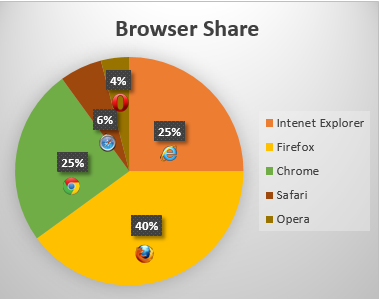
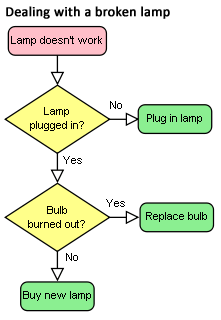

4.7. Embedded content
4.7.1. Introduction
This section is non-normative.
To embed an image in HTML, when there is only a single image resource,
use the img element and its src attribute.
<h2>From today’s featured article</h2> <img src="/uploads/100-marie-lloyd.jpg" alt="" width="100" height="150"> <p><b><a href="/wiki/Marie_Lloyd">Marie Lloyd</a></b> (1870–1922) was an English <a href="/wiki/Music_hall">music hall</a> singer, ...
However, there are a number of situations for which the author might wish to use multiple image resources that the user agent can choose from:
-
Different users might have different environmental characteristics:
-
The users' physical screen size might be different from one another.
A mobile phone’s screen might be 4 inches diagonally, while a laptop’s screen might be 14 inches diagonally.
This is only relevant when an image’s rendered size depends on the viewport size.
-
The users' screen pixel density might be different from one another.
A mobile phone’s screen might have three times as many physical pixels per inch compared to another mobile phone’s screen, regardless of their physical screen size.
-
The users' zoom level might be different from one another, or might change for a single user over time.
A user might zoom in to a particular image to be able to get a more detailed look.
The zoom level and the screen pixel density (the previous point) can both affect the number of physical screen pixels per CSS pixel. This ratio is usually referred to as device-pixel-ratio#device-pixel-ratioReferenced in:4.7.1. Introduction (2) (3).
-
The users' screen orientation might be different from one another, or might change for a single user over time.
A tablet can be held upright or rotated 90 degrees, so that the screen is either "portrait" or "landscape".
-
The users' network speed, network latency and bandwidth cost might be different from one another, or might change for a single user over time.
A user might be on a fast, low-latency and constant-cost connection while at work, on a slow, low-latency and constant-cost connection while at home, and on a variable-speed, high-latency and variable-cost connection anywhere else.
-
-
Authors might want to show the same image content but with different rendered size depending on, usually, the width of the viewport. This is usually referred to as viewport-based selection#viewport-based-selectionReferenced in:4.7.1. Introduction (2).
A Web page might have a banner at the top that always spans the entire viewport width. In this case, the rendered size of the image depends on the physical size of the screen (assuming a maximized browser window).
Another Web page might have images in columns, with a single column for screens with a small physical size, two columns for screens with medium physical size, and three columns for screens with big physical size, with the images varying in rendered size in each case to fill up the viewport. In this case, the rendered size of an image might be bigger in the one-column layout compared to the two-column layout, despite the screen being smaller.
-
Authors might want to show different image content depending on the rendered size of the image. This is usually referred to as art direction#image-art-directedReferenced in:4.7.1. Introduction (2) (3) (4)4.7.5. The img element4.7.5.1.21. An image in a picture element.
When a Web page is viewed on a screen with a large physical size (assuming a maximized browser window), the author might wish to include some less relevant parts surrounding the critical part of the image. When the same Web page is viewed on a screen with a small physical size, the author might wish to show only the critical part of the image.
-
Authors might want to show the same image content but using different image formats, depending on which image formats the user agent supports. This is usually referred to as image format-based selection#image-format-based-selectionReferenced in:4.7.1. Introduction.
A Web page might have some images in the JPEG, WebP and JPEG XR image formats, with the latter two having better compression abilities compared to JPEG. Since different user agents can support different image formats, with some formats offering better compression ratios, the author would like to serve the better formats to user agents that support them, while providing JPEG fallback for user agents that don’t.
The above situations are not mutually exclusive. For example, it is reasonable to combine different resources for different device-pixel-ratio with different resources for art direction.
While it is possible to solve these problems using scripting, doing so introduces some other problems:
- Some user agents agressively download images specified in the HTML markup, before scripts have had a chance to run, so that Web pages complete loading sooner. If a script changes which image to download, the user agent will potentially start two separate downloads, which can instead cause worse page loading performance.
- If the author avoids specifying any image in the HTML markup and instead instantiates a single download from script, that avoids the double download problem above but instead it makes no image be downloaded at all for users with scripting disabled and it disables the agressive image downloading optimization.
With this in mind, this specification introduces a number of features to address the above problems in a declarative manner.
- Device-pixel-ratio-based selection when the rendered size of the image is fixed
-
The
srcandsrcsetattributes on theimgelement can be used, using thexdescriptor, to provide multiple images that only vary in their size (the smaller image is a scaled-down version of the bigger image).The
xdescriptor is not appropriate when the rendered size of the image depends on the viewport width (viewport-based selection), but can be used together with art direction.<h2>From today’s featured article</h2> <img src="/uploads/100-marie-lloyd.jpg" srcset="/uploads/150-marie-lloyd.jpg 1.5x, /uploads/200-marie-lloyd.jpg 2x" alt="" width="100" height="150"> <p><b><a href="/wiki/Marie_Lloyd">Marie Lloyd</a></b> (1870–1922) was an English <a href="/wiki/Music_hall">music hall</a> singer, ...
The user agent can choose any of the given resources depending on the user’s screen’s pixel density, zoom level, and possibly other factors such as the user’s network conditions.
For backwards compatibility with older user agents that don’t yet understand the
srcsetattribute, one of the URLs is specified in theimgelement’ssrcattribute. This will result in something useful (though perhaps lower-resolution than the user would like) being displayed even in older user agents. For new user agents, thesrcattribute participates in the resource selection, as if it was specified insrcsetwith a1xdescriptor.The image’s rendered size is given in the
widthandheightattributes, which allows the user agent to allocate space for the image before it is downloaded. - Viewport-based selection
-
The
srcsetandsizesattributes can be used, using thewdescriptor, to provide multiple images that only vary in their size (the smaller image is a scaled-down version of the bigger image).In this example, a banner image takes up the entire viewport width (using appropriate CSS).<h1><img sizes="100vw" srcset="wolf-400.jpg 400w, wolf-800.jpg 800w, wolf-1600.jpg 1600w" src="wolf-400.jpg" alt="The rad wolf"></h1>
The user agent will calculate the effective pixel density of each image from the specified
wdescriptors and the specified rendered size in thesizesattribute. It can then choose any of the given resources depending on the user’s screen’s pixel density, zoom level, and possibly other factors such as the user’s network conditions.If the user’s screen is 320 CSS pixels wide, this is equivalent to specifying
wolf-400.jpg 1.25x, wolf-800.jpg 2.5x, wolf-1600.jpg 5x. On the other hand, if the user’s screen is 1200 CSS pixels wide, this is equivalent to specifyingwolf-400.jpg 0.33x, wolf-800.jpg 0.67x, wolf-1600.jpg 1.33x. By using thewdescriptors and thesizesattribute, the user agent can choose the correct image source to download regardless of how large the user’s device is.For backwards compatibility, one of the URLs is specified in the
imgelement’ssrcattribute. In new user agents, thesrcattribute is ignored when thesrcsetattribute useswdescriptors.In this example, the
sizesattribute could be omitted because the default value is100vw.In this example, the Web page has three layouts depending on the width of the viewport. The narrow layout has one column of images (the width of each image is about 100%), the middle layout has two columns of images (the width of each image is about 50%), and the widest layout has three columns of images, and some page margin (the width of each image is about 33%). It breaks between these layouts when the viewport is30emwide and50emwide, respectively.<img sizes="(max-width: 30em) 100vw, (max-width: 50em) 50vw, calc(33vw - 100px)" srcset="swing-200.jpg 200w, swing-400.jpg 400w, swing-800.jpg 800w, swing-1600.jpg 1600w" src="swing-400.jpg" alt="Kettlebell Swing">
The
sizesattribute sets up the layout breakpoints at30emand50em, and declares the image sizes between these breakpoints to be100vw,50vw, orcalc(33vw - 100px). These sizes do not necessarily have to match up exactly with the actual image width as specified in the CSS.The user agent will pick a width from the
sizesattribute, using the first item with a <media-condition> (the part in parentheses) that evaluates to true, or using the last item (calc(33vw - 100px)) if they all evaluate to false.For example, if the viewport width is
29em, then(max-width: 30em)evaluates to true and100vwis used, so the image size, for the purpose of resource selection, is29em. If the viewport width is instead32em, then(max-width: 30em)evaluates to false, but(max-width: 50em)evaluates to true and50vwis used, so the image size, for the purpose of resource selection, is16em(half the viewport width). Notice that the slightly wider viewport results in a smaller image because of the different layout.The user agent can then calculate the effective pixel density and choose an appropriate resource similarly to the previous example.
- Art direction-based selection
-
The
pictureelement and thesourceelement, together with themediaattribute, can be used, to provide multiple images that vary the image content (for intance the smaller image might be a cropped version of the bigger image).<picture> <source media="(min-width: 45em)" srcset="large.jpg"> <source media="(min-width: 32em)" srcset="med.jpg"> <img src="small.jpg" alt="The president giving an award."> </picture>
The user agent will choose the first
sourceelement for which the media query in themediaattribute matches, and then choose an appropriate URL from itssrcsetattribute.The rendered size of the image varies depending on which resource is chosen. To specify dimensions that the user agent can use before having downloaded the image, CSS can be used.
img { width: 300px; height: 300px } @media (min-width: 32em) { img { width: 500px; height:300px } } @media (min-width: 45em) { img { width: 700px; height:400px } }This example combines art direction- and device-pixel-ratio-based selection. A banner that takes half the viewport is provided in two versions, one for wide screens and one for narrow screens.<h1> <picture> <source media="(max-width: 500px)" srcset="banner-phone.jpeg, banner-phone-HD.jpeg 2x"> <img src="banner.jpeg" srcset="banner-HD.jpeg 2x" alt="The Breakfast Combo"> </picture> </h1>
- Image format-based selection
-
The
typeattribute on thesourceelement can be used, to provide multiple images in different formats.<h2>From today’s featured article</h2> <picture> <source srcset="/uploads/100-marie-lloyd.webp" type="image/webp"> <source srcset="/uploads/100-marie-lloyd.jxr" type="image/vnd.ms-photo"> <img src="/uploads/100-marie-lloyd.jpg" alt="" width="100" height="150"> </picture> <p><b><a href="/wiki/Marie_Lloyd">Marie Lloyd</a></b> (1870–1922) was an English <a href="/wiki/Music_hall">music hall</a> singer, ...
In this example, the user agent will choose the first source that has a
typeattribute with a supported MIME type. If the user agent supports WebP images, the firstsourceelement will be chosen. If not, but the user agent does support JPEG XR images, the secondsourceelement will be chosen. If neither of those formats are supported, theimgelement will be chosen.
4.7.2. Dependencies
-
Media Queries [MEDIAQ]
-
CSS Values and Units [CSS-VALUES]
-
CSS Syntax [CSS-SYNTAX-3]
-
Parse a comma-separated list of component values
4.7.3. The picture#elementdef-pictureReferenced in:3.2.4.2.2. Flow content3.2.4.2.5. Phrasing content3.2.4.2.6. Embedded content4.7.1. Introduction4.7.3. The picture element (2) (3) (4)4.7.4. The source element when used with the picture element (2) (3)4.7.5. The img element (2) (3) (4) (5) (6) (7) (8)4.7.5.1.21. An image in a picture element (2) (3) element
- Categories:
- Flow content.
- Phrasing content.
- Embedded content.
- Phrasing content.
- Contexts in which this element can be used:
- Where embedded content is expected.
- Content model:
- Zero or more
sourceelements, followed by oneimgelement, optionally intermixed with script-supporting elements. - Tag omission in text/html:
- Neither tag is omissible
- Content attributes:
- Global attributes
- Allowed ARIA role attribute values:
- None
- Allowed ARIA state and property attributes:
- Global aria-* attributes
- DOM interface:
-
interface HTMLPictureElement : HTMLElement {};
The picture element is a container
which provides multiples sources to its contained img element
to allow authors to declaratively control or give hints to the user agent about which image resource to use,
based on the screen pixel density, viewport size, image format, and other factors. It represents its children.
The picture element is somewhat different
from the similar-looking video and audio elements.
While all of them contain source elements,
the source element’s src attribute has no meaning
when the element is nested within a picture element,
and the resource selection algorithm is different.
As well, the picture element itself does not display anything;
it merely provides a context for its contained img element
that enables it to choose from multiple URLs.
4.7.4. The source element when used with the picture element
- Categories:
- Same as for the
sourceelement. - Contexts in which this element can be used:
- As a child of a
pictureelement, before theimgelement. - Content model:
- Same as for the
sourceelement. - Tag omission in text/html:
- No end tag
- Content attributes:
- Global attributes
srcset- Images to use in different situations (e.g., high-resolution displays, small monitors, etc)sizes- Image sizes between breakpointsmedia- Applicable mediatype- Type of embedded resource - Allowed ARIA role attribute values:
- None
- Allowed ARIA state and property attributes:
- Global aria-* attributes
- DOM interface:
-
partial interface HTMLSourceElement { attribute DOMString srcset#dom-htmlsourceelement-srcsetReferenced in:4.7.4. The source element when used with the picture element; attribute DOMString sizes#dom-htmlsourceelement-sizesReferenced in:4.7.4. The source element when used with the picture element; attribute DOMString media#dom-htmlsourceelement-mediaReferenced in:4.7.4. The source element when used with the picture element; };
The authoring requirements in this section only apply if the source element has
a parent that is a picture element.
The source element allows authors to specify multiple alternative source sets for img elements.
It does not represent anything on its own.
The srcset content attribute must be present,
and must consist of one or more image candidate strings,
each separated from the next by a U+002C COMMA character (,).
If an image candidate string contains no descriptors
and no space characters after the URL,
the following image candidate string, if there is one,
must begin with one or more space characters.
If the srcset attribute has any image candidate strings using a width descriptor,
the sizes content attribute must also be present,
and the value must be a valid source size list.
The media#element-attrdef-source-mediaReferenced in:11.2. Non-conforming features content attribute may also be present.
If present, the value must contain a valid media query list.
The type content attribute may also be present.
If present, the value must be a valid mime type.
It gives the type of the images in the source set,
to allow the user agent to skip to the next source element
if it does not support the given type.
If the type attribute
is not specified, the user agent will not select a different source element if it finds that it does not support
the image format after fetching it.
When a source element has a following sibling source element or img element with a srcset attribute specified, it must have
at least one of the following:
- A
mediaattribute specified with a value that, after stripping leading and trailing whitespace, is not the empty string and is not an ASCII case-insensitive match for the string "all". - A
typeattribute specified.
The src attribute must not be present.
The IDL attributes srcset, sizes and media must reflect the
respective content attributes of the same name.
4.7.5. The img#elementdef-imgReferenced in:1.9.1. Writing secure applications with HTML1.9.2.
Common pitfalls to avoid when using the scripting APIs (2) (3)2.7.2.1. The HTMLAllCollection interface3.1.3. DOM tree accessors (2) (3) (4) (5) (6)3.2.4.2.2. Flow content3.2.4.2.5. Phrasing content3.2.4.2.6. Embedded content3.2.4.2.7. Interactive content3.2.4.2.8. Palpable content (2)3.2.5.4. The translate attribute3.2.5.6. The dir attribute4.5.1. The a element (2)4.7.1. Introduction (2) (3) (4) (5)4.7.3. The picture element (2) (3)4.7.4. The source element when used with the picture element (2) (3)4.7.5. The img element (2) (3) (4) (5) (6) (7) (8) (9) (10) (11) (12) (13) (14) (15) (16) (17) (18) (19) (20) (21) (22) (23) (24) (25) (26) (27) (28) (29) (30) (31) (32) (33) (34) (35) (36) (37) (38) (39) (40) (41) (42) (43) (44) (45) (46) (47) (48) (49) (50) (51) (52) (53) (54) (55) (56) (57) (58) (59) (60) (61) (62) (63) (64) (65) (66) (67) (68) (69) (70) (71)4.7.5.1.7. Images that enhance the themes or subject matter of the page content4.7.5.1.12. Image maps4.7.5.1.14. Images of Pictures (2) (3)4.7.5.1.16. When a text alternative is not available at the time of publication (2) (3)4.7.5.1.17. An image not intended for the user (2) (3) (4)4.7.5.1.18. Icon Images4.7.5.1.21. An image in a picture element (2)4.7.5.1.23. Guidance for markup generators4.7.5.1.24. Guidance for conformance checkers (2)4.7.14.17. Security and privacy considerations4.7.15. The map element4.7.17. Image maps (2)4.7.17.2. Processing model (2) (3) (4) (5) (6)4.7.20. Dimension attributes (2)4.10.2. Categories4.10.3. The form element (2) (3)4.10.5.1.20. Image Button state (type=image)4.12.4.2. Color spaces and color correction5.4.2. Data model (2) (3) (4) (5)5.4.4. Processing model5.7.3. The DataTransfer interface5.7.5. Drag-and-drop processing model (2)5.7.7. The draggable attribute6.2.4. Named access on the Window object (2)6.3. Origin (2)7.7. Images (2) (3) (4) (5) (6)8.1.2. Elements8.2.3.2. The stack of open elements8.3. Serializing HTML fragments10.4.2. Images (2) (3) (4) (5)10.4.3. Attributes for embedded content and images (2) (3) (4) (5)10.4.4. Image maps11.1. Obsolete but conforming features11.1.1. Warnings for obsolete but conforming features11.2. Non-conforming features (2) (3) (4) (5) (6) (7) (8)11.3.4. Other elements, attributes and APIs (2) (3)12.1. text/htmlElementsElement content categories (2) (3) (4) (5) (6)Attributes (2) (3) (4) (5) (6) (7) (8)Element InterfacesEvents (2) (3) (4) (5) (6) (7)Changes between the 10 March 2016 Public Working Draft and the 10 October 2015 Public Working Draft. element
- Categories:
- Flow content.
- Phrasing content.
- Embedded content.
- Form-associated element.
- If the element has a
usemapattribute: interactive content.- Palpable content.
- Phrasing content.
- Contexts in which this element can be used:
- Where embedded content is expected.
- Content model:
- Nothing
- Tag omission in text/html:
- No end tag.
- Content attributes:
- Global attributes
alt- Replacement text for use when images are not availablesrc- Address of the resourcesrcset- Images to use in different situations (e.g., high-resolution displays, small monitors, etc)sizes- Image sizes between breakpointscrossorigin- How the element handles crossorigin requestsusemap- Name of image map to useismap- Whether the image is a server-side image mapwidth- Horizontal dimensionheight- Vertical dimension - Allowed ARIA role attribute values:
presentationrole only, for animgelement whosealtattribute’s value is empty (alt=""), otherwise Any role value.- Allowed ARIA state and property attributes:
- Global aria-* attributes
- Any
aria-*attributes applicable to the allowed roles. - Any
- DOM interface:
-
[NamedConstructor=Image(optional unsigned long width, optional unsigned long height)] interface HTMLImageElement#htmlimageelement-htmlimageelementReferenced in:7.7. Images11.3.4. Other elements, attributes and APIsElementsElement Interfaces : HTMLElement { attribute DOMString alt; attribute DOMString src; attribute DOMString srcset; attribute DOMString sizes; attribute DOMString? crossOrigin; attribute DOMString useMap; attribute boolean isMap; attribute unsigned long width; attribute unsigned long height; readonly attribute unsigned long naturalWidth; readonly attribute unsigned long naturalHeight; readonly attribute boolean complete; readonly attribute DOMString currentSrc; };
An img element represents an image.
The image given by the src#element-attrdef-img-srcReferenced in:5.7.5. Drag-and-drop processing modelElements and srcset#element-attrdef-img-srcsetReferenced in:Elements attributes,
and any previous sibling source elements' srcset attributes if the parent is a picture element,
is the embedded content; the value of
the alt#element-attrdef-img-altReferenced in:Elements attribute provides equivalent content for
those who cannot process images or who have image loading disabled (i.e., it is the img element’s fallback content).
The requirements on the alt attribute’s value are described in the next section.
The src attribute must be present, and must contain a valid non-empty URL potentially surrounded by spaces referencing a non-interactive,
optionally animated, image resource that is neither paged nor scripted.
The srcset attribute may also be present.
If present, its value must consist of one or more image candidate strings,
each separated from the next by a U+002C COMMA character (,).
If an image candidate string contains no descriptors
and no space characters after the URL,
the following image candidate string, if there is one,
must begin with one or more space characters.
An image candidate string#image-candidate-stringReferenced in:4.7.4. The source element when used with the picture element (2) (3) (4)4.7.5. The img element (2) (3) (4) (5) (6) (7) (8) (9) (10) (11) (12) (13) (14) consists of the following components, in order, with the further restrictions described below this list:
- Zero or more space characters.
- A valid non-empty URL that does not start or end with a U+002C COMMA character (,), referencing a non-interactive, optionally animated, image resource that is neither paged nor scripted.
- Zero or more space characters.
-
Zero or one of the following:
- A width descriptor, consisting of: a space character, a valid non-negative integer giving a number greater than zero representing the width descriptor value, and a U+0077 LATIN SMALL LETTER W character.
- A pixel density descriptor, consisting of: a space character, a valid floating-point number giving a number greater than zero representing the pixel density descriptor value, and a U+0078 LATIN SMALL LETTER X character.
- Zero or more space characters.
There must not be an image candidate string for an element that has the same width descriptor value as another image candidate string’s width descriptor value for the same element.
There must not be an image candidate string for an element that
has the same pixel density descriptor value as another image candidate string’s pixel density descriptor value for the same element.
For the purpose of this requirement,
an image candidate string with no descriptors is equivalent to
an image candidate string with a 1x descriptor.
If a source element has a sizes attribute present
or an img element has a sizes attribute present,
all image candidate strings for that
element must have the width descriptor specified.
If an image candidate string for a source or img element has the width descriptor specified, all other image candidate strings for that element must also
have the width descriptor specified.
The specified width in an image candidate string’s width descriptor must match the intrinsic width in the resource given by the image candidate string’s URL, if it has an intrinsic width.
The requirements above imply that images can be static bitmaps (e.g., PNGs, GIFs, JPEGs), single-page vector documents (single-page PDFs, XML files with an SVG root element), animated bitmaps (APNGs, animated GIFs), animated vector graphics (XML files with an SVG root element that use declarative SMIL animation), and so forth. However, these definitions preclude SVG files with script, multipage PDF files, interactive MNG files, HTML documents, plain text documents, and so forth. [PNG] [GIF] [JPEG] [PDF] [XML] [APNG] [SVG] [MNG]
If the srcset attribute is present,
the sizes attribute may also be present.
If present, its value must be a valid source size list.
A valid source size list#valid-source-size-listReferenced in:4.7.4. The source element when used with the picture element4.7.5. The img element (2) is a string that matches the following grammar: [CSS-VALUES] [MEDIAQ]
<source-size-list> = <source-size># [ , <source-size-value> ]? | <source-size-value> <source-size> = <media-condition> <source-size-value> <source-size-value> = <length>
A <source-size-value> must not be negative.
Percentages are not allowed in a <source-size-value>,
to avoid confusion about what it would be relative to.
The vw unit can be used for sizes relative to the viewport width.
The img element must not be used as a layout tool. In particular, img elements should not be used to display transparent images, as such images rarely convey meaning and
rarely add anything useful to the document.
The crossorigin#element-attrdef-img-crossoriginReferenced in:Elements attribute is a CORS
settings attribute. Its purpose is to allow images from third-party sites that allow
cross-origin access to be used with canvas.
An img element has a current request#current-requestReferenced in:4.7.5. The img element (2) (3) (4) (5) (6) (7) (8) (9) (10) (11) (12) (13) (14) (15) (16) (17) (18) (19) (20) (21) (22) (23) (24) (25) (26) (27) (28) (29) (30) (31) (32) (33) (34) (35) and a pending request#pending-requestReferenced in:4.7.5. The img element (2) (3) (4) (5) (6) (7) (8) (9) (10) (11) (12) (13) (14) (15) (16) (17) (18) (19) (20) (21) (22) (23) (24) (25) (26) (27) (28) (29).
The current request is initially set to a new image request.
The pending request is initially set to null.
The current request is usually referred to as the img element itself.
An image request#image-requestReferenced in:4.7.5. The img element (2) (3) (4) (5) (6) (7) (8) (9) (10) (11) has a state#image-stateReferenced in:4.7.5. The img element, current URL#current-urlReferenced in:4.7.5. The img element (2) (3) (4) (5) (6) (7) (8) (9) and image data#image-dataReferenced in:4.7.5. The img element (2) (3) (4) (5) (6).
An image request’s state is one of the following:
- Unavailable#statedef-img-unavailableReferenced in:4.7.5. The img element (2) (3) (4) (5) (6) (7)
- The user agent hasn’t obtained any image data, or has obtained some or all of the image data but hasn’t yet decoded enough of the image to get the image dimensions.
- Partially available#statedef-img-partially-availableReferenced in:4.7.5. The img element (2) (3) (4) (5)
- The user agent has obtained some of the image data and at least the image dimensions are available.
- Completely available#statedef-img-completely-availableReferenced in:4.7.5. The img element (2) (3) (4) (5) (6) (7)7.7. Images
- The user agent has obtained all of the image data and at least the image dimensions are available.
- Broken#statedef-img-brokenReferenced in:4.7.5. The img element (2) (3) (4) (5) (6) (7) (8)
- The user agent has obtained all of the image data that it can, but it cannot even decode the image enough to get the image dimensions (e.g., the image is corrupted, or the format is not supported, or no data could be obtained).
An image request’s current URL is initially the empty string.
An image request’s image data is the decoded image data.
When an image request is either in the partially available state or in the completely available state, it is said to be available#statedef-img-availableReferenced in:4.7.5. The img element.
An image request is initially unavailable.
When an img element is available,
it provides a paint source whose width is the image’s density-corrected intrinsic width (if any),
whose height is the image’s density-corrected intrinsic height (if any),
and whose appearance is the intrinsic appearance of the image.
In a browsing context where scripting is disabled, user agents may obtain images immediately or on demand. In a browsing context where scripting is enabled, user agents must obtain images immediately.
A user agent that obtains images immediately must immediately update the image data of an img element,
with the restart animation flag set if so stated,
whenever that element is created or has experienced relevant mutations.
A user agent that obtains images on demand must update the image data of an img element whenever it needs the image data (i.e., on demand),
but only if the img element is in the unavailable state. When an img element
has experienced relevant mutations, if the user
agent only obtains images on demand, the img element must return to the unavailable state.
The relevant mutations#relevant-mutationsReferenced in:4.7.5. The img element (2) (3) for an img element are as follows:
- The element’s
src,srcset,width, orsizesattributes are set, changed, or removed. - The element’s
srcattribute is set to the same value as the previous value. This must set the restart animation flag for the update the image data algorithm. - The element’s
crossoriginattribute’s state is changed. - The element is inserted into or removed from a
pictureparent element. - The element’s parent is a
pictureelement and asourceelement is inserted as a previous sibling. - The element’s parent is a
pictureelement and asourceelement that was a previous sibling is removed. - The element’s parent is a
pictureelement and asourceelement that is a previous sibling has itssrcset,sizes,mediaortypeattributes set, changed, or removed. - The element’s adopting steps are run.
Each img element has a last selected source#last-selected-sourceReferenced in:4.7.5. The img element (2) (3), which must initially be
null.
Each image request has a current pixel density#current-pixel-densityReferenced in:4.7.5. The img element (2) (3) (4) (5) (6) (7), which must initially be undefined.
When an img element has a current pixel density that is not 1.0, the
element’s image data must be treated as if its resolution, in device pixels per CSS pixels, was
the current pixel density.
The image’s density-corrected intrinsic width and height#density-corrected-intrinsic-width-and-heightReferenced in:4.7.5. The img element (2) (3) (4) (5) are the intrinsic width and height after taking into account the current pixel density.
For example, if the current pixel density is 3.125, that means that there are 300 device pixels per CSS inch, and thus if the image data is 300x600, it has intrinsic dimensions of 96 CSS pixels by 192 CSS pixels.
Each Document object must have a list of available images#list-of-available-imagesReferenced in:4.7.5. The img element (2) (3) (4) (5) (6) (7) (8). Each image
in this list is identified by a tuple consisting of an absolute URL, a CORS
settings attribute mode, and, if the mode is not No
CORS, an origin.
Each image furthermore has an ignore higher-layer caching#ignore-higher-layer-cachingReferenced in:4.7.5. The img element (2) (3) (4) (5) flag.
User agents may copy entries from one Document object’s list of available images to another at any time (e.g., when the Document is created, user agents can add to it all the images that are loaded in
other Documents), but must not change the keys of entries copied in this way when
doing so, and must unset the ignore higher-layer caching flag for the copied entry.
User agents may also remove images from such lists at any time (e.g., to save
memory).
User agents must remove entries in the list of available images as appropriate
given higher-layer caching semantics for the resource (e.g., the HTTP Cache-Control response header) when the ignore higher-layer caching flag is unset.
The list of available images is intended to enable synchronous
switching when changing the src attribute to a URL that has
previously been loaded, and to avoid re-downloading images in the same document even when they
don’t allow caching per HTTP. It is not used to avoid re-downloading the same image while the
previous image is still loading.
For example, if a resource has the HTTP response header Cache-Control: must-revalidate,
the user agent would remove it from the list of available images but could keep the image data separately,
and use that if the server responds with a 204 No Content status.
When the user agent is to update the image data#update-the-image-dataReferenced in:4.7.5. The img element (2) (3) (4) of an img element,
optionally with the restart animations flag set,
it must run the following steps:
-
If the element’s node document is not the active document, then run these substeps:
- Continue running this algorithm in parallel.
- Wait until the element’s node document is the active document.
- If another instance of this algorithm for this
imgelement was started after this instance (even if it aborted and is no longer running), then abort these steps. - Queue a microtask to continue this algorithm.
- If the user agent cannot support images, or its support for images has been disabled, then abort the image request for the current request and the pending request, set current request to the unavailable state, let pending request be null, and abort these steps.
-
If the element does not use
srcsetorpictureand it does not have a parent or it has a parent but it is not apictureelement, and it has asrcattribute specified and its value is not the empty string, let selected source be the value of the element’ssrcattribute, and selected pixel density be 1.0. Otherwise, let selected source be null and selected pixel density be undefined. - Let the
imgelement’s last selected source be selected source. -
If selected source is not null, run these substeps:
- Resolve selected source, relative to the element, and let the result be absolute URL. If that is not successful, then abort these inner set of steps.
- Let key be a tuple consisting of the resulting absolute
URL, the
imgelement’scrossoriginattribute’s mode, and, if that mode is not No CORS, the node document’s origin. -
If the list of available images contains an entry for key, run these subsubsteps:
- Set the ignore higher-layer caching flag for that entry.
- Abort the image request for the current request and the pending request.
- Let pending request be null.
- Let current request be a new image request whose image data is that of the entry and whose state is set to the completely available state.
- Update the presentation of the image appropriately.
- Let the current request’s current pixel density be selected pixel density.
- Queue a task to restart the animation if restart
animation is set, change current request’s current URL to absolute URL, and then fire a simple event named
loadat theimgelement. - Abort the update the image data algorithm.
- in parallel await a stable state, allowing the task that invoked this algorithm to continue. The synchronous section consists of all the remaining steps of this algorithm until the algorithm says the synchronous section has ended. (Steps in synchronous sections are marked with ⌛.)
-
⌛ If another instance of this algorithm for this
imgelement was started after this instance (even if it aborted and is no longer running), then abort these steps.Only the last instance takes effect, to avoid multiple requests when, for example, the
src,srcset, andcrossoriginattributes are all set in succession. -
⌛ Let selected source and selected pixel density be the URL and pixel density that results from selecting an image source, respectively.
-
⌛ If selected source is null, run these substeps:
- ⌛ Set the current request to the broken state, abort the image request for the current request and the pending request, and let pending request be null.
- ⌛ Queue a task to change the current request’s current URL to
the empty string, and then, if the element has a
srcattribute or it usessrcsetorpicture<, fire a simple event namederrorat theimgelement. - ⌛ Abort this algorithm.
-
⌛ Queue a task to fire a progress event named
loadstartat theimgelement.⌛ Resolve selected source, relative to the element, and let absolute URL be the resulting absolute URL. If that is not successful, run these substeps:
- ⌛ Abort the image request for the current request and the pending request.
- ⌛ Set the current request to the broken state.
- ⌛ Let pending request be null.
- ⌛ Queue a task to change the current request’s current URL to selected source, fire a simple event named
errorat theimgelement and then fire a simple event namedloadendat theimgelement. - ⌛ Abort the update the image data algorithm.
-
⌛ If the pending request is not null, and absolute URL is the same as the pending request’s current URL, then abort these steps.
⌛ If absolute URL is the same as the current request’s current URL, and current request is in the partially available state, then abort the image request for the pending request, queue a task to restart the animation if restart animation is set, and abort these steps.
⌛ If the pending request is not null, abort the image request for the pending request.
⌛ Let image request be a new image request whose current URL is absolute URL.
⌛ If current request is in the unavailable state or the broken state, let the current request be image request. Otherwise, let the pending request be image request.
⌛ Let request be the result of creating a potential-CORS request given absolute URL and the current state of the element’s
crossorigincontent attribute.⌛ Set request’s client to the element’s node document’s
Windowobject’s environment settings object and type to "image".⌛ If the element uses
srcsetorpicture, set request’s initiator to "imageset".⌛ Fetch request. Let this instance of the fetching algorithm be associated with image request.
The resource obtained in this fashion, if any, is image request’s image data. It can be either CORS-same-origin or CORS-cross-origin; this affects the origin of the image itself (e.g., when used on a
canvas).Fetching the image must delay the load event of the element’s node document until the task that is queued by the networking task source once the resource has been fetched (defined below) has been run.
This, unfortunately, can be used to perform a rudimentary port scan of the user’s local network (especially in conjunction with scripting, though scripting isn’t actually necessary to carry out such an attack). User agents may implement cross-origin access control policies that are stricter than those described above to mitigate this attack, but unfortunately such policies are typically not compatible with existing Web content.
If the resource is CORS-same-origin, each task that is queued by the networking task source while the image is being fetched, if image request is the current request, must fire a progress event named
progressat theimgelement. - End the synchronous section, continuing the remaining steps in parallel, but without missing any data from fetching.
-
As soon as possible, jump to the first applicable entry from the following list:
- If the resource type is
multipart/x-mixed-replace -
The next task that is queued by the networking task source while the image is being fetched must run the following steps:
-
If image request is the pending request and at least one body part has been completely decoded, abort the image request for the current request, upgrade the pending request to the current request.
-
Otherwise, if image request is the pending request and the user agent is able to determine that image request’s image is corrupted in some fatal way such that the image dimensions cannot be obtained, abort the image request for the current request, upgrade the pending request to the current request and set the current request’s state to broken.
-
Otherwise, if image request is the current request, it is in the unavailable state, and the user agent is able to determine image request’s image’s width and height, set the current request’s state to partially available.
-
Otherwise, if image request is the current request, it is in the unavailable state, and the user agent is able to determine that image request’s image is corrupted in some fatal way such that the image dimensions cannot be obtained, set the current request’s state to broken.
Each task that is queued by the networking task source while the image is being fetched must update the presentation of the image, but as each new body part comes in, it must replace the previous image. Once one body part has been completely decoded, the user agent must set the
imgelement to the completely available state and queue a task to fire a simple event namedloadat theimgelement.The
progressandloadendevents are not fired formultipart/x-mixed-replaceimage streams. -
- If the resource type and data corresponds to a supported image format, as described below
-
The next task that is queued by the networking task source while the image is being fetched must run the following steps:
-
If the user agent is able to determine image request’s image’s width and height, and image request is pending request, set image request’s state to partially available.
-
Otherwise, if the user agent is able to determine image request’s image’s width and height, and image request is current request, update the
imgelement’s presentation appropriately and set image request’s state to partially available. -
Otherwise, if the user agent is able to determine that image request’s image is corrupted in some fatal way such that the image dimensions cannot be obtained, and image request is pending request, abort the image request for the current request and the pending request, upgrade the pending request to the current request, set current request to the broken state, fire a simple event named
errorat theimgelement, fire a simple event namedloadendat theimgelement, and abort these steps. -
Otherwise, if the user agent is able to determine that image request’s image is corrupted in some fatal way such that the image dimensions cannot be obtained, and image request is current request, abort the image request for image request, fire a simple event named
errorat theimgelement, fire a simple event namedloadendat theimgelement, and abort these steps.
That task, and each subsequent task, that is queued by the networking task source while the image is being fetched, if image request is the current request, must update the presentation of the image appropriately (e.g., if the image is a progressive JPEG, each packet can improve the resolution of the image).
Furthermore, the last task that is queued by the networking task source once the resource has been fetched must additionally run these steps:
- If image request is the pending request, abort the image request for the current request, upgrade the pending request to the current request and
update the
imgelement’s presentation appropriately. - Set image request to the completely available state.
- Add the image to the list of available images using the key key, with the ignore higher-layer caching flag set.
- Fire a progress event or simple event named
loadat theimgelement, depending on the resource in image request. - Fire a progress event or simple event named
loadendat theimgelement, depending on the resource in image request.
-
- Otherwise
-
The image data is not in a supported file format; the user agent must set image request to the broken state, abort the image request for the current request and the pending request, upgrade the pending request to the current request if image request is the pending request, and then queue a task to first fire a simple event named
errorat theimgelement and then fire a simple event namedloadendat theimgelement.
- If the resource type is
To abort the image request#abort-the-image-requestReferenced in:4.7.5. The img element (2) (3) (4) (5) (6) (7) (8) (9) (10) (11) (12) for an image request image request means to run the following steps:
- Forget image request’s image data, if any.
- Abort any instance of the fetching algorithm for image request, discarding any pending tasks generated by that algorithm.
To upgrade the pending request to the current request#upgrade-the-pending-request-to-the-current-requestReferenced in:4.7.5. The img element (2) (3) (4) (5) (6) for an img element means to run the following steps:
- Let the
imgelement’s current request be the pending request. - Let the
imgelement’s pending request be null.
To fire a progress event or simple event#fire-a-progress-event-or-simple-eventReferenced in:4.7.5. The img element (2) (3) (4) (5) named type at an element e, depending on resource r, means to fire a progress event named type at e if r is CORS-same-origin, and otherwise fire a simple event named type at e.
While a user agent is running the above algorithm for an element x, there
must be a strong reference from the element’s node document to the element x,
even if that element is not in its Document.
An img element is said to use srcset or picture#use-srcset-or-pictureReferenced in:4.7.5. The img element if it has a srcset attribute specified or if it has a parent that is a picture element.
When an img element is in the completely available state and the user agent can decode the media data without errors, then the img element is said to be fully decodable#fully-decodableReferenced in:7.7. Images.
Whether the image is fetched successfully or not (e.g., whether the response status was an ok status) must be ignored when determining the image’s type and whether it is a valid image.
This allows servers to return images with error responses, and have them displayed.
The user agent should apply the image sniffing rules to determine the type of the image, with the image’s associated Content-Type headers giving the official type. If these rules are not applied, then the type of the image must be the type given by the image’s associated Content-Type headers.
User agents must not support non-image resources with the img element (e.g., XML
files whose root element is an HTML element). User agents must not run executable code (e.g.,
scripts) embedded in the image resource. User agents must only display the first page of a
multipage resource (e.g., a PDF file). User agents must not allow the resource to act in an
interactive fashion, but should honor any animation in the resource.
This specification does not specify which image types are to be supported.
An img element is associated with a source set.
A source set#source-setReferenced in:4.7.4. The source element when used with the picture element (2)4.7.5. The img element (2) (3) (4) (5) (6) (7) (8) (9) (10) (11) (12) (13) is an ordered set of zero or more image sources and a source size.
An image source#image-sourceReferenced in:4.7.5. The img element (2) (3) (4) (5) (6) (7) (8) (9) (10) (11) (12) (13) (14) is a URL, and optionally either a density descriptor, or a width descriptor.
A source size#source-sizeReferenced in:4.7.5. The img element (2) (3) (4) (5) (6) (7) is a <source-size-value>.
When a source size has a unit relative to the viewport,
it must be interpreted relative to the img element’s document’s viewport.
Other units must be interpreted the same as in Media Queries. [MEDIAQ]
When asked to select an image source#selecting-an-image-sourceReferenced in:4.7.5. The img element (2) for a given img element el, user agents must do the following:
- Update the source set for el.
- If el’s source set is empty, return null as the URL and undefined as the pixel density and abort these steps.
- Otherwise, take el’s source set and let it be source set.
- If an entry b in source set has the same associated density descriptor as an earlier entry a in source set, then remove entry b. Repeat this step until none of the entries in source set have the same associated density descriptor as an earlier entry.
- In a user agent-specific manner, choose one image source from source set. Let this be selected source.
- Return selected source and its associated pixel density.
When asked to update the source set#update-the-source-setReferenced in:4.7.5. The img element for a given img element el,
user agents must do the following:
- Set el’s source set to an empty source set.
- If el has a parent node and that is a
pictureelement, let elements be an array containing el’s parent node’s child elements, retaining relative order. Otherwise, let elements be array containing only el. - If el has a
widthattribute, and parsing that attribute’s value using the rules for parsing dimension values doesn’t generate an error or a percentage value, then let width be the returned integer value. Otherwise, let width be null. -
Iterate through elements, doing the following for each item child:
-
If child is el:
- If child has a
srcsetattribute, parse child’s srcset attribute and let the returned source set be source set. Otherwise, let source set be an empty source set. - Parse child’s sizes attribute with the fallback width width, and let source set’s source size be the returned value.
- If child has a
srcattribute whose value is not the empty string and source set does not contain an image source with a density descriptor value of 1, and no image source with a width descriptor, append child’ssrcattribute value to source set. - Normalize the source densities of source set.
- Let el’s source set be source set.
- Abort this algorithm.
- If child has a
- If child is not a
sourceelement, continue to the next child. Otherwise, child is asourceelement. - If child does not have a
srcsetattribute, continue to the next child. - Parse child’s
srcsetattribute and let the returned source set be source set. - If source set has zero image sources, continue to the next child.
- If child has a
mediaattribute, and its value does not match the environment, continue to the next child. - Parse child’s
sizesattribute with the fallback width width, and let source set’s source size be the returned value. - If child has a
typeattribute, and its value is an unknown or unsupported MIME type, continue to the next child. - Normalize the source densities of source set.
- Let el’s source set be source set.
- Abort this algorithm.
-
Each img element independently considers
its previous sibling source elements
plus the img element itself
for selecting an image source, ignoring any other (invalid) elements,
including other img elements in the same picture element,
or source elements that are following siblings
of the relevant img element.
When asked to parse a srcset attribute#parse-a-srcset-attributeReferenced in:4.7.5. The img element (2) from an element,
parse the value of the element’s srcset attribute as follows:
- Let input be the value passed to this algorithm.
- Let position be a pointer into input, initially pointing at the start of the string.
- Let candidates be an initially empty source set.
- Splitting loop: Collect a sequence of characters that are space characters or U+002C COMMA characters. If any U+002C COMMA characters were collected, that is a parse error.
- If position is past the end of input, return candidates and abort these steps.
- Collect a sequence of characters that are not space characters, and let that be url.
- Let descriptors be a new empty list.
-
If url ends with a U+002C COMMA character (,), follow these substeps:
- Remove all trailing U+002C COMMA characters from url. If this removed more than one character, that is a parse error.
Otherwise, follow these substeps:
- Descriptor tokenizer: Skip whitespace
- Let current descriptor be the empty string.
- Let state be in descriptor.
-
Let c be the character at position. Do the following depending on the value of state. For the purpose of this step, "EOF" is a special character representing that position is past the end of input.
- In descriptor
-
Do the following, depending on the value of c:
- Space character
- If current descriptor is not empty, append current descriptor to descriptors and let current descriptor be the empty string. Set state to after descriptor.
- U+002C COMMA (,)
- Advance position to the next character in input. If current descriptor is not empty, append current descriptor to descriptors. Jump to the step labeled descriptor parser.
- U+0028 LEFT PARENTHESIS (()
- Append c to current descriptor. Set state to in parens.
- EOF
- If current descriptor is not empty, append current descriptor to descriptors. Jump to the step labeled descriptor parser.
- Anything else
- Append c to current descriptor.
- In parens
Do the following, depending on the value of c:
- U+0029 RIGHT PARENTHESIS ())
- Append c to current descriptor. Set state to in descriptor.
- EOF
- Append current descriptor to descriptors. Jump to the step labeled descriptor parser.
- Anything else
- Append c to current descriptor.
- After descriptor
Do the following, depending on the value of c:
- Space character
- Stay in this state.
- EOF
- Jump to the step labeled descriptor parser.
- Anything else
- Set state to in descriptor. Set position to the previous character in input.
Advance position to the next character in input. Repeat this substep.
In order to be compatible with future additions, this algorithm supports multiple descriptors and descriptors with parens.
- Descriptor parser: Let error be no.
- Let width be absent.
- Let density be absent.
- Let future-compat-h be absent.
-
For each descriptor in descriptors, run the appropriate set of steps from the following list:
- If the descriptor consists of a valid non-negative integer followed by a U+0077 LATIN SMALL LETTER W character
-
-
If the user agent does not support the
sizesattribute, let error be yes.A conforming user agent will support the
sizesattribute. However, user agents typically implement and ship features in an incremental manner in practice. - If width and density are not both absent, then let error be yes.
- Apply the rules for parsing non-negative integers to the descriptor. If the result is zero, let error be yes. Otherwise, let width be the result.
-
- If the descriptor consists of a valid floating-point number followed by a U+0078 LATIN SMALL LETTER X character
-
- If width, density and future-compat-h are not all absent, then let error be yes.
-
Apply the rules for parsing floating-point number values to the descriptor. If the result is less than zero, let error be yes. Otherwise, let density be the result.
If density is zero, the intrinsic dimensions will be infinite. User agents are expected to have limits in how big images can be rendered, which is allowed by the hardware limitations clause.
- If the descriptor consists of a valid non-negative integer followed by a U+0068 LATIN SMALL LETTER H character
-
This is a parse error.
- If future-compat-h and density are not both absent, then let error be yes.
- Apply the rules for parsing non-negative integers to the descriptor. If the result is zero, let error be yes. Otherwise, let future-compat-h be the result.
- Anything else
- Let error be yes.
- If future-compat-h is not absent and width is absent, let error be yes.
- If error is still no, then append a new image source to candidates whose URL is url, associated with a width width if not absent and a pixel density density if not absent. Otherwise, there is a parse error.
- Return to the step labeled splitting loop.
When asked to parse a sizes attribute#parse-a-sizes-attributeReferenced in:4.7.5. The img element (2) from an element, parse a comma-separated list of component values from the value of the element’s sizes attribute
(or the empty string, if the attribute is absent),
and let unparsed sizes list be the result. [CSS-SYNTAX-3]
For each unparsed size in unparsed sizes list:
- Remove all consecutive <whitespace-token>s from the end of unparsed size. If unparsed size is now empty, that is a parse error; continue to the next iteration of this algorithm.
- If the last component value in unparsed size is a valid non-negative
<source-size-value>, let size be its value and remove the component value from unparsed size. Any CSS function other than thecalc()function is invalid. Otherwise, there is a parse error; continue to the next iteration of this algorithm. - Remove all consecutive <whitespace-token>s from the end of unparsed size. If unparsed size is now empty, return size and exit this algorithm. If this was not the last item in unparsed sizes list, that is a parse error.
- Parse the remaining component values in unparsed size as a <media-condition>. If it does not parse correctly, or it does parse correctly but the <media-condition> evaluates to false, continue to the next iteration of this algorithm. [MEDIAQ]
- Return size and exit this algorithm.
If the above algorithm exhausts unparsed sizes list without returning a size value, follow these steps:
- If width is not null, return a
<length>with the value width and the unitpx. - Return
100vw.
A parse error for the algorithms above indicates a non-fatal mismatch between input and requirements. User agents are encouraged to expose parse errors somehow.
While a valid source size list only contains a bare <source-size-value> (without an accompanying <media-condition>)
as the last entry in the <source-size-list>,
the parsing algorithm technically allows such at any point in the list,
and will accept it immediately as the size
if the preceding entries in the list weren’t used.
This is to enable future extensions,
and protect against simple author errors such as a final trailing comma.
An image source can have a density descriptor, a width descriptor, or no descriptor at all accompanying its URL. Normalizing a source set gives every image source a density descriptor.
When asked to normalize the source densities#normalize-the-source-densitiesReferenced in:4.7.5. The img element (2) of a source set source set, the user agent must do the following:
- Let source size be source set’s source size.
-
For each image source in source set:
- If the image source has a density descriptor, continue to the next image source.
-
Otherwise, if the image source has a width descriptor, replace the width descriptor with a density descriptor with a value of the width descriptor divided by the source size and a unit of
x.If the source size is zero, the density would be infinity, which results in the intrinsic dimensions being zero by zero.
- Otherwise, give the image source a density descriptor of
1x.
The user agent may at any time run the following algorithm to update an img element’s image in order to react to changes in the environment. (User agents are not
required to ever run this algorithm; for example, if the user is not looking at the page any
more, the user agent might want to wait until the user has returned to the page before determining
which image to use, in case the environment changes again in the meantime.)
User agents are encouraged to run this algorithm in particular when the user changes the viewport’s size
(e.g., by resizing the window or changing the page zoom),
and when an img element is inserted into a document,
so that the density-corrected intrinsic width and height match the new viewport,
and so that the correct image is chosen when art direction is involved.
- in parallel await a stable state. The synchronous section consists of all the remaining steps of this algorithm until the algorithm says the synchronous section has ended. (Steps in synchronous sections are marked with ⌛.)
- ⌛ If the
imgelement does not usesrcsetorpicture, it is not in aDocument, has image data whose resource type ismultipart/x-mixed-replace, or the pending request is not null, then abort this algorithm. - ⌛ Let selected source and selected pixel density be the URL and pixel density that results from selecting an image source, respectively.
- ⌛ If selected source is null, then abort these steps.
- ⌛ If selected source and selected pixel density are the same as the element’s last selected source and current pixel density, then abort these steps.
- ⌛ Resolve selected source, relative to the element, and let absolute URL be the resulting absolute URL. If that is not successful, abort these steps.
- ⌛ Let corsAttributeState be the state of the element’s
crossorigincontent attribute. - ⌛ Let origin be the origin of the
imgelement’s node document. - ⌛ Let client be the
imgelement’s node document’sWindowobject’s environment settings object. - ⌛ Let key be a tuple consisting of absolute URL, corsAttributeState, and, if corsAttributeState is not No CORS, origin.
- ⌛ Let image request be a new image request whose current URL is absolute URL
- ⌛ Let the element’s pending request be image request.
- End the synchronous section, continuing the remaining steps in parallel.
-
If the list of available images contains an entry for key, then set image request’s image data to that of the entry. Continue to the next step.
Otherwise, run these substeps:
- Let request be the result of creating a potential-CORS request given absolute URL and corsAttributeState.
- Set request’s client to client, type to "
image", and set request’s synchronous flag. - Let response be the result of fetching request.
- If response’s unsafe response is a network error or
if the image format is unsupported (as determined by applying the image sniffing rules, again as mentioned earlier),
or if the user agent is able to determine that image request’s image is corrupted in
some fatal way such that the image dimensions cannot be obtained, or if the resource type is
multipart/x-mixed-replace, then let pending request be null and abort these steps. - Otherwise, response’s unsafe response is image
request’s image data. It can be either CORS-same-origin or CORS-cross-origin; this affects the origin of the image itself (e.g., when used on a
canvas).
-
Queue a task to run the following substeps:
- If the
imgelement has experienced relevant mutations since this algorithm started, then let pending request be null and abort these steps. - Let the
imgelement’s last selected source be selected source and theimgelement’s current pixel density be selected pixel density. - Set image request to the completely available state.
- Add the image to the list of available images using the key key, with the ignore higher-layer caching flag set.
- Upgrade the pending request to the current request.
- Update the
imgelement’s presentation appropriately. - Fire a simple event named
loadat theimgelement.
- If the
The task source for the tasks queued by algorithms in this section is the DOM manipulation task source.
What an img element represents depends on the src attribute and the alt attribute.
- If the
srcattribute is set and thealtattribute is set to the empty string -
The image is either decorative or supplemental to the rest of the content, redundant with some other information in the document.
If the image is available and the user agent is configured to display that image, then the element represents the element’s image data.
Otherwise, the element represents nothing, and may be omitted completely from the rendering. User agents may provide the user with a notification that an image is present but has been omitted from the rendering.
- If the
srcattribute is set and thealtattribute is set to a value that isn’t empty -
The image is a key part of the content; the
altattribute gives a textual equivalent or replacement for the image.If the image is available and the user agent is configured to display that image, then the element represents the element’s image data.
Otherwise, the element represents the text given by the
altattribute. User agents may provide the user with a notification that an image is present but has been omitted from the rendering. - If the
srcattribute is set and thealtattribute is not -
There is no textual equivalent of the image available.
If the image is available and the user agent is configured to display that image, then the element represents the element’s image data.
Otherwise, the user agent should display some sort of indicator that there is an image that is not being rendered, and may, if requested by the user, or if so configured, or when required to provide contextual information in response to navigation, provide caption information for the image, derived as follows:
- If the image is a descendant of a
figureelement that has a childfigcaptionelement, and, ignoring thefigcaptionelement and its descendants, thefigureelement has noTextnode descendants other than inter-element whitespace, and no embedded content descendant other than theimgelement, then the contents of the first suchfigcaptionelement are the caption information; abort these steps. - There is no caption information.
- If the image is a descendant of a
- If the
srcattribute is not set and either thealtattribute is set to the empty string or thealtattribute is not set at all -
The element represents nothing.
- Otherwise
-
The element represents the text given by the
altattribute.
The alt attribute does not represent advisory information.
User agents must not present the contents of the alt attribute
in the same way as content of the title attribute.
User agents may always provide the user with the option to display any image, or to prevent any image from being displayed. User agents may also apply heuristics to help the user make use of the image when the user is unable to see it, e.g., due to a visual disability or because they are using a text terminal with no graphics capabilities. Such heuristics could include, for instance, optical character recognition (OCR) of text found within the image.
While user agents are encouraged to repair cases of missing alt attributes, authors must not rely on such behavior. Requirements for providing text to act as an alternative for images are described
in detail below.
The contents of img elements, if any, are ignored for the purposes of
rendering.
The usemap attribute,
if present, can indicate that the image has an associated image map.
The ismap#element-attrdef-img-ismapReferenced in:Elements attribute, when used on an element that is a descendant of an a element with an href attribute, indicates by its
presence that the element provides access to a server-side image
map. This affects how events are handled on the corresponding a element.
The ismap attribute is a boolean attribute. The attribute must not be specified
on an element that does not have an ancestor a element
with an href attribute.
The usemap and ismap attributes
can result in confusing behavior when used together with source elements with the media attribute specified
in a picture element.
The img element supports dimension
attributes.
The alt#dom-htmlimageelement-altReferenced in:4.7.5. The img element, src#dom-htmlimageelement-srcReferenced in:4.7.5. The img element, srcset#dom-htmlimageelement-srcsetReferenced in:4.7.5. The img element and sizes#dom-htmlimageelement-sizesReferenced in:4.7.5. The img element IDL attributes must reflect the
respective content attributes of the same name.
The crossOrigin#dom-htmlimageelement-crossoriginReferenced in:4.7.5. The img element IDL attribute must reflect the crossorigin content attribute.
The useMap#dom-htmlimageelement-usemapReferenced in:4.7.5. The img element IDL attribute must reflect the usemap content attribute.
The isMap#dom-htmlimageelement-ismapReferenced in:4.7.5. The img element IDL attribute must reflect the ismap content attribute.
- image .
width[ = value ]- image .
height[ = value ] - image .
-
These attributes return the actual rendered dimensions of the image, or zero if the dimensions are not known.
They can be set, to change the corresponding content attributes.
- image .
naturalWidth- image .
naturalHeight - image .
-
These attributes return the intrinsic dimensions of the image, or zero if the dimensions are not known.
- image .
complete -
Returns true if the image has been completely downloaded or if no image is specified; otherwise, returns false.
- image .
currentSrc -
Returns the image’s absolute URL.
- image = new
Image( [ width [, height ] ] ) -
Returns a new
imgelement, with thewidthandheightattributes set to the values passed in the relevant arguments, if applicable.
The IDL attributes width#dom-htmlimageelement-widthReferenced in:4.7.5. The img element and height#dom-htmlimageelement-heightReferenced in:4.7.5. The img element must return the rendered width and height of the
image, in CSS pixels, if the image is being rendered, and is being rendered to a
visual medium; or else the density-corrected intrinsic width and height of the image, in CSS pixels, if the image has intrinsic dimensions and is available but not being rendered to a visual medium; or else 0, if
the image is not available or does not have intrinsic dimensions. [CSS-2015]
On setting, they must act as if they reflected the respective content attributes of the same name.
The IDL attributes naturalWidth#dom-htmlimageelement-naturalwidthReferenced in:4.7.5. The img element and naturalHeight#dom-htmlimageelement-naturalheightReferenced in:4.7.5. The img element must return
the density-corrected intrinsic width and height of the image, in CSS pixels, if the image has intrinsic dimensions and is available, or else 0. [CSS-2015]
The IDL attribute complete#dom-htmlimageelement-completeReferenced in:4.7.5. The img element must return true if
any of the following conditions is true:
- Both the
srcattribute and thesrcsetattribute are omitted. - The
srcsetattribute is omitted and thesrcattribute’s value is the empty string. - The final task that is queued by the networking task source once the resource has been fetched has been queued.
- The
imgelement is completely available. - The
imgelement is broken.
Otherwise, the attribute must return false.
The value of complete can thus change while
a script is executing.
The currentSrc#dom-htmlimageelement-currentsrcReferenced in:4.7.5. The img element IDL attribute
must return the img element’s current request’s current URL.
A constructor is provided for creating HTMLImageElement objects (in addition to
the factory methods from DOM such as createElement()): Image(width, height).
When invoked as a constructor, this must return a new HTMLImageElement object (a new img element). If the width argument is present, the new object’s width content attribute must be set to width. If the height argument is also present, the new object’s height content attribute must be set to height.
The element’s node document must be the active document of the browsing context of the Window object on which the interface object of
the invoked constructor is found.
4.7.5.1. Requirements for providing text to act as an alternative for images
Text alternatives, [WCAG] are a primary way of making visual information accessible, because they can be rendered through any sensory modality (for example, visual, auditory or tactile) to match the needs of the user. Providing text alternatives allows the information to be rendered in a variety of ways by a variety of user agents. For example, a person who cannot see a picture can have the text alternative read aloud using synthesized speech.
The alt attribute on images is a very important accessibility attribute.
Authoring useful alt attribute content requires the author to carefully consider the context in
which the image appears and the function that image may have in that context. The guidance included
here addresses the most common ways authors use images. Additional guidance and techniques are available in Resources on Alternative Text for Images.
4.7.5.1.1. Examples of scenarios where users benefit from text alternatives for images
- They have a very slow connection and are browsing with images disabled.
- They have a vision impairment and use text to speech software.
- They have a cognitive impairment and use text to speech software.
- They are using a text-only browser.
- They are listening to the page being read out by a voice Web browser.
- They have images disabled to save on download costs.
- They have problems loading images or the source of an image is wrong.
4.7.5.1.2. General guidelines
Except where otherwise specified, the alt attribute must be specified and its value must not be empty;
the value must be an appropriate functional replacement for the image. The specific requirements for the alt attribute content
depend on the image’s function in the page, as described in the following sections.
To determine an appropriate text alternative it is important to think about why an image is being included in a page. What is its purpose? Thinking like this will help you to understand what is important about the image for the intended audience. Every image has a reason for being on a page, because it provides useful information, performs a function, labels an interactive element, enhances aesthetics or is purely decorative. Therefore, knowing what the image is for, makes writing an appropriate text alternative easier.
4.7.5.1.3. A link or button containing nothing but an image
When an a element that is a hyperlink, or a button element, has no text content
but contains one or more images, include text in the alt attribute(s) that together convey the purpose of the link or button.
alt attributes of the images:

<ul> <li><button><img src="b.png" alt="Bold"></button></li> <li><button><img src="i.png" alt="Italics"></button></li> <li><button><img src="strike.png" alt="Strike through"></button></li> <li><button><img src="blist.png" alt="Bulleted list"></button></li> <li><button><img src="nlist.png" alt="Numbered list"></button></li> </ul>
<a href="http://w3.org"> <img src="images/w3c_home.png" width="72" height="48" alt="W3C web site"> </a>
<a href="http://w3.org"> <img src="images/w3c_home.png" width="72" height="48" alt="W3C home"> </a>
Depending on the context in which an image of a logo is used it could be appropriate to provide an indication, as part of the text alternative, that the image is a logo. Refer to section §4.7.5.1.19 Logos, insignia, flags, or emblems.

<a href="preview.html"> <img src="images/preview.png" width="32" height="30" alt="Print preview."> </a>
<button> <img src="images/search.png" width="74" height="29" alt="Search"> </button>
alt attribute of the first image.


<a href="pipco-home.html"> <img src="pip.gif" alt="PIP CO home"><img src="co.gif" alt=""> </a>
4.7.5.1.4. Graphical Representations: Charts, diagrams, graphs, maps, illustrations
Users can benefit when content is presented in graphical form, for example as a flowchart, a diagram, a graph, or a map showing directions. Users also benefit when content presented in a graphical form is also provided in a textual format, these users include those who are unable to view the image (e.g., because they have a very slow connection, or because they are using a text-only browser, or because they are listening to the page being read out by a hands-free automobile voice Web browser, or because they have a visual impairment and use an assistive technology to render the text to speech).
alt attribute representing the data shown in the pie chart:

<img src="piechart.gif" alt="Pie chart: Browser Share - Internet Explorer 25%, Firefox 40%, Chrome 25%, Safari 6% and Opera 4%.">
alt attribute content labels the image.
<p>According to a recent study Firefox has a 40% browser share, Internet Explorer has 25%, Chrome has 25%, Safari has 6% and Opera has 4%.</p> <p><img src="piechart.gif" alt="Pie chart representing the data in the previous paragraph."></p>
It can be seen that when the image is not available, for example because the src attribute value is incorrect, the text alternative provides the user with a brief description of
the image content:

In cases where the text alternative is lengthy, more than a sentence or two, or would benefit
from the use of structured markup, provide a brief description or label using the alt attribute, and an associated text alternative.
alt attribute, in this case the text alternative is a description of the link target
as the image is the sole content of a link. The link points to a description, within the same document, of the
process represented in the flowchart.

<a href="#desc"><img src="flowchart.gif" alt="Flowchart: Dealing with a broken lamp."></a> ... ... <div id="desc"> <h2>Dealing with a broken lamp</h2> <ol> <li>Check if it’s plugged in, if not, plug it in.</li> <li>If it still doesn’t work; check if the bulb is burned out. If it is, replace the bulb.</li> <li>If it still doesn’t work; buy a new lamp.</li> </ol> </div>
alt attribute as the information is a data set. Instead a
structured text alternative is provided below the image in the form of a data table using the data that is represented
in the chart image.

Indications of the highest and lowest rainfall for each season have been included in the table, so trends easily identified in the chart are also available in the data table.
| United Kingdom | Japan | Australia | |
|---|---|---|---|
| Spring | 5.3 (highest) | 2.4 | 2 (lowest) |
| Summer | 4.5 (highest) | 3.4 | 2 (lowest) |
| Autumn | 3.5 (highest) | 1.8 | 1.5 (lowest) |
| Winter | 1.5 (highest) | 1.2 | 1 (lowest) |
<figure> <figcaption>Rainfall Data</figcaption> <img src="rainchart.gif" alt="Bar chart: Average rainfall in millimetres by Country and Season."> <table> <caption>Rainfall in millimetres by Country and Season.</caption> <tr><td><th scope="col">UK <th scope="col">Japan<th scope="col">Australia</tr> <tr><th scope="row">Spring <td>5.5 (highest)<td>2.4 <td>2 (lowest)</tr> <tr><th scope="row">Summer <td>4.5 (highest)<td>3.4<td>2 (lowest)</tr> <tr><th scope="row">Autumn <td>3.5 (highest) <td>1.8 <td>1.5 (lowest)</tr> <tr><th scope="row">Winter <td>1.5 (highest) <td>1.2 <td>1 lowest</tr> </table> </figure>
The figure element is used to group the Bar Chart image and data table.
The figcaption element provides a caption for the grouped content.
For any of the examples in this section the details and summary elements could be used so that the text descriptions for the images are only displayed on demand:


<figure> <img src="flowchart.gif" alt="Flowchart: Dealing with a broken lamp."> <details> <summary>Dealing with a broken lamp</summary> <ol> <li>Check if it’s plugged in, if not, plug it in.</li> <li>If it still doesn’t work; check if the bulb is burned out. If it is, replace the bulb.</li> <li>If it still doesn’t work; buy a new lamp.</li> </ol> </details> </figure>
The details and summary elements are not currently well supported by browsers, until such times they are supported, if used, you will need to use scripting to provide the functionality. There are a number of scripted Polyfills and scripted custom controls available, in popular JavaScript UI widget libraries, which provide similar functionality.
4.7.5.1.5. Images of text
Sometimes, an image only contains text, and the purpose of the image
is to display text using visual effects and /or fonts. It is strongly recommended that text styled using CSS be used, but if this is not possible, provide
the same text in the alt attribute as is in the image.

<h1><img src="gethappy.gif" alt="Get Happy!"></h1>
<p><img src="sale.gif" alt="The BIG sale ...ends Friday."></p>
In situations where there is also a photo or other graphic along with the image of text, ensure that the words in the image text are included in the text alternative, along with any other description of the image that conveys meaning to users who can view the image, so the information is also available to users who cannot view the image.
Only 5.99!
<p>Only <img src="euro.png" alt="euro ">5.99!
An image should not be used if Unicode characters would serve an identical purpose. Only when the text cannot be directly represented using Unicode, e.g., because of decorations or because the character is not in the Unicode character set (as in the case of gaiji), would an image be appropriate.
If an author is tempted to use an image because their default system font does not support a given character, then Web Fonts are a better solution than images.
<p><img src="initials/fancyO.png" alt="O">nce upon a time and a long long time ago...
4.7.5.1.6. Images that include text
Sometimes, an image consists of a graphics such as a chart and associated text. In this case it is recommended that the text in the image is included in the text alternative.

<p><img src="figure1.gif" alt="Figure 1. Distribution of Articles by Journal Category. Pie chart: Language=68%, Education=14% and Science=18%."></p>
alt attribute
and a longer text alternative in text. The figure and figcaption elements are used to associate the longer text alternative with the image. The alt attribute is used
to label the image.
<figure> <img src="figure1.gif" alt="Figure 1"> <figcaption><strong>Figure 1.</strong> Distribution of Articles by Journal Category. Pie chart: Language=68%, Education=14% and Science=18%.</figcaption> </figure>
The advantage of this method over the previous example is that the text alternative
is available to all users at all times. It also allows structured mark up to be used in the text
alternative, where as a text alternative provided using the alt attribute does not.
4.7.5.1.7. Images that enhance the themes or subject matter of the page content
An image that isn’t discussed directly by the surrounding text but still has
some relevance can be included in a page using the img element. Such images
are more than mere decoration, they may augment the themes or subject matter of the page
content and so still form part of the content. In these cases, it is recommeneded that a
text alternative be provided.
alt attribute and
a link below the image to a longer description located at the bottom of the document. At the end
of the longer description there is also a link to further information about the painting.
<header> <h1>The Lady of Shalott</h1> <p>A poem by Alfred Lord Tennyson</p> </header> <img src="shalott.jpeg" alt="Painting of a young woman with long hair, sitting in a wooden boat. "> <p><a href="#des">Description of the painting</a>.</p> <!-- Full Recitation of Alfred, Lord Tennyson’s Poem. --> ... ... ... <p id="des">The woman in the painting is wearing a flowing white dress. A large piece of intricately patterned fabric is draped over the side. In her right hand she holds the chain mooring the boat. Her expression is mournful. She stares at a crucifix lying in front of her. Beside it are three candles. Two have blown out. <a href="http://bit.ly/5HJvVZ">Further information about the painting</a>.</p>
<img src="orateur_robin_berjon.png" alt="Portrait photo(black and white) of Robin."> <h1>Robin Berjon</h1> <p>What more needs to be said?</p>
4.7.5.1.8. A graphical representation of some of the surrounding text
In many cases, the image is actually just supplementary, and its presence merely reinforces the
surrounding text. In these cases, the alt attribute must be
present but its value must be the empty string.
In general, an image falls into this category if removing the image doesn’t make the page any less useful, but including the image makes it a lot easier for users of visual browsers to understand the concept.
alt attribute, and
there is a link after the image. The link points to a page containing information about the painting.
The Lady of Shalott
A poem by Alfred Lord Tennyson.
Full recitation of Alfred, Lord Tennyson’s poem.
<header><h1>The Lady of Shalott</h1> <p>A poem by Alfred Lord Tennyson</p></header> <figure> <img src="shalott.jpeg" alt="Painting of a woman in a white flowing dress, sitting in a small boat."> <p><a href="http://bit.ly/5HJvVZ">About this painting.</a></p> </figure> <!-- Full Recitation of Alfred, Lord Tennyson’s Poem. -->
4.7.5.1.9. A purely decorative image that doesn’t add any information
Purely decorative images are visual enhancements, decorations or embellishments that provide no function or information beyond aesthetics to users who can view the images.
Mark up purely decorative images so they can be ignored by assistive technology by using an empty alt attribute (alt=""). While it is not unacceptable to include decorative images inline,
it is recommended if they are purely decorative to include the image using CSS.
alt attribute is used.
Clara’s Blog Welcome to my blog...
<header> <div><img src="border.gif" alt="" width="400" height="30"></div> <h1>Clara’s Blog</h1> </header> <p>Welcome to my blog...</p>
4.7.5.1.10. Inline images
When images are used inline as part of the flow of text in a sentence, provide a word or phrase as a text alternative which makes sense in the context of the sentence it is apart of.
I <img src="heart.png" alt="love"> you.
My breaks.
My <img src="heart.png" alt="heart"> breaks.
4.7.5.1.11. A group of images that form a single larger picture with no links
When a picture has been sliced into smaller image files that are then displayed
together to form the complete picture again, include a text alternative for one
of the images using the alt attribute as per the relevant relevant
guidance for the picture as a whole, and then include an empty alt attribute on the other images.
alt attribute of the first image.
<img src="pip.gif" alt="PIP CO"><img src="co.gif" alt="">
alt attributes. <p>Rating: <img src="1" alt="3 out of 5"> <img src="1" alt=""><img src="1" alt=""> <img src="0" alt=""><img src="0" alt=""> </p>
4.7.5.1.12. Image maps
If animg element has a usemap attribute which references a map element containing area elements that have href attributes, the img is considered to be interactive content.
In such cases, always provide a text alternative for the image using the alt attribute.
alt attribute on each
of the area elements provides text describing the content of the target page of each linked region:
<p>View houses for sale in North Katoomba or South Katoomba:</p> <p><img src="imagemap.png" width="209" alt="Map of Katoomba" height="249" usemap="#Map"> <map name="Map"> <area shape="poly" coords="78,124,124,10,189,29,173,93,168,132,136,151,110,130" href="north.html" alt="Houses in North Katoomba"> <area shape="poly" coords="66,63,80,135,106,138,137,154,167,137,175,133,144,240,49,223,17,137,17,61" alt="Houses in South Katoomba" href="south.html"> </map>
4.7.5.1.13. A group of images that form a single larger picture with links
Generally, image maps should be used instead of slicing an image for links.
Sometimes, when you create a composite picture from multiple images, you may wish to
link one or more of the images. Provide an alt attribute
for each linked image to describe the purpose of the link.


<h1>The crocoduck</h1> <p>You encounter a strange creature called a "crocoduck". The creature seems angry! Perhaps some friendly stroking will help to calm it, but be careful not to stroke any crocodile parts. This would just enrage the beast further.</p> <a href="?stroke=head"><img src="crocoduck1.png" alt="Stroke crocodile’s angry, chomping head"></a> <a href="?stroke=body"><img src="crocoduck2.png" alt="Stroke duck’s soft, feathery body"></a>
4.7.5.1.14. Images of Pictures
Images of pictures or graphics include visual representations of objects, people, scenes, abstractions, etc. This non-text content, [WCAG] can convey a significant amount of information visually or provide a specific sensory experience, [WCAG] to a sighted person. Examples include photographs, paintings, drawings and artwork.
An appropriate text alternative for a picture is a brief description, or name [WCAG]. As in all text alternative authoring decisions, writing suitable text alternatives for pictures requires
human judgment. The text value is subjective to the context where the image is used and the page author’s writing style. Therefore,
there is no single "right" or "correct" piece of alt text for any particular image. In addition to providing a short text
alternative that gives a brief description of the non-text content, also providing supplemental content through another means when
appropriate may be useful.
img element’s alt attribute. It also has a caption provided by including
the img element in a figure element and using a figcaption element to identify the caption text.
Lola prefers a bath to a shower.
<figure> <img src="664aef.jpg" alt="Lola the cat sitting under an umbrella in the bath tub."> <figcaption>Lola prefers a bath to a shower.</figcaption> </figure>
alt attribute which gives users who cannot view the image a sense
of what the image is. It also has a caption provided by including the img element in a figure element and using a figcaption element to identify the caption text.

The first of the ten cards in the Rorschach test.
<figure> <img src="Rorschach1.jpg" alt="An abstract, freeform, vertically symmetrical, black inkblot on a light background."> <figcaption>The first of the ten cards in the Rorschach test.</figcaption> </figure>
4.7.5.1.15. Webcam images
Webcam images are static images that are automatically updated periodically. Typically the images are from a fixed viewpoint, the images may update on the page automatically as each new image is uploaded from the camera or the user may be required to refresh the page to view an updated image. Examples include traffic and weather cameras.
figure and figcaption elements. As the image is provided to give a visual indication of the current weather near a building,
a link to a local weather forecast is provided, as with automatically generated and uploaded webcam images it may be impractical to
provide such information as a text alternative.
The text of the alt attribute includes a prose version of the timestamp, designed to make the text more
understandable when announced by text to speech software. The text alternative also includes a description of some aspects
of what can be seen in the image which are unchanging, although weather conditions and time of day change.

View from the top of Sopwith house, looking towards North Kingston. This image is updated every hour.
View the latest weather details for Kingston upon Thames.
<figure> <img src="webcam1.jpg" alt="Sopwith house weather cam. Taken on the 21/04/10 at 11:51 and 34 seconds. In the foreground are the safety rails on the flat part of the roof. Nearby there are low rize industrial buildings, beyond are blocks of flats. In the distance there’s a church steeple."> <figcaption>View from Sopwith house, looking towards north Kingston. This image is updated every hour.</figcaption> </figure> <p>View the <a href="http://news.bbc.co.uk/weather/forecast/4296?area=Kingston">latest weather details</a> for Kingston upon Thames.</p>
4.7.5.1.16. When a text alternative is not available at the time of publication
In some cases an image is included in a published document, but the author is unable to provide an appropriate text alternative.
In such cases the minimum requirement is to provide a caption for the image using the figure and figcaption elements under the following conditions:
- #the-conditions-described-aboveReferenced in:4.7.5.1.24. Guidance for conformance checkers (2)The
imgelement is in afigureelement - The
figureelement contains afigcaptionelement - The
figcaptionelement contains content other than inter-element whitespace - Ignoring the
figcaptionelement and its descendants, thefigureelement has noTextnode descendants other than inter-element whitespace, and no embedded content descendant other than theimgelement.
In other words, the only content of the figure is an img element and a figcaption element, and the figcaption element must include (caption) content.
Such cases are to be kept to an absolute
minimum. If there is even the slightest possibility of the author
having the ability to provide real alternative text, then it would
not be acceptable to omit the alt attribute.
The caption text in the example below is not a suitable text alternative and is not conforming to the Web Accessibility Guidelines 2.0. [WCAG]

clara.jpg, taken on 12/11/2010.
<figure> <img src="clara.jpg"> <figcaption>clara.jpg, taken on 12/11/2010.</figcaption> </figure>
Notice that even in this example, as much useful information
as possible is still included in the figcaption element.
alt attribute.
Eloisa with Princess Belle
<figure> <img src="elo.jpg"> <figcaption>Eloisa with Princess Belle</figcaption> </figure>
<table> <tr><tr> <th> Image <th> Description<tr> <td> <figure> <img src="2421.png"> <figcaption>Image 640 by 100, filename 'banner.gif'</figcaption> </figure> <td> <input name="alt2421"> <tr> <td> <figure> <img src="2422.png"> <figcaption>Image 200 by 480, filename 'ad3.gif'</figcaption> </figure> <td> <input name="alt2422"> </table>
Since some users cannot use images at all (e.g., because they are blind) the alt attribute is only allowed to be omitted when no text
alternative is available and none can be made available, as in the above examples.
4.7.5.1.17. An image not intended for the user
Generally authors should avoid using img elements
for purposes other than showing images.
If an img element is being used for purposes other
than showing an image, e.g., as part of a service to count page
views, use an empty alt attribute.
img element used to collect web page statistics.
The alt attribute is empty as the image has no meaning.
<img src="http://server3.stats.com/count.pl?NeonMeatDream.com" width="0" height="0" alt="">
It is recommended for the example use above the width and height attributes be set to zero.
alt attribute is empty as the image has no meaning.
<img src="spacer.gif" width="10" height="10" alt="">
It is recommended that CSS be used to position content instead of img elements.
4.7.5.1.18. Icon Images
An icon is usually a simple picture representing a program, action, data file or a concept. Icons are intended to help users of visual browsers to recognize features at a glance.
Use an empty alt attribute when an icon is supplemental to
text conveying the same meaning.
alt text.
Where images are used in this way, it would also be appropriate to add the image using CSS
<a href="home.html"><img src="home.gif" width="15" height="15" alt="">Home</a>
#home:before { content: url(home.png); } <a href="home.html" id="home">Home</a>
img element is given an empty alt attribute.
 Warning! Your session is about to expire.
Warning! Your session is about to expire.
<p><img src="warning.png" width="15" height="15" alt=""> <strong>Warning!</strong> Your session is about to expire</p>
When an icon conveys additional information not available in text, provide a text alternative.
 Your session is about to expire.
Your session is about to expire.
<p><img src="warning.png" width="15" height="15" alt="Warning!"> Your session is about to expire</p>
4.7.5.1.19. Logos, insignia, flags, or emblems
Many pages include logos, insignia, flags, or emblems, which stand for a company, organization, project, band, software package, country, or other entity. What can be considered as an appropriate text alternative depends upon, like all images, the context in which the image is being used and what function it serves in the given context.
If a logo is the sole content of a link, provide a brief description of the link target in the alt attribute.

<a href="https://w3c.github.io/html/"> <img src="HTML5_Logo.png" alt="HTML 5.1 specification"></a>
If a logo is being used to represent the entity, e.g., as a page heading, provide the name of the entity being represented by the logo as the text alternative.
and other developer resources
<h2><img src="images/webplatform.png" alt="WebPlatform.org"> and other developer resources<h2>
The text alternative in the example above could also include the word "logo" to describe the
type of image content. If so, it is suggested that square brackets be used to delineate this
information: alt="[logo] WebPlatform.org".
If a logo is being used next to the name of the what that it represents, then the logo is
supplemental. Include an empty alt attribute as the text alternative is already
provided.
WebPlatform.org
<img src="images/webplatform1.png" alt=""> WebPlatform.org
If the logo is used alongside text discussing the subject or entity the logo represents, then provide a text alternative which describes the logo.

HTML5 is a language for structuring and presenting content for the World Wide Web, a core technology of the Internet. It is the latest revision of the HTML standard (originally created in 1990 and most recently standardized as HTML4 in 1997) and currently remains under development. Its core aims have been to improve the language with support for the latest multimedia while keeping it easily readable by humans and consistently understood by computers and devices (web browsers, parsers etc.).
<p><img src="HTML5_Logo.png" alt="HTML5 logo: Shaped like a shield with the text 'HTML' above and the numeral '5' prominent on the face of the shield."></p> Information about HTML5
4.7.5.1.20. CAPTCHA Images
CAPTCHA stands for "Completely Automated Public Turing test to tell Computers and Humans Apart". CAPTCHA images are used for security purposes to confirm that content is being accessed by a person rather than a computer. This authentication is done through visual verification of an image. CAPTCHA typically presents an image with characters or words in it that the user is to re-type. The image is usually distorted and has some noise applied to it to make the characters difficult to read.
To improve the accessibility of CAPTCHA provide text alternatives that identify and describe the purpose of the image, and provide alternative forms of the CAPTCHA using output modes for different types of sensory perception. For instance provide an audio alternative along with the visual image. Place the audio option right next to the visual one. This helps but is still problematic for people without sound cards, the deaf-blind, and some people with limited hearing. Another method is to include a form that asks a question along with the visual image. This helps but can be problematic for people with cognitive impairments.
It is strongly recommended that alternatives to CAPTCHA be used, as all forms of CAPTCHA introduce unacceptable barriers to entry for users with disabilities. Further information is available in Inaccessibility of CAPTCHA.
alt attribute provides instructions for a user in the case where she cannot
access the image content.
Example code:
<img src="captcha.png" alt="If you cannot view this image an audio challenge is provided."> <!-- audio CAPTCHA option that allows the user to listen and type the word --> <!-- form that asks a question -->
4.7.5.1.21. An image in a picture element
The picture element and any source elements it contains have no semantics for users,
only the img element or its text alternative is displayed to users. Provide a text alternative for an img element without regard to it being within a picture element. Refer to Requirements for providing text to act as an alternative for images for more information on how to provide
useful alt text for images.
Art directed images that rely on picture need to depict
the same content (irrespective of size, pixel density, or any other discriminating factor). Therefore the appropriate
text alternative for an image will always be the same irrespective of which source file ends up being chosen by the browser.
<h2>Is it a ghost?</h2> <picture> <source media="(min-width: 32em)" srcset="large.jpg"> <img src="small.jpg" alt="Reflection of a girls face in a train window."> </picture>
The large and small versions (both versions are displayed for demonstration purposes) of
the image portray the same scene: Reflection of a girls face in a train window,
while the small version (displayed on smaller screens) is cropped, this does not effect the subject matter
or the appropriateness of the alt text.
4.7.5.1.22. An image in an e-mail or private document intended for a specific person who is known to be able to view images
This section does not apply to documents that are publicly accessible, or whose target audience is not necessarily personally known to the author, such as documents on a Web site, e-mails sent to public mailing lists, or software documentation.
When an image is included in a private communication (such as an HTML e-mail) aimed at a
specific person who is known to be able to view images, the alt attribute may be omitted. However, even in such cases authors are strongly urged to include
alternative text (as appropriate according to the kind of image involved, as described in the
above entries), so that the e-mail is still usable should the user use a mail client that does not
support images, or should the document be forwarded on to other users whose abilities might not
include easily seeing images.
4.7.5.1.23. Guidance for markup generators
Markup generators (such as WYSIWYG authoring tools) should, wherever possible, obtain alternative text from their users. However, it is recognized that in many cases, this will not be possible.
For images that are the sole contents of links, markup generators should examine the link target to determine the title of the target, or the URL of the target, and use information obtained in this manner as the alternative text.
For images that have captions, markup generators should use the figure and figcaption elements to provide the
image’s caption.
As a last resort, implementors should either set the alt attribute to the empty string, under
the assumption that the image is a purely decorative image that
doesn’t add any information but is still specific to the surrounding
content, or omit the alt attribute
altogether, under the assumption that the image is a key part of the
content.
Markup generators may specify a generator-unable-to-provide-required-alt attribute on img elements for which they have been
unable to obtain a text alternative and for which they have therefore
omitted the alt attribute. The
value of this attribute must be the empty string. Documents
containing such attributes are not conforming, but conformance
checkers will silently ignore this error.
This is intended to avoid markup generators from
being pressured into replacing the error of omitting the alt attribute with the even more
egregious error of providing phony text alternatives, because
state-of-the-art automated conformance checkers cannot distinguish
phony text alternatives from correct text alternatives.
Markup generators should generally avoid using the image’s own file name as the text alternative. Similarly, markup generators should avoid generating text alternatives from any content that will be equally available to presentation user agents (e.g., Web browsers).
This is because once a page is generated, it will typically not be updated, whereas the browsers that later read the page can be updated by the user, therefore the browser is likely to have more up-to-date and finely-tuned heuristics than the markup generator did when generating the page.
4.7.5.1.24. Guidance for conformance checkers
A conformance checker must report the lack of an alt attribute as an error unless one of
the conditions listed below applies:
- The
imgelement is in afigureelement that satisfies the conditions described above. - The
titleattribute is present and has a non-empty value (as described above). - The conformance checker has been configured to assume that the document is an e-mail or document intended for a specific person who is known to be able to view images.
- The
imgelement has a (non-conforming)generator-unable-to-provide-required-altattribute whose value is the empty string. A conformance checker that is not reporting the lack of analtattribute as an error must also not report the presence of the emptygenerator-unable-to-provide-required-altattribute as an error. (This case does not represent a case where the document is conforming, only that the generator could not determine appropriate alternative text — validators are not required to show an error in this case, because such an error might encourage markup generators to include bogus alternative text purely in an attempt to silence validators. Naturally, conformance checkers may report the lack of analtattribute as an error even in the presence of thegenerator-unable-to-provide-required-altattribute; for example, there could be a user option to report all conformance errors even those that might be the more or less inevitable result of using a markup generator.)
4.7.6. The iframe#elementdef-iframeReferenced in:1.9.1. Writing secure applications with HTML (2)2.1.5. Plugin Content Handlers2.7.2.1. The HTMLAllCollection interface (2)3.1.3. DOM tree accessors (2) (3)3.2.4.2.2. Flow content3.2.4.2.5. Phrasing content3.2.4.2.6. Embedded content3.2.4.2.7. Interactive content3.2.4.2.8. Palpable content3.2.5.4. The translate attribute4.2.5.5. Specifying the document’s character encoding4.7.6. The iframe element (2) (3) (4) (5) (6) (7) (8) (9) (10) (11) (12) (13) (14) (15) (16) (17) (18) (19) (20) (21) (22) (23) (24) (25) (26) (27) (28) (29) (30) (31) (32) (33) (34) (35) (36) (37) (38) (39) (40) (41) (42) (43) (44) (45)4.7.20. Dimension attributes (2) (3)5.4.2. Data model (2) (3)5.4.6. Focus management APIs6.1.1. Nested browsing contexts (2)6.1.6. Browsing context names6.4. Sandboxing (2)6.5.2. The History interface6.6.1. Navigating across documents (2)7.6.1.3. Custom scheme and content handlers: the registerProtocolHandler() and registerContentHandler() methods8.2.3.2. The stack of open elements8.3. Serializing HTML fragments8.4. Parsing HTML fragments10.3.2. The page (2) (3) (4)10.4.1. Embedded content10.4.3. Attributes for embedded content and images (2) (3) (4)11.2. Non-conforming features (2) (3) (4) (5) (6) (7) (8) (9) (10) (11) (12) (13)11.3.3. Frames11.3.4. Other elements, attributes and APIs (2) (3) (4) (5)ElementsElement content categories (2) (3) (4) (5)Attributes (2) (3) (4) (5) (6) (7) (8) (9) (10)Element Interfaces element
- Categories:
- Flow content.
- Phrasing content.
- Embedded content.
- Interactive content.
- Palpable content.
- Phrasing content.
- Contexts in which this element can be used:
- Where embedded content is expected.
- Content model:
- Text that conforms to the requirements given in the prose.
- Tag omission in text/html:
- Neither tag is omissible
- Content attributes:
- Global attributes
src- Address of the resourcesrcdoc- A document to render in theiframename- Name of nested browsing contextsandbox- Security rules for nested contentseamless- Whether to apply the document’s styles to the nested contentallowfullscreen- Whether to allow theiframe’s contents to userequestFullscreen()width- Horizontal dimensionheight- Vertical dimension - Allowed ARIA role attribute values:
application,document,imgorpresentation.- Allowed ARIA state and property attributes:
- Global aria-* attributes
- Any
aria-*attributes applicable to the allowed roles. - Any
- DOM interface:
-
interface HTMLIFrameElement#htmliframeelement-htmliframeelementReferenced in:11.3.4. Other elements, attributes and APIsElementsElement Interfaces : HTMLElement { attribute DOMString src; attribute DOMString srcdoc; attribute DOMString name; [PutForwards=value] readonly attribute DOMTokenList sandbox; attribute boolean seamless; attribute boolean allowFullscreen; attribute DOMString width; attribute DOMString height; readonly attribute Document? contentDocument; readonly attribute WindowProxy? contentWindow; };
The iframe element represents a nested browsing context.
The src#element-attrdef-iframe-srcReferenced in:Elements attribute gives the address of a page
that the nested browsing context is to contain. The attribute, if present, must be a valid non-empty URL potentially surrounded by spaces.
The srcdoc#element-attrdef-iframe-srcdocReferenced in:Elements attribute gives the content of
the page that the nested browsing context is to contain. The value of the attribute
is the source of an iframe srcdoc document#iframe-iframe-srcdoc-documentReferenced in:2.5.1. Terminology (2)2.6.2. Processing model4.2.1. The head element4.2.5.5. Specifying the document’s character encoding (2)4.7.6. The iframe element (2) (3) (4)6.3. Origin6.5.3. The Location interface6.6.1. Navigating across documents8.2.5.4.1. The "initial" insertion mode (2) (3)Attributes.
The srcdoc attribute, if present, must have a value
using the HTML syntax that consists of the following syntactic components, in the
given order:
- Any number of comments and space characters.
- Optionally, a DOCTYPE.
- Any number of comments and space characters.
- The root element, in the form of an
htmlelement. - Any number of comments and space characters.
For iframe elements in XML documents, the srcdoc attribute, if present, must have a value that matches the
production labeled document in the XML specification. [XML]
srcdoc attribute in conjunction
with the sandbox and seamless attributes described below to provide users of user
agents that support this feature with an extra layer of protection from script injection in the
blog post comments:
<article> <h1>I got my own magazine!</h1> <p>After much effort, I’ve finally found a publisher, and so now I have my own magazine! Isn’t that awesome?! The first issue will come out in September, and we have articles about getting food, and about getting in boxes, it’s going to be great!</p> <footer> <p>Written by <a href="/users/cap">cap</a>, 1 hour ago. </footer> <article> <footer> Thirteen minutes ago, <a href="/users/ch">ch</a> wrote: </footer> <iframe seamless sandbox srcdoc="<p>did you get a cover picture yet?"></iframe> </article> <article> <footer> Nine minutes ago, <a href="/users/cap">cap</a> wrote: </footer> <iframe seamless sandbox srcdoc="<p>Yeah, you can see it <a href="/gallery?mode=cover&amp;page=1">in my gallery</a>."></iframe> </article> <article> <footer> Five minutes ago, <a href="/users/ch">ch</a> wrote: </footer> <iframe seamless sandbox srcdoc="<p>hey that’s earl’s table. <p>you should get earl&amp;me on the next cover."></iframe> </article>
Notice the way that quotes have to be escaped (otherwise the srcdoc attribute would end prematurely), and the way raw
ampersands (e.g., in URLs or in prose) mentioned in the sandboxed content have to be doubly escaped — once so that the ampersand is preserved when originally parsing
the srcdoc attribute, and once more to prevent the
ampersand from being misinterpreted when parsing the sandboxed content.
Furthermore, notice that since the DOCTYPE is optional in iframe srcdoc documents, and the html, head, and body elements have optional
start and end tags, and the title element is also optional in iframe srcdoc documents, the markup in a srcdoc attribute can be
relatively succinct despite representing an entire document, since only the contents of the body element need appear literally in the syntax. The other elements are still
present, but only by implication.
In the HTML syntax, authors need only remember to use U+0022
QUOTATION MARK characters (") to wrap the attribute contents and then to escape all U+0022
QUOTATION MARK (") and U+0026 AMPERSAND (&) characters, and to specify the sandbox attribute, to ensure safe embedding of content.
Due to restrictions of the XHTML syntax, in XML the U+003C LESS-THAN SIGN character (<) needs to be escaped as well. In order to prevent attribute-value normalization, some of XML’s whitespace characters — specifically U+0009 CHARACTER TABULATION (tab), U+000A LINE FEED (LF), and U+000D CARRIAGE RETURN (CR) — also need to be escaped. [XML]
If the src attribute and the srcdoc attribute are both specified together, the srcdoc attribute takes priority. This allows authors to provide
a fallback URL for legacy user agents that do not support the srcdoc attribute.
When an iframe element is inserted into a document that has a browsing context, the user agent must create a nested browsing context, and
then process the iframe attributes for the "first time".
When an iframe element is removed from a document, the user agent must discard the nested browsing context, if any.
This happens without any unload events firing
(the nested browsing context and its Document are discarded, not unloaded).
Whenever an iframe element with a nested browsing context has its srcdoc attribute set, changed, or removed, the user agent
must process the iframe attributes.
Similarly, whenever an iframe element with a nested browsing context but with no srcdoc attribute specified has its src attribute set, changed, or removed, the user agent must process the iframe attributes.
When the user agent is to process the iframe attributes#reprocess-the-iframe-attributesReferenced in:4.7.6. The iframe element (2) (3) (4) (5)6.5.3. The Location interface, it must run
the first appropriate steps from the following list:
- If the
srcdocattribute is specified -
Navigate the element’s child browsing context to a new response whose url list consists of
about:srcdoc, header list consists ofContent-Type/text/html, body is the value of the attribute, and HTTPS state is the HTTPS state of theiframeelement’s node document’sWindow.The resulting
Documentmust be considered aniframesrcdocdocument. - Otherwise, if the element has no
srcattribute specified, and the user agent is processing theiframe’s attributes for the "first time" -
Queue a task to run the iframe load event steps.
The task source for this task is the DOM manipulation task source.
- Otherwise
-
-
If the value of the
srcattribute is missing, or its value is the empty string, let url be the string "about:blank".Otherwise, resolve the value of the
srcattribute, relative to theiframeelement.If that is not successful, then let url be the string "
about:blank". Otherwise, let url be the resulting parsed URL. -
If there exists an ancestor browsing context whose active document’s address, ignoring fragment identifiers, is equal to url, then abort these steps.
-
Navigate the element’s child browsing context to url.
-
Any navigation required of the user agent in the process
the iframe attributes algorithm must be completed as an explicit
self-navigation override and with the iframe element’s node document’s browsing context as the source browsing context.
Furthermore, if the active document of the element’s child browsing context before such a navigation was not completely loaded at the time of the new navigation, then the navigation must be completed with replacement enabled.
Similarly, if the child browsing context’s session history contained
only one Document when the process the iframe attributes algorithm was invoked, and that was the about:blank Document created
when the child browsing context was created, then any navigation required of the user agent in that algorithm must be completed
with replacement enabled.
When a Document in an iframe is marked as completely
loaded, the user agent must run the iframe load event steps in parallel.
A load event is also fired at the iframe element when it is created if no other data is loaded in it.
Each Document has an iframe load in progress#iframe-load-in-progressReferenced in:4.7.6. The iframe element (2)7.3.1. Opening the input stream flag and a mute
iframe load#mute-iframe-loadReferenced in:4.7.6. The iframe element7.3.1. Opening the input stream flag. When a Document is created, these flags must be unset for
that Document.
The iframe load event steps#iframe-load-event-stepsReferenced in:4.7.6. The iframe element (2) are as follows:
- Let child document be the active document of the
iframeelement’s nested browsing context. - If child document has its mute iframe load flag set, abort these steps.
- Set child document’s iframe load in progress flag.
- Fire a simple event named
loadat theiframeelement. - Unset child document’s iframe load in progress flag.
This, in conjunction with scripting, can be used to probe the URL space of the local network’s HTTP servers. User agents may implement cross-origin access control policies that are stricter than those described above to mitigate this attack, but unfortunately such policies are typically not compatible with existing Web content.
When the iframe’s browsing context’s active document is
not ready for post-load tasks, and when anything in the iframe is delaying the load event of the iframe’s browsing context’s active document, and when the iframe’s browsing context is in the delaying load events
mode, the iframe must delay the load event of its document.
If, during the handling of the load event, the browsing context in the iframe is again navigated, that will further delay the load event.
If, when the element is created, the srcdoc attribute is not set, and the src attribute is either also not set or set but its value cannot be resolved, the browsing context will remain at the initial about:blank page.
If the user navigates away from this page, the iframe’s corresponding WindowProxy object will proxy new Window objects for new Document objects, but the src attribute will not change.
The name#element-attrdef-iframe-nameReferenced in:Elements attribute, if present, must be a valid browsing context name. The given value is used to name the nested browsing context. When the browsing context is created, if the attribute
is present, the browsing context name must be set to the value of this attribute;
otherwise, the browsing context name must be set to the empty string.
Whenever the name attribute is set, the nested browsing context’s name must be changed to
the new value. If the attribute is removed, the browsing context name must be set to
the empty string.
The sandbox#element-attrdef-iframe-sandboxReferenced in:Elements attribute, when specified,
enables a set of extra restrictions on any content hosted by the iframe. Its value
must be an unordered set of unique space-separated tokens that are ASCII
case-insensitive. The allowed values are allow-forms, allow-pointer-lock, allow-popups, allow-same-origin, allow-scripts, and allow-top-navigation.
When the attribute is set, the content is treated as being from a unique origin,
forms, scripts, and various potentially annoying APIs are disabled, links are prevented from
targeting other browsing contexts, and plugins are secured.
The allow-same-origin keyword causes
the content to be treated as being from its real origin instead of forcing it into a unique
origin; the allow-top-navigation keyword allows the content to navigate its top-level browsing context;
and the allow-forms, allow-pointer-lock, allow-popups and allow-scripts keywords re-enable forms, the
pointer lock API, popups, and scripts respectively. [POINTERLOCK]
Setting both the allow-scripts and allow-same-origin keywords together when the
embedded page has the same origin as the page containing the iframe allows the embedded page to simply remove the sandbox attribute and then reload itself, effectively breaking out of the sandbox altogether.
These flags only take effect when the nested browsing context of
the iframe is navigated. Removing them, or removing the
entire sandbox attribute, has no effect on an
already-loaded page.
Potentially hostile files should not be served from the same server as the file
containing the iframe element. Sandboxing hostile content is of minimal help if an
attacker can convince the user to just visit the hostile content directly, rather than in the iframe. To limit the damage that can be caused by hostile HTML content, it should be
served from a separate dedicated domain. Using a different domain ensures that scripts in the
files are unable to attack the site, even if the user is tricked into visiting those pages
directly, without the protection of the sandbox attribute.
When an iframe element with a sandbox attribute has its nested browsing context created (before the initial about:blank Document is created), and when an iframe element’s sandbox attribute is set or changed while it
has a nested browsing context, the user agent must parse the sandboxing directive using the attribute’s value as the input, the iframe element’s nested browsing context’s iframe sandboxing flag set as the output, and, if the iframe has an allowfullscreen attribute, the allow fullscreen flag.
When an iframe element’s sandbox attribute is removed while it has a nested browsing context, the user agent must
empty the iframe element’s nested browsing context’s iframe sandboxing flag set as the output.
<p>We’re not scared of you! Here is your content, unedited:</p> <iframe sandbox src="http://usercontent.example.net/getusercontent.cgi?id=12193"></iframe>
It is important to use a separate domain so that if the attacker convinces the user to visit that page directly, the page doesn’t run in the context of the site’s origin, which would make the user vulnerable to any attack found in the page.
<iframe sandbox="allow-same-origin allow-forms allow-scripts" src="http://maps.example.com/embedded.html"></iframe>
<iframe sandbox="allow-same-origin allow-forms" src=B></iframe>
Suppose that file B contained an iframe also:
<iframe sandbox="allow-scripts" src=C></iframe>
Further, suppose that file C contained a link:
<a href=D>Link</a>
For this example, suppose all the files were served as text/html.
Page C in this scenario has all the sandboxing flags set. Scripts are disabled, because the iframe in A has scripts disabled, and this overrides the allow-scripts keyword set on the iframe in B. Forms are also disabled, because the inner iframe (in B)
does not have the allow-forms keyword
set.
Suppose now that a script in A removes all the sandbox attributes in A and B.
This would change nothing immediately. If the user clicked the link in C, loading page D into the iframe in B, page D would now act as if the iframe in B had the allow-same-origin and allow-forms keywords set, because that was the
state of the nested browsing context in the iframe in A when page B was
loaded.
Generally speaking, dynamically removing or changing the sandbox attribute is ill-advised, because it can make it quite
hard to reason about what will be allowed and what will not.
The #seamless-iframeReferenced in:6.1.6. Browsing context namesseamless#element-attrdef-iframe-seamlessReferenced in:Elements attribute is a boolean
attribute. When specified, it indicates that the iframe element’s browsing context is to be rendered in a manner that makes it appear to be part of the
containing document (seamlessly included in the parent document).
iframe will, in new user agents, be automatically opened in the iframe’s parent browsing context; for legacy user agents, the site could also
include a base element with a target attribute with the value _parent. Similarly, in new user agents the styles
of the parent page will be automatically applied to the contents of the frame, but to support
legacy user agents authors might wish to include the styles explicitly.
<!DOCTYPE HTML> <title>Mirror Mirror — MovieInfo™</title> <header> <h1>Mirror Mirror</h1> <p>Part of the MovieInfo™ Database</p> <nav> <iframe seamless src="nav.inc"></iframe> </nav> </header> ...
An iframe element is said to be in seamless mode#in-seamless-modeReferenced in:4.7.6. The iframe element (2) when all of the
following conditions are met:
- The
seamlessattribute is set on theiframeelement, and - The
iframeelement’s ownerDocument's active sandboxing flag set does not have the sandboxed seamless iframes flag set, and -
Either:
- The browsing context’s active document has the same
origin as the
iframeelement’s node document, or - The browsing context’s active document’s address has the same origin as the
iframeelement’s node document, or - The browsing context’s active document is an
iframesrcdocdocument.
- The browsing context’s active document has the same
origin as the
When an iframe element is in seamless mode, the following
requirements apply:
- The user agent must set the seamless browsing context flag#seamless-browsing-context-flagReferenced in:4.7.6. The iframe element (2)6.1.1. Nested browsing contexts6.1.6. Browsing context names6.6.1. Navigating across documents (2)10.3.2. The page to true for that browsing context. This will cause links to open in the parent browsing context unless an explicit self-navigation override is used
(
target="_self"). - Media queries in the context of the
iframe’s browsing context (e.g., onmediaattributes ofstyleelements inDocuments in thatiframe) must be evaluated with respect to the nearest ancestor browsing context that is not itself being nested through aniframethat is in seamless mode. [MEDIAQ] - In a CSS-supporting user agent: the user agent must add all the style sheets that apply to
the
iframeelement to the cascade of the active document of theiframeelement’s nested browsing context, at the appropriate cascade levels, before any style sheets specified by the document itself. - In a CSS-supporting user agent: the user agent must, for the purpose of CSS property
inheritance only, treat the root element of the active document of the
iframeelement’s nested browsing context as being a child of theiframeelement. (Thus inherited properties on the root element of the document in theiframewill inherit the computed values of those properties on theiframeelement instead of taking their initial values.) - In visual media, in a CSS-supporting user agent: the user agent should set the intrinsic width of the
iframeto the width that the element would have if it was a non-replaced block-level element with "width: auto", unless that width would be zero (e.g., if the element is floating or absolutely positioned), in which case the user agent should set the intrinsic width of theiframeto the shrink-to-fit width of the root element (if any) of the content rendered in theiframe. - In visual media, in a CSS-supporting user agent: the user agent should set the intrinsic height of the
iframeto the shortest height that would make the content rendered in theiframeat its current width (as given in the previous bullet point) have no scrollable overflow at its bottom edge. Scrollable overflow is any overflow that would increase the range to which a scrollbar or other scrolling mechanism can scroll. -
In visual media, in a CSS-supporting user agent: the user agent must force the height of the initial containing block of the active document of the nested browsing context of the
iframeto zero.This is intended to get around the otherwise circular dependency of percentage dimensions that depend on the height of the containing block, thus affecting the height of the document’s bounding box, thus affecting the height of the viewport, thus affecting the size of the initial containing block.
- In speech media, the user agent should render the nested browsing context without announcing that it is a separate document.
-
User agents should, in general, act as if the active document of the
iframe’s nested browsing context was part of the document that theiframeis in, if any.For example if the user agent supports listing all the links in a document, links in "seamlessly" nested documents would be included in that list without being significantly distinguished from links in the document itself.
- The nested browsing context’s
Windowobject’s cross-boundary event parent is the browsing context container. [DOM]
If the attribute is not specified, or if the origin conditions listed above are not met, then the user agent should render the nested browsing context in a manner that is clearly distinguishable as a separate browsing context, and the seamless browsing context flag must be set to false for that browsing context.
It is important that user agents recheck the above conditions whenever the active document of the nested browsing context of the iframe changes, such that the seamless browsing context flag gets unset
if the nested browsing context is navigated to another
origin.
The attribute can be set or removed dynamically, with the rendering updating in tandem.
The contenteditable attribute does not
propagate into seamless iframes.
The allowfullscreen#element-attrdef-iframe-allowfullscreenReferenced in:ElementsAttributes attribute is a boolean attribute. When specified, it indicates that Document objects in
the iframe element’s browsing context are to be allowed to use requestFullscreen() (if it’s not blocked for other
reasons, e.g., there is another ancestor iframe without this attribute set).
iframe is used to embed a player from a video site. The allowfullscreen attribute is needed to enable the
player to show its video full-screen.
<article> <header> <p><img src="/usericons/1627591962735"> <b>Fred Flintstone</b></p> <p><a href="/posts/3095182851" rel=bookmark>12:44</a> — <a href="#acl-3095182851">Private Post</a></p> </header> <main> <p>Check out my new ride!</p> <iframe src="https://video.example.com/embed?id=92469812" allowfullscreen></iframe> </main> </article>
The iframe element supports dimension attributes for cases where the
embedded content has specific dimensions (e.g., ad units have well-defined dimensions).
An iframe element never has fallback content, as it will always
create a nested browsing context, regardless of whether the specified initial
contents are successfully used.
Descendants of iframe elements represent nothing. (In legacy user agents that do
not support iframe elements, the contents would be parsed as markup that could act as
fallback content.)
When used in HTML documents, the allowed content model
of iframe elements is text, except that invoking the HTML fragment parsing
algorithm with the iframe element as the context element and the text contents as the input must result in a list of nodes that are all phrasing content,
with no parse errors having occurred, with no script elements being anywhere in the list or as descendants of elements in the list, and with all the
elements in the list (including their descendants) being themselves conforming.
The iframe element must be empty in XML documents.
The HTML parser treats markup inside iframe elements as
text.
The IDL attributes src#dom-htmliframeelement-srcReferenced in:4.7.6. The iframe element, srcdoc#dom-htmliframeelement-srcdocReferenced in:4.7.6. The iframe element, name#dom-htmliframeelement-nameReferenced in:4.7.6. The iframe element, sandbox#dom-htmliframeelement-sandboxReferenced in:4.7.6. The iframe element, and seamless#dom-htmliframeelement-seamlessReferenced in:4.7.6. The iframe element must reflect the respective
content attributes of the same name.
The supported tokens for sandbox’s DOMTokenList are the
allowed values defined in the sandbox attribute and supported by the user agent.
The allowFullscreen#dom-htmliframeelement-allowfullscreenReferenced in:4.7.6. The iframe element IDL attribute
must reflect the allowfullscreen content attribute.
The contentDocument#dom-htmliframeelement-contentdocumentReferenced in:4.7.6. The iframe element IDL attribute
must return the Document object of the active document of the iframe element’s nested browsing context, if any and if its effective script origin is the same origin as the effective script
origin specified by the incumbent settings object, or null otherwise.
The contentWindow#dom-htmliframeelement-contentwindowReferenced in:4.7.6. The iframe element IDL attribute must
return the WindowProxy object of the iframe element’s nested browsing context, if any, or null otherwise.
iframe to include advertising from an
advertising broker:
<iframe src="http://ads.example.com/?customerid=923513721&format=banner" width="468" height="60"></iframe>
4.7.7. The embed#elementdef-embedReferenced in:1.5.3. Extensibility2.7.2.1. The HTMLAllCollection interface3.1.3. DOM tree accessors (2) (3) (4)3.2.4.2.2. Flow content3.2.4.2.5. Phrasing content3.2.4.2.6. Embedded content3.2.4.2.7. Interactive content3.2.4.2.8. Palpable content4.7.7. The embed element (2) (3) (4) (5) (6) (7) (8) (9) (10) (11) (12) (13) (14) (15) (16) (17) (18) (19) (20) (21) (22) (23)4.7.20. Dimension attributes (2) (3)6.2.4. Named access on the Window object (2)6.4. Sandboxing6.6.7. Page load processing model for content that uses plugins (2) (3)8.1.2. Elements8.2.3.2. The stack of open elements8.3. Serializing HTML fragments10.4.1. Embedded content10.4.3. Attributes for embedded content and images (2) (3) (4)11.2. Non-conforming features (2) (3) (4) (5) (6)11.3.1. The applet element11.3.4. Other elements, attributes and APIsElementsElement content categories (2) (3) (4) (5)Attributes (2) (3) (4)Element InterfacesEvents element
- Categories:
- Flow content.
- Phrasing content.
- Embedded content.
- Interactive content.
- Palpable content.
- Phrasing content.
- Contexts in which this element can be used:
- Where embedded content is expected.
- Content model:
- Nothing.
- Tag omission in text/html:
- No end tag
- Content attributes:
- Global attributes
src- Address of the resourcetype- Type of embedded resourcewidth- Horizontal dimensionheight- Vertical dimension- Any other attribute that has no namespace (see prose).
- Allowed ARIA role attribute values:
application,documentorimgorpresentation.- Allowed ARIA state and property attributes:
- Global aria-* attributes
- Any
aria-*attributes applicable to the allowed roles. - Any
- DOM interface:
-
interface HTMLEmbedElement#htmlembedelement-htmlembedelementReferenced in:11.3.4. Other elements, attributes and APIsElementsElement Interfaces : HTMLElement { attribute DOMString src; attribute DOMString type#dom-htmlembedelement-typeReferenced in:4.7.7. The embed element; attribute DOMString width; attribute DOMString height; legacycaller any (any... arguments); };
Depending on the type of content instantiated by theembedelement, the node may also support other interfaces.
The embed element provides an integration point for an external (typically
non-HTML) application or interactive content.
The src#element-attrdef-embed-srcReferenced in:Elements attribute gives the address of the
resource being embedded. The attribute, if present, must contain a valid non-empty URL
potentially surrounded by spaces.
The type#element-attrdef-embed-typeReferenced in:Elements attribute, if present, gives the MIME type by which the plugin to instantiate is selected. The value must be a valid mime type. If both the type attribute and
the src attribute are present, then the type attribute must specify the same type as the explicit Content-Type metadata of the resource given by the src attribute.
While any of the following conditions are occurring, any plugin instantiated for
the element must be removed, and the embed element represents nothing:
- The element has neither a
srcattribute nor atypeattribute. - The element has a media element ancestor.
- The element has an ancestor
objectelement that is not showing its fallback content.
An embed element is said to be potentially
active#potentially-activeReferenced in:4.7.7. The embed element (2) (3) (4) (5) (6) when the following conditions are all met simultaneously:
- The element is in a
Documentor was in aDocumentthe last time the event loop reached step 1. - The element’s node document is fully active.
- The element has either a
srcattribute set or atypeattribute set (or both). - The element’s
srcattribute is either absent or its value is not the empty string. - The element is not a descendant of a media element.
- The element is not a descendant of an
objectelement that is not showing its fallback content. - The element is being rendered, or was being rendered the last time the event loop reached step 1.
Whenever an embed element that was not potentially active becomes potentially active, and whenever a potentially active embed element that is
remaining potentially active and has its src attribute set, changed, or removed or its type attribute set, changed, or removed, the user agent must queue a task using the embed task source to run the embed element setup steps.
The embed element setup steps#the-embed-element-setup-stepsReferenced in:4.7.7. The embed element (2) (3) are as follows:
- If another task has since been queued to run the
embedelement setup steps for this element, then abort these steps. -
- If the element has a
srcattribute set -
The user agent must resolve the value of the element’s
srcattribute, relative to the element. If that is successful, the user agent should run these steps:- Let request be a new request whose URL is the resulting absolute URL, client is the element’s node
document’s
Windowobject’s environment settings object, destination is "unknown", omit-Origin-header flag is set if the element doesn’t have a browsing context scope origin, credentials mode is "include", and whose use-URL-credentials flag is set. - Fetch request.
The task that is queued by the networking task source once the resource has been fetched must run the following steps:
- If another task has since been queued to run the
embedelement setup steps for this element, then abort these steps. -
Determine the type of the content being embedded, as follows (stopping at the first substep that determines the type):
- If the element has a
typeattribute, and that attribute’s value is a type that a plugin supports, then the value of thetypeattribute is the content’s type. -
Otherwise, if applying the URL parser algorithm to the URL of the specified resource (after any redirects) results in a URL record whose path component matches a pattern that a plugin supports, then the content’s type is the type that the plugin can handle.
For example, a plugin might say that it can handle resources with path components that end with the four character string "
.swf". - Otherwise, if the specified resource has explicit Content-Type metadata, then that is the content’s type.
- Otherwise, the content has no type and there can be no appropriate plugin for it.
- If the element has a
-
If the previous step determined that the content’s type is
image/svg+xml, then run the following substeps:- If the
embedelement is not associated with a nested browsing context, associate the element with a newly created nested browsing context, and, if the element has anameattribute, set the browsing context name of the element’s nested browsing context to the value of this attribute. - Navigate the nested browsing context to
the fetched resource, with replacement enabled, and with the
embedelement’s node document’s browsing context as the source browsing context. (Thesrcattribute of theembedelement doesn’t get updated if the browsing context gets further navigated to other locations.) - The
embedelement now represents its associated nested browsing context.
- If the
-
Otherwise, find and instantiate an appropriate plugin based on the content’s type, and hand that plugin the content of the resource, replacing any previously instantiated plugin for the element. The
embedelement now represents this plugin instance. - Once the resource or plugin has completely loaded, queue a task to fire a simple event named
loadat the element.
Whether the resource is fetched successfully or not (e.g., whether the response status was an ok status) must be ignored when determining the content’s type and when handing the resource to the plugin.
This allows servers to return data for plugins even with error responses (e.g., HTTP 500 Internal Server Error codes can still contain plugin data).
Fetching the resource must delay the load event of the element’s node document.
- Let request be a new request whose URL is the resulting absolute URL, client is the element’s node
document’s
- If the element has no
srcattribute set -
The user agent should find and instantiate an appropriate plugin based on the value of the
typeattribute. Theembedelement now represents this plugin instance.Once the plugin is completely loaded, queue a task to fire a simple event named
loadat the element.
- If the element has a
The embed element has no fallback content. If the user agent can’t
find a suitable plugin when attempting to find and instantiate one for the algorithm above, then
the user agent must use a default plugin. This default could be as simple as saying "Unsupported
Format".
Whenever an embed element that was potentially
active stops being potentially active, any plugin that had been instantiated for that element must be unloaded.
When a plugin is to be instantiated but it cannot be secured and the sandboxed plugins browsing context
flag is set on the embed element’s node document’s active
sandboxing flag set, then the user agent must not instantiate the plugin, and
must instead render the embed element in a manner that conveys that the plugin was disabled. The user agent may offer the user the option to override the
sandbox and instantiate the plugin anyway; if the user invokes such an option, the
user agent must act as if the conditions above did not apply for the purposes of this element.
Plugins that cannot be secured are disabled in sandboxed browsing contexts because they might not honor the restrictions imposed by the sandbox (e.g., they might allow scripting even when scripting in the sandbox is disabled). User agents should convey the danger of overriding the sandbox to the user if an option to do so is provided.
When an embed element represents a nested browsing context: if the embed element’s nested browsing context’s active document is not ready for post-load tasks, and when anything is delaying the load event of the embed element’s browsing context’s active document, and when the embed element’s browsing context is in the delaying load events mode, the embed must delay the load event of its
document.
The task source for the tasks mentioned in this section is the DOM manipulation task source.
Any namespace-less attribute other than name, align, hspace, and vspace may be
specified on the embed element, so long as its name is XML-compatible and contains no uppercase ASCII letters. These attributes are then passed as
parameters to the plugin.
All attributes in HTML documents get lowercased automatically, so the restriction on uppercase letters doesn’t affect such documents.
The four exceptions are to exclude legacy attributes that have side-effects beyond just sending parameters to the plugin.
The user agent should pass the names and values of all the attributes of the embed element that have no namespace to the plugin used, when one is instantiated.
The HTMLEmbedElement object representing the element must expose the scriptable
interface of the plugin instantiated for the embed element, if any. At a
minimum, this interface must implement the legacy caller
operation. (It is suggested that the default behavior of this legacy caller operation, e.g.,
the behavior of the default plugin’s legacy caller operation, be to throw a NotSupportedError exception.)
The embed element supports dimension attributes.
The IDL attributes src#dom-htmlembedelement-srcReferenced in:4.7.7. The embed element and type each must reflect the respective
content attributes of the same name.
<embed src="catgame.swf">
If the user does not have the plugin (for example if the plugin vendor doesn’t support the user’s platform), then the user will be unable to use the resource.
To pass the plugin a parameter "quality" with the value "high", an attribute can be specified:
<embed src="catgame.swf" quality="high">
This would be equivalent to the following, when using an object element
instead:
<object data="catgame.swf"> <param name="quality" value="high"> </object>
4.7.8. The object#elementdef-objectReferenced in:2.7.2.1. The HTMLAllCollection interface (2)3.1.3. DOM tree accessors (2) (3) (4) (5)3.2.4.2.2. Flow content3.2.4.2.5. Phrasing content3.2.4.2.6. Embedded content3.2.4.2.7. Interactive content3.2.4.2.8. Palpable content3.2.4.3. Transparent content models (2)3.2.4.4. Paragraphs (2)4.7.7. The embed element (2) (3)4.7.8. The object element (2) (3) (4) (5) (6) (7) (8) (9) (10) (11) (12) (13) (14) (15) (16) (17) (18) (19) (20) (21) (22) (23) (24) (25) (26) (27) (28) (29) (30) (31) (32) (33) (34) (35) (36) (37) (38) (39) (40)4.7.9. The param element (2) (3)4.7.15. The map element4.7.17. Image maps (2)4.7.17.2. Processing model (2) (3)4.7.20. Dimension attributes (2) (3)4.10.2. Categories (2) (3) (4)4.10.21.1. Definitions4.10.22.4. Constructing the form data set (2)4.12.3. The template element5.7.7. The draggable attribute6.2.4. Named access on the Window object (2)6.4. Sandboxing6.6.1. Navigating across documents8.2.3.2. The stack of open elements (2)8.2.3.3. The list of active formatting elements (2)9.2. Parsing XHTML documents10.4.1. Embedded content (2)10.4.3. Attributes for embedded content and images (2) (3) (4)10.4.4. Image maps (2)11.2. Non-conforming features (2) (3) (4) (5) (6) (7) (8) (9) (10) (11) (12) (13) (14) (15) (16) (17)11.3.1. The applet element11.3.4. Other elements, attributes and APIs (2) (3)Elements (2) (3)Element content categories (2) (3) (4) (5) (6) (7) (8) (9)Attributes (2) (3) (4) (5) (6) (7) (8)Element Interfaces element
- Categories:
- Flow content.
- Phrasing content.
- Embedded content.
- If the element has a
usemapattribute: interactive content.- Listed, submittable, and reassociateable form-associated element.
- Palpable content.
- Phrasing content.
- Contexts in which this element can be used:
- Where embedded content is expected.
- Content model:
- Zero or more
paramelements, then, transparent. - Tag omission in text/html:
- Neither tag is omissible.
- Content attributes:
- Global attributes
data- Address of the resourcetype- Type of embedded resourcetypemustmatch- Whether thetypeattribute and the Content-Type value need to match for the resource to be usedname- Name of nested browsing contextusemap- Name of image map to useform- Associates the control with aformelementwidth- Horizontal dimensionheight- Vertical dimension - Allowed ARIA role attribute values:
application,documentorimgorpresentation.- Allowed ARIA state and property attributes:
- Global aria-* attributes
- Any
aria-*attributes applicable to the allowed roles. - Any
- DOM interface:
-
interface HTMLObjectElement#htmlobjectelement-htmlobjectelementReferenced in:11.3.4. Other elements, attributes and APIsElementsElement Interfaces : HTMLElement { attribute DOMString data#dom-htmlobjectelement-dataReferenced in:4.7.8. The object element; attribute DOMString type#dom-htmlobjectelement-typeReferenced in:4.7.8. The object element; attribute boolean typeMustMatch#dom-htmlobjectelement-typemustmatchReferenced in:4.7.8. The object element; attribute DOMString name#dom-htmlobjectelement-nameReferenced in:4.7.8. The object element; attribute DOMString useMap#dom-htmlobjectelement-usemapReferenced in:4.7.8. The object element; readonly attribute HTMLFormElement? form; attribute DOMString width; attribute DOMString height; readonly attribute Document? contentDocument#dom-htmlobjectelement-contentdocumentReferenced in:4.7.8. The object element; readonly attribute WindowProxy? contentWindow#dom-htmlobjectelement-contentwindowReferenced in:4.7.8. The object element; readonly attribute boolean willValidate; readonly attribute ValidityState validity; readonly attribute DOMString validationMessage; boolean checkValidity(); boolean reportValidity(); void setCustomValidity(DOMString error); legacycaller any (any... arguments); };
Depending on the type of content instantiated by theobjectelement, the node also supports other interfaces.
The object element can represent an external resource, which, depending on the
type of the resource, will either be treated as an image, as a nested browsing context, or as an external resource to be processed by a plugin.
The data#element-attrdef-object-dataReferenced in:11.2. Non-conforming featuresElements attribute, if present, specifies the
address of the resource. If present, the attribute must be a valid non-empty URL potentially
surrounded by spaces.
Authors who reference resources from other origins that they do not trust are urged to use the typemustmatch attribute defined below. Without that
attribute, it is possible in certain cases for an attacker on the remote host to use the plugin
mechanism to run arbitrary scripts, even if the author has used features such as the Flash
"allowScriptAccess" parameter.
The type#element-attrdef-object-typeReferenced in:11.2. Non-conforming featuresElementsAttributes attribute, if present, specifies the
type of the resource. If present, the attribute must be a valid mime type.
At least one of either the data attribute or the type attribute must be present.
The typemustmatch#element-attrdef-object-typemustmatchReferenced in:4.7.8. The object elementElements attribute is a boolean attribute whose presence indicates that the resource specified by the data attribute is only to be used if the value of the type attribute and the Content-Type of the
aforementioned resource match.
The typemustmatch attribute must not be
specified unless both the data attribute and the type attribute are present.
The name#element-attrdef-object-nameReferenced in:Elements attribute, if present, must be a valid browsing context name. The given value is used to name the nested browsing context, if applicable.
Whenever one of the following conditions occur:
- the element is created,
- the element is popped off the stack of open elements of an HTML parser or XML parser,
- the element is not on the stack of open elements of an HTML parser or XML parser, and it is either inserted into a document or removed from a document,
- the element’s node document changes whether it is fully active,
- one of the element’s ancestor
objectelements changes to or from showing its fallback content, - the element’s
classidattribute is set, changed, or removed, - the element’s
classidattribute is not present, and itsdataattribute is set, changed, or removed, - neither the element’s
classidattribute nor itsdataattribute are present, and itstypeattribute is set, changed, or removed, - the element changes from being rendered to not being rendered, or vice versa,
...the user agent must queue a task to run the following steps to (re)determine
what the object element represents. This task being queued or actively running must delay the load
event of the element’s node document.
-
If the user has indicated a preference that this
objectelement’s fallback content be shown instead of the element’s usual behavior, then jump to the step below labeled fallback.For example, a user could ask for the element’s fallback content to be shown because that content uses a format that the user finds more accessible.
-
If the element has an ancestor media element, or has an ancestor
objectelement that is not showing its fallback content, or if the element is not in aDocumentwith a browsing context, or if the element’s node document is not fully active, or if the element is still in the stack of open elements of an HTML parser or XML parser, or if the element is not being rendered, then jump to the step below labeled fallback. -
If the
classidattribute is present, and has a value that isn’t the empty string, then: if the user agent can find a plugin suitable according to the value of theclassidattribute, and either plugins aren’t being sandboxed or that plugin can be secured, then that plugin should be used, and the value of thedataattribute, if any, should be passed to the plugin. If no suitable plugin can be found, or if the plugin reports an error, jump to the step below labeled fallback. -
If the
dataattribute is present and its value is not the empty string, then:- If the
typeattribute is present and its value is not a type that the user agent supports, and is not a type that the user agent can find a plugin for, then the user agent may jump to the step below labeled fallback without fetching the content to examine its real type. - Resolve the URL specified by the
dataattribute, relative to the element. - If that failed, fire a simple event named
errorat the element, then jump to the step below labeled fallback. - Let request be a new request whose URL is the resulting absolute URL, client is the element’s node
document’s
Windowobject’s environment settings object, destination is "unknown", omit-Origin-header flag is set if the element doesn’t have a browsing context scope origin, credentials mode is "include", and whose use-URL-credentials flag is set. -
Fetch request.
Fetching the resource must delay the load event of the element’s node document until the task that is queued by the networking task source once the resource has been fetched (defined next) has been run.
For the purposes of the application cache networking model, this fetch operation is not for a child browsing context (though it might end up being used for one after all, as defined below).
- If the resource is not yet available (e.g., because the resource was not available in the cache, so that loading the resource required making a request over the network), then jump to the step below labeled fallback. The task that is queued by the networking task source once the resource is available must restart this algorithm from this step. Resources can load incrementally; user agents may opt to consider a resource "available" whenever enough data has been obtained to begin processing the resource.
- If the load failed (e.g., there was an HTTP 404 error, there was a DNS error), fire
a simple event named
errorat the element, then jump to the step below labeled fallback. -
Determine the resource type, as follows:
-
Let the resource type be unknown.
-
If the
objectelement has atypeattribute and atypemustmatchattribute, and the resource has associated Content-Type metadata, and the type specified in the resource’s Content-Type metadata is an ASCII case-insensitive match for the value of the element’stypeattribute, then let resource type be that type and jump to the step below labeled handler. -
If the
objectelement has atypemustmatchattribute, jump to the step below labeled handler. -
If the user agent is configured to strictly obey Content-Type headers for this resource, and the resource has associated Content-Type metadata, then let the resource type be the type specified in the resource’s Content-Type metadata, and jump to the step below labeled handler.
This can introduce a vulnerability, wherein a site is trying to embed a resource that uses a particular plugin, but the remote site overrides that and instead furnishes the user agent with a resource that triggers a different plugin with different security characteristics.
-
If there is a
typeattribute present on theobjectelement, and that attribute’s value is not a type that the user agent supports, but it is a type that a plugin supports, then let the resource type be the type specified in thattypeattribute, and jump to the step below labeled handler. -
Run the appropriate set of steps from the following list:
- If the resource has associated Content-Type metadata
-
-
Let binary be false.
-
If the type specified in the resource’s Content-Type metadata is "
text/plain", and the result of applying the rules for distinguishing if a resource is text or binary to the resource is that the resource is nottext/plain, then set binary to true. -
If the type specified in the resource’s Content-Type metadata is "
application/octet-stream", then set binary to true. -
If binary is false, then let the resource type be the type specified in the resource’s Content-Type metadata, and jump to the step below labeled handler.
-
If there is a
typeattribute present on theobjectelement, and its value is notapplication/octet-stream, then run the following steps:-
If the attribute’s value is a type that a plugin supports, or the
attribute’s value is a type that starts with "image/" that is not also an XML MIME type, then let the resource type be the type specified in thattypeattribute. -
Jump to the step below labeled handler.
-
-
- Otherwise, if the resource does not have associated Content-Type metadata
-
-
If there is a
typeattribute present on theobjectelement, then let the tentative type be the type specified in thattypeattribute.Otherwise, let tentative type be the sniffed type of the resource.
-
If tentative type is not
application/octet-stream, then let resource type be tentative type and jump to the step below labeled handler.
-
-
If applying the URL parser algorithm to the URL of the specified resource (after any redirects) results in a URL record whose path component matches a pattern that a plugin supports, then let resource type be the type that the plugin can handle.
For example, a plugin might say that it can handle resources with path components that end with the four character string "
.swf".
It is possible for this step to finish, or for one of the substeps above to jump straight to the next step, with resource type still being unknown. In both cases, the next step will trigger fallback.
-
-
Handler: Handle the content as given by the first of the following cases that
matches:
- If the resource type is not a type that the user agent supports, but it is a type that a plugin supports
-
If plugins are being sandboxed and the plugin that supports resource type cannot be secured, jump to the step below labeled fallback.
Otherwise, the user agent should use the plugin that supports resource type and pass the content of the resource to that plugin. If the plugin reports an error, then jump to the step below labeled fallback.
- If the resource type is an XML MIME type, or if the resource type does not start with "
image/" -
The
objectelement must be associated with a newly created nested browsing context, if it does not already have one.If the URL of the given resource is not
about:blank, the element’s nested browsing context must then be navigated to that resource, with replacement enabled, and with theobjectelement’s node document’s browsing context as the source browsing context. (Thedataattribute of theobjectelement doesn’t get updated if the browsing context gets further navigated to other locations.)If the URL of the given resource is
about:blank, then, instead, the user agent must queue a task to fire a simple event namedloadat theobjectelement. Noloadevent is fired at theabout:blankdocument itself.The
objectelement represents the nested browsing context.If the
nameattribute is present, the browsing context name must be set to the value of this attribute; otherwise, the browsing context name must be set to the empty string.In certain situations, e.g., if the resource was fetched from an application cache but it is an HTML file with a
manifestattribute that points to a different application cache manifest, the navigation of the browsing context will be restarted so as to load the resource afresh from the network or a different application cache. Even if the resource is then found to have a different type, it is still used as part of a nested browsing context: only the navigate algorithm is restarted, not thisobjectalgorithm. - If the resource type starts with "
image/", and support for images has not been disabled -
Apply the image sniffing rules to determine the type of the image.
The
objectelement represents the specified image. The image is not a nested browsing context.If the image cannot be rendered, e.g., because it is malformed or in an unsupported format, jump to the step below labeled fallback.
- Otherwise
-
The given resource type is not supported. Jump to the step below labeled fallback.
If the previous step ended with the resource type being unknown, this is the case that is triggered.
- The element’s contents are not part of what the
objectelement represents. -
Abort these steps. Once the resource is completely loaded, queue a task to fire a simple event named
loadat the element.
- If the
- If the
dataattribute is absent but thetypeattribute is present, and the user agent can find a plugin suitable according to the value of thetypeattribute, and either plugins aren’t being sandboxed or the plugin can be secured, then that plugin should be used. If these conditions cannot be met, or if the plugin reports an error, jump to the step below labeled fallback. Otherwise abort these steps; once the plugin is completely loaded, queue a task to fire a simple event namedloadat the element. - Fallback: The
objectelement represents the element’s children, ignoring any leadingparamelement children. This is the element’s fallback content. If the element has an instantiated plugin, then unload it.
#should-be-usedReferenced in:4.7.8. The object element (2)When the algorithm above instantiates a plugin, the user agent
should pass to the plugin used the names and values of all the attributes on the
element, in the order they were added to the element, with the attributes added by the parser
being ordered in source order, followed by a parameter named "PARAM" whose value is null, followed
by all the names and values of parameters given by param elements that are children of the object element, in tree
order. If the plugin supports a scriptable interface, the HTMLObjectElement object representing the element should expose that interface. The object element represents the plugin. The plugin is not a nested browsing context.
Plugins are considered sandboxed for the purpose of an object element if the sandboxed plugins browsing context flag is set on
the object element’s node document’s active sandboxing flag
set.
Due to the algorithm above, the contents of object elements act as fallback
content, used only when referenced resources can’t be shown (e.g., because it returned a 404
error). This allows multiple object elements to be nested inside each other,
targeting multiple user agents with different capabilities, with the user agent picking the first
one it supports.
When an object element represents a nested browsing context: if the object element’s nested browsing context’s active document is not ready for post-load tasks, and when anything is delaying the load event of the object element’s browsing context’s active document, and when the object element’s browsing context is in the delaying load events mode, the object must delay the load event of its
document.
The task source for the tasks mentioned in this section is the DOM manipulation task source.
Whenever the name attribute is set, if the object element has a nested browsing context, its name must be changed to the new value. If the attribute is removed, if the object element has a browsing context, the browsing context name must be set to the empty string.
The usemap#element-attrdef-object-usemapReferenced in:4.7.8. The object elementElements attribute, if present while the object element represents an image, can indicate that the object has an associated image map. The attribute must be ignored if the object element doesn’t represent an image.
The form#element-attrdef-object-formReferenced in:Elements attribute is used to explicitly associate the object element with its form owner.
Constraint validation: object elements are always barred
from constraint validation.
The object element supports dimension attributes.
The IDL attributes data, type and name each must reflect the respective
content attributes of the same name. The typeMustMatch IDL attribute must reflect the typemustmatch content
attribute. The useMap IDL attribute must reflect the usemap content attribute.
The contentDocument IDL attribute
must return the Document object of the active document of the object element’s nested browsing context, if any and if its effective script origin is the same origin as the effective script
origin specified by the incumbent settings object, or null otherwise.
The contentWindow IDL attribute must
return the WindowProxy object of the object element’s nested browsing context, if it has one; otherwise, it must return null.
The willValidate, validity, and validationMessage attributes, and the checkValidity(), reportValidity(), and setCustomValidity() methods, are part of the constraint validation API. The form IDL attribute
is part of the element’s forms API.
All object elements have a legacy caller
operation. If the object element has an instantiated plugin that
supports a scriptable interface that defines a legacy caller operation, then that must be the
behavior of the object’s legacy caller operation. Otherwise, the object’s legacy caller operation
must be to throw a NotSupportedError exception.
object element. (Generally speaking, it is better to avoid using applets like these and instead use
native JavaScript and HTML to provide the functionality, since that way the application will work
on all Web browsers without requiring a third-party plugin. Many devices, especially embedded
devices, do not support third-party technologies like Java.)
<figure> <object type="application/x-java-applet"> <param name="code" value="MyJavaClass"> <p>You do not have Java available, or it is disabled.</p> </object> <figcaption>My Java Clock</figcaption> </figure>
object element.
<figure> <object data="clock.html"></object> <figcaption>My HTML Clock</figcaption> </figure>
video element to show the video for those using user agents that support video, and finally providing a link to the video for those who have neither Flash
nor a video-capable browser.
<p>Look at my video: <object type="application/x-shockwave-flash"> <param name=movie value="http://video.example.com/library/watch.swf"> <param name=allowfullscreen value=true> <param name=flashvars value="http://video.example.com/vids/315981"> <video controls src="http://video.example.com/vids/315981"> <a href="http://video.example.com/vids/315981">View video</a>. </video> </object> </p>
4.7.9. The param#elementdef-paramReferenced in:4.7.8. The object element (2) (3)4.7.9. The param element (2) (3)8.1.2. Elements8.2.3.2. The stack of open elements8.3. Serializing HTML fragments9.2. Parsing XHTML documents11.2. Non-conforming features (2) (3) (4)11.3.1. The applet element11.3.4. Other elements, attributes and APIs (2)Elements (2)Attributes (2)Element Interfaces element
- Categories:
- None.
- Contexts in which this element can be used:
- As a child of an
objectelement, before any flow content. - Content model:
- Nothing.
- Tag omission in text/html:
- No end tag
- Content attributes:
- Global attributes
name- Name of parametervalue- Value of parameter - Allowed ARIA role attribute values:
- None
- Allowed ARIA state and property attributes:
- Global aria-* attributes
- DOM interface:
-
interface HTMLParamElement#htmlparamelement-htmlparamelementReferenced in:11.3.4. Other elements, attributes and APIsElementsElement Interfaces : HTMLElement { attribute DOMString name; attribute DOMString value; };
The param element defines parameters for plugins invoked by object elements. It does not represent anything on its own.
The name#element-attrdef-param-nameReferenced in:Elements attribute gives the name of the
parameter.
The value#element-attrdef-param-valueReferenced in:Elements attribute gives the value of the
parameter.
Both attributes must be present. They may have any value.
If both attributes are present, and if the parent element of the param is an object element, then the element defines a parameter#parameterReferenced in:4.7.8. The object element4.7.9. The param element (2)11.3.1. The applet element with the given name-value pair.
If either the name or value of a parameter defined
by a param element that is the child of an object element that represents an instantiated plugin changes, and if that plugin is communicating with the user agent using an API that features the ability to
update the plugin when the name or value of a parameter so changes, then the user agent must
appropriately exercise that ability to notify the plugin of the change.
The IDL attributes name#dom-htmlparamelement-nameReferenced in:4.7.9. The param element and value#dom-htmlparamelement-valueReferenced in:4.7.9. The param element must both reflect the respective
content attributes of the same name.
param element can be used to pass a parameter
to a plugin, in this case the O3D plugin.
<!DOCTYPE HTML> <html lang="en"> <head> <title>O3D Utah Teapot</title> </head> <body> <p> <object type="application/vnd.o3d.auto"> <param name="o3d_features" value="FloatingPointTextures"> <img src="o3d-teapot.png" title="3D Utah Teapot illustration rendered using O3D." alt="When O3D renders the Utah Teapot, it appears as a squat teapot with a shiny metallic finish on which the surroundings are reflected, with a faint shadow caused by the lighting."> <p>To see the teapot actually rendered by O3D on your computer, please download and install the <a href="http://code.google.com/apis/o3d/docs/gettingstarted.html#install">O3D plugin</a>.</p> </object> <script src="o3d-teapot.js"></script> </p> </body> </html>
4.7.10. The video#elementdef-videoReferenced in:3.2.4.2.2. Flow content3.2.4.2.5. Phrasing content3.2.4.2.6. Embedded content3.2.4.2.7. Interactive content3.2.4.2.8. Palpable content (2)3.2.4.4. Paragraphs4.4.1. The p element4.7.8. The object element (2)4.7.10. The video element (2) (3) (4) (5) (6) (7) (8) (9) (10) (11) (12) (13) (14) (15) (16) (17) (18) (19) (20) (21) (22) (23)4.7.11. The audio element4.7.14. Media elements (2)4.7.14.3. MIME types (2)4.7.14.5. Loading the media resource (2)4.7.14.6. Offsets into the media resource4.7.14.7. Ready states (2) (3)4.7.14.11.3. Assigning a media controller declaratively4.7.14.16. Event summary4.7.14.17. Security and privacy considerations4.7.20. Dimension attributes (2) (3)5.4.2. Data model6.3. Origin7.7. Images (2) (3) (4) (5)8.1.2.4. Optional tags10.4.1. Embedded content (2) (3) (4) (5) (6) (7) (8)10.4.3. Attributes for embedded content and imagesElements (2) (3) (4)Element content categories (2) (3) (4) (5)Attributes (2) (3) (4) (5) (6) (7) (8) (9) (10) (11)Element Interfaces element
- Categories:
- Flow content.
- Phrasing content.
- Embedded content.
- If the element has a
controlsattribute: interactive content.- Palpable content.
- Phrasing content.
- Contexts in which this element can be used:
- Where embedded content is expected.
- Content model:
- If the element has a
srcattribute: zero or moretrackelements, then transparent, but with no media element descendants.- If the element does not have a
srcattribute: zero or moresourceelements, then zero or moretrackelements, then transparent, but with no media element descendants. - If the element does not have a
- Tag omission in text/html:
- Neither tag is omissible
- Content attributes:
- Global attributes
src- Address of the resourcecrossorigin- How the element handles crossorigin requestsposter- Poster frame to show prior to video playbackpreload- Hints how much buffering the media resource will likely needautoplay- Hint that the media resource can be started automatically when the page is loadedmediagroup- Groups media elements together with an implicitMediaControllerloop- Whether to loop the media resourcemuted- Whether to mute the media resource by defaultcontrols- Show user agent controlswidth- Horizontal dimensionheight- Vertical dimension - Allowed ARIA role attribute values:
application.- Allowed ARIA state and property attributes:
- Global aria-* attributes
- Any
aria-*attributes applicable to the allowed roles. - Any
- DOM interface:
-
interface HTMLVideoElement#htmlvideoelement-htmlvideoelementReferenced in:7.7. ImagesElementsElement Interfaces : HTMLMediaElement { attribute unsigned long width; attribute unsigned long height; readonly attribute unsigned long videoWidth; readonly attribute unsigned long videoHeight; attribute DOMString poster; };
A video element is used for playing videos or movies, and audio files with
captions.
Content may be provided inside the video element. User agents
should not show this content to the user; it is intended for older Web browsers which do
not support video, so that legacy video plugins can be tried, or to show text to the
users of these older browsers informing them of how to access the video contents.
In particular, this content is not intended to address accessibility concerns. To
make video content accessible to the partially sighted, the blind, the hard-of-hearing, the deaf,
and those with other physical or cognitive disabilities, a variety of features are available.
Captions can be provided, either embedded in the video stream or as external files using the track element. Sign-language tracks can be provided, again either embedded in the
video stream or by synchronizing multiple video elements using the mediagroup attribute or a MediaController object. Audio descriptions can be provided, either as a separate track embedded in the video
stream, or a separate audio track in an audio element slaved to the same controller as the video element(s), or in text
form using a WebVTT file referenced using the track element and
synthesized into speech by the user agent. WebVTT can also be used to provide chapter titles. For
users who would rather not use a media element at all, transcripts or other textual alternatives
can be provided by simply linking to them in the prose near the video element. [WEBVTT]
The video element is a media element whose media data is
ostensibly video data, possibly with associated audio data.
The src, preload, autoplay, mediagroup, loop, muted, and controls attributes are the attributes common to all media elements.
The poster#element-attrdef-video-posterReferenced in:Elements content attribute gives the address of an
image file that the user agent can show while no video data is available. The attribute, if
present, must contain a valid non-empty URL potentially surrounded by spaces.
If the specified resource is to be used, then, when the element is created or when the poster attribute is set, changed, or removed, the user agent must
run the following steps to determine the element’s poster frame#poster-frameReferenced in:4.7.10. The video element (2) (3) (4) (5) (6) (7) (8) (9) (regardless of the
value of the element’s show poster flag):
- If there is an existing instance of this algorithm running for this
videoelement, abort that instance of this algorithm without changing the poster frame. - If the
posterattribute’s value is the empty string or if the attribute is absent, then there is no poster frame; abort these steps. - Resolve the
posterattribute’s value relative to the element. If this fails, then there is no poster frame; abort these steps. - Let request be a new request whose URL is the resulting parsed URL, client is the element’s node document’s
Windowobject’s environment settings object, type is "image", destination is "subresource", credentials mode is "include", and whose use-URL-credentials flag is set. - Fetch request. This must delay the load event of the element’s node document.
- If an image is thus obtained, the poster frame is that image. Otherwise, there is no poster frame.
The image given by the poster attribute,
the poster frame, is intended to be a representative frame of the
video (typically one of the first non-blank frames) that gives the user an idea of what the video
is like.
A video element represents what is given for the first matching condition in the
list below:
- When no video data is available (the element’s
readyStateattribute is eitherHAVE_NOTHING, orHAVE_METADATAbut no video data has yet been obtained at all, or the element’sreadyStateattribute is any subsequent value but the media resource does not have a video channel) - The
videoelement represents its poster frame, if any, or else transparent black with no intrinsic dimensions. - When the
videoelement is paused, the current playback position is the first frame of video, and the element’s show poster flag is set - The
videoelement represents its poster frame, if any, or else the first frame of the video. - When the
videoelement is paused, and the frame of video corresponding to the current playback position is not available (e.g., because the video is seeking or buffering)- When the
videoelement is neither potentially playing nor paused (e.g., when seeking or stalled) - When the
- The
videoelement represents the last frame of the video to have been rendered. - When the
videoelement is paused - The
videoelement represents the frame of video corresponding to the current playback position. - Otherwise (the
videoelement has a video channel and is potentially playing) - The
videoelement represents the frame of video at the continuously increasing "current" position. When the current playback position changes such that the last frame rendered is no longer the frame corresponding to the current playback position in the video, the new frame must be rendered.
Frames of video must be obtained from the video track that was selected when the event loop last reached step 1.
Which frame in a video stream corresponds to a particular playback position is defined by the video stream’s format.
The video element also represents any text track cues whose text track cue active flag is set and whose text track is in the showing mode, and any
audio from the media resource, at the current playback position.
Any audio associated with the media resource must, if played, be played synchronized with the current playback position, at the element’s effective media volume. The user agent must play the audio from audio tracks that were enabled when the event loop last reached step 1.
In addition to the above, the user agent may provide messages to the user (such as "buffering", "no video loaded", "error", or more detailed information) by overlaying text or icons on the video or other areas of the element’s playback area, or in another appropriate manner.
User agents that cannot render the video may instead make the element represent a link to an external video playback utility or to the video data itself.
When a video element’s media resource has a video channel, the
element provides a paint source whose width is the media resource’s intrinsic width, whose height is the media resource’s intrinsic
height, and whose appearance is the frame of video corresponding to the current playback position, if that is available, or else
(e.g., when the video is seeking or buffering) its previous appearance, if any, or else (e.g.,
because the video is still loading the first frame) blackness.
- video .
videoWidth- video .
videoHeight - video .
-
These attributes return the intrinsic dimensions of the video, or zero if the dimensions are not known.
The intrinsic width and intrinsic height of the media resource are the dimensions of the resource in CSS pixels after taking into account the resource’s dimensions, aspect ratio, clean aperture, resolution, and so forth, as defined for the format used by the resource. If an anamorphic format does not define how to apply the aspect ratio to the video data’s dimensions to obtain the "correct" dimensions, then the user agent must apply the ratio by increasing one dimension and leaving the other unchanged.
The videoWidth#dom-htmlvideoelement-videowidthReferenced in:4.7.10. The video element IDL attribute must return
the intrinsic width of the video in CSS pixels.
The videoHeight#dom-htmlvideoelement-videoheightReferenced in:4.7.10. The video element IDL attribute must return
the intrinsic height of the video in CSS
pixels. If the element’s readyState attribute is HAVE_NOTHING, then the attributes must return 0.
Whenever the intrinsic width or intrinsic height of the video changes
(including, for example, because the selected video
track was changed), if the element’s readyState attribute is not HAVE_NOTHING, the user agent must queue a task to fire a simple event named resize at the media element.
The video element supports dimension attributes.
In the absence of style rules to the contrary, video content should be rendered inside the element’s playback area such that the video content is shown centered in the playback area at the largest possible size that fits completely within it, with the video content’s aspect ratio being preserved. Thus, if the aspect ratio of the playback area does not match the aspect ratio of the video, the video will be shown letterboxed or pillarboxed. Areas of the element’s playback area that do not contain the video represent nothing.
In user agents that implement CSS, the above requirement can be implemented by using the style rule suggested in §10 Rendering.
The intrinsic width of a video element’s playback area is the intrinsic width of the poster frame, if that is available and the
element currently represents its poster frame; otherwise, it is the intrinsic width of the video resource, if that is
available; otherwise the intrinsic width is missing.
The intrinsic height of a video element’s playback area is the intrinsic height of the poster frame, if that is available and the
element currently represents its poster frame; otherwise it is the intrinsic height of the video resource, if that is
available; otherwise the intrinsic height is missing.
The default object size is a width of 300 CSS pixels and a height of 150 CSS pixels. [CSS3-IMAGES]
User agents should provide controls to enable or disable the display of closed captions, audio description tracks, and other additional data associated with the video stream, though such features should, again, not interfere with the page’s normal rendering.
User agents may allow users to view the video content in manners more suitable to the user
(e.g., full-screen or in an independent resizable window). As for the other user interface
features, controls to enable this should not interfere with the page’s normal rendering unless the
user agent is exposing a user interface.
In such an independent context, however, user agents may make full user interfaces visible, with,
e.g., play, pause, seeking, and volume controls, even if the controls attribute is absent.
User agents may allow video playback to affect system features that could interfere with the user’s experience; for example, user agents could disable screensavers while video playback is in progress.
The poster IDL attribute must reflect the poster content attribute.
<script> function failed(e) { // video playback failed - show a message saying why switch (e.target.error.code) { case e.target.error.MEDIA_ERR_ABORTED: alert('You aborted the video playback.'); break; case e.target.error.MEDIA_ERR_NETWORK: alert('A network error caused the video download to fail part-way.'); break; case e.target.error.MEDIA_ERR_DECODE: alert('The video playback was aborted due to a corruption problem or because the video used features your browser did not support.'); break; case e.target.error.MEDIA_ERR_SRC_NOT_SUPPORTED: alert('The video could not be loaded, either because the server or network failed or because the format is not supported.'); break; default: alert('An unknown error occurred.'); break; } } </script> <p><video src="tgif.vid" autoplay controls onerror="failed(event)"></video></p> <p><a href="tgif.vid">Download the video file</a>.</p>
4.7.11. The audio#elementdef-audioReferenced in:3.2.4.2.2. Flow content3.2.4.2.5. Phrasing content3.2.4.2.6. Embedded content3.2.4.2.7. Interactive content3.2.4.2.8. Palpable content (2)3.2.4.4. Paragraphs4.4.1. The p element4.7.3. The picture element4.7.10. The video element4.7.11. The audio element (2) (3) (4) (5) (6) (7) (8) (9)4.7.12. The source element4.7.14. Media elements4.7.14.12.5. Text track API4.12.3. The template element8.1.2.4. Optional tags10.4.1. Embedded content (2)11.2. Non-conforming featuresElements (2) (3) (4)Element content categories (2) (3) (4) (5)Attributes (2) (3) (4) (5) (6) (7) (8)Element Interfaces element
- Categories:
- Flow content.
- Phrasing content.
- Embedded content.
- If the element has a
controlsattribute: Interactive content.- If the element has a
controlsattribute: Palpable content. - Phrasing content.
- Contexts in which this element can be used:
- Where embedded content is expected.
- Content model:
- If the element has a
srcattribute: zero or moretrackelements, then transparent, but with no media element descendants.- If the element does not have a
srcattribute: zero or moresourceelements, then zero or moretrackelements, then transparent, but with no media element descendants. - If the element does not have a
- Tag omission in text/html:
- Neither tag is omissible
- Content attributes:
- Global attributes
src- Address of the resourcecrossorigin- How the element handles crossorigin requestspreload- Hints how much buffering the media resource will likely needautoplay- Hint that the media resource can be started automatically when the page is loadedmediagroup- Groups media elements together with an implicitMediaControllerloop- Whether to loop the media resourcemuted- Whether to mute the media resource by defaultcontrols- Show user agent controls - Allowed ARIA role attribute values:
application.- Allowed ARIA state and property attributes:
- Global aria-* attributes
- Any
aria-*attributes applicable to the allowed roles. - Any
- DOM interface:
-
[NamedConstructor=Audio(optional DOMString src)] interface HTMLAudioElement#htmlaudioelement-htmlaudioelementReferenced in:ElementsElement Interfaces : HTMLMediaElement {};
An audio element represents a sound or audio stream.
Content may be provided inside the audio element. User agents
should not show this content to the user; it is intended for older Web browsers which do
not support audio, so that legacy audio plugins can be tried, or to show text to the
users of these older browsers informing them of how to access the audio contents.
In particular, this content is not intended to address accessibility concerns. To
make audio content accessible to the deaf or to those with other physical or cognitive
disabilities, a variety of features are available. If captions or a sign language video are
available, the video element can be used instead of the audio element to
play the audio, allowing users to enable the visual alternatives. Chapter titles can be provided
to aid navigation, using the track element and a WebVTT file. And,
naturally, transcripts or other textual alternatives can be provided by simply linking to them in
the prose near the audio element. [WEBVTT]
The audio element is a media element whose media data is
ostensibly audio data.
The src, preload, autoplay, mediagroup, loop, muted, and controls attributes are the attributes common to all media elements.
When an audio element is potentially playing, it must have its audio
data played synchronized with the current playback position, at the element’s effective media volume. The user agent must play the audio from audio tracks that
were enabled when the event loop last reached step 1.
When an audio element is not potentially playing, audio must not play
for the element.
- audio = new
Audio( [ url ] ) -
Returns a new
audioelement, with thesrcattribute set to the value passed in the argument, if applicable.
A constructor is provided for creating HTMLAudioElement objects (in addition to
the factory methods from DOM such as createElement()): Audio(src)#dom-htmlaudioelement-audioReferenced in:4.7.11. The audio element. When invoked as a
constructor, it must return a new HTMLAudioElement object (a new audio element). The element must be created with its preload attribute set to the literal value "auto". If the src argument is present, the object created must be created with its src content attribute set to the provided value (this will cause the user agent to invoke the object’s resource selection algorithm before returning).
The element’s node document must be the active document of the browsing context of the Window object on which the interface object of the invoked
constructor is found.
4.7.12. The source#elementdef-media-sourceReferenced in:4.7.1. Introduction (2) (3) (4) (5)4.7.3. The picture element (2) (3)4.7.4. The source element when used with the picture element (2) (3) (4) (5) (6) (7) (8)4.7.5. The img element (2) (3) (4) (5) (6) (7) (8) (9)4.7.5.1.21. An image in a picture element4.7.10. The video element4.7.11. The audio element4.7.12. The source element (2) (3) (4)4.7.14.2. Location of the media resource (2)4.7.14.3. MIME types4.7.14.5. Loading the media resource (2) (3) (4)4.7.14.16. Event summary4.7.14.18. Best practices for authors using media elements8.1.2. Elements8.2.3.2. The stack of open elements8.3. Serializing HTML fragments11.2. Non-conforming featuresElements (2) (3)Attributes (2)Element Interfaces element
- Categories:
- None.
- Contexts in which this element can be used:
- As a child of a media element, before any flow content or
trackelements. - Content model:
- Nothing.
- Tag omission in text/html:
- No end tag
- Content attributes:
- Global attributes
src- Address of the resourcetype- Type of embedded resource - Allowed ARIA role attribute values:
- None
- Allowed ARIA state and property attributes:
- Global aria-* attributes
- DOM interface:
-
interface HTMLSourceElement#htmlsourceelement-htmlsourceelementReferenced in:4.7.4. The source element when used with the picture elementElementsElement Interfaces : HTMLElement { attribute DOMString src; attribute DOMString type; };
The source element allows authors to specify multiple alternative media resources for media elements. It does not represent anything on its own.
The src#element-attrdef-source-srcReferenced in:Elements attribute gives the address of the media resource. The value must be a valid non-empty URL potentially surrounded
by spaces. This attribute must be present.
Dynamically modifying a source element and its attribute when the
element is already inserted in a video or audio element will have no
effect. To change what is playing, just use the src attribute
on the media element directly, possibly making use of the canPlayType() method to pick from amongst available
resources. Generally, manipulating source elements manually after the document has
been parsed is an unnecessarily complicated approach.
The type#element-attrdef-source-typeReferenced in:4.7.4. The source element when used with the picture elementElements content attribute gives the type of the media resource, to help the user agent determine if it can play this media
resource before fetching it. If specified, its value must be a valid MIME
type. The codecs parameter, which certain MIME types define, might be
necessary to specify exactly how the resource is encoded. [RFC6381]
codecs= MIME
parameter in the type attribute.
- H.264 Constrained baseline profile video (main and extended video compatible) level 3 and Low-Complexity AAC audio in MP4 container
-
<source src='video.mp4' type='video/mp4; codecs="avc1.42E01E, mp4a.40.2"'>
- H.264 Extended profile video (baseline-compatible) level 3 and Low-Complexity AAC audio in MP4 container
-
<source src='video.mp4' type='video/mp4; codecs="avc1.58A01E, mp4a.40.2"'>
- H.264 Main profile video level 3 and Low-Complexity AAC audio in MP4 container
-
<source src='video.mp4' type='video/mp4; codecs="avc1.4D401E, mp4a.40.2"'>
- H.264 "High" profile video (incompatible with main, baseline, or extended profiles) level 3 and Low-Complexity AAC audio in MP4 container
-
<source src='video.mp4' type='video/mp4; codecs="avc1.64001E, mp4a.40.2"'>
- MPEG-4 Visual Simple Profile Level 0 video and Low-Complexity AAC audio in MP4 container
-
<source src='video.mp4' type='video/mp4; codecs="mp4v.20.8, mp4a.40.2"'>
- MPEG-4 Advanced Simple Profile Level 0 video and Low-Complexity AAC audio in MP4 container
-
<source src='video.mp4' type='video/mp4; codecs="mp4v.20.240, mp4a.40.2"'>
- MPEG-4 Visual Simple Profile Level 0 video and AMR audio in 3GPP container
-
<source src='video.3gp' type='video/3gpp; codecs="mp4v.20.8, samr"'>
- Theora video and Vorbis audio in Ogg container
-
<source src='video.ogv' type='video/ogg; codecs="theora, vorbis"'>
- Theora video and Speex audio in Ogg container
-
<source src='video.ogv' type='video/ogg; codecs="theora, speex"'>
- Vorbis audio alone in Ogg container
-
<source src='audio.ogg' type='audio/ogg; codecs=vorbis'>
- Speex audio alone in Ogg container
-
<source src='audio.spx' type='audio/ogg; codecs=speex'>
- FLAC audio alone in Ogg container
-
<source src='audio.oga' type='audio/ogg; codecs=flac'>
- Dirac video and Vorbis audio in Ogg container
-
<source src='video.ogv' type='video/ogg; codecs="dirac, vorbis"'>
If a source element is inserted as a child of a media element that
has no src attribute and whose networkState has the value NETWORK_EMPTY, the user agent must invoke the media element’s resource selection
algorithm.
The IDL attributes src and type must reflect the respective content
attributes of the same name.
error event on the last source element and trigger fallback behavior:
<script> function fallback(video) { // replace <video> with its contents while (video.hasChildNodes()) { if (video.firstChild instanceof HTMLSourceElement) video.removeChild(video.firstChild); else video.parentNode.insertBefore(video.firstChild, video); } video.parentNode.removeChild(video); } </script> <video controls autoplay> <source src='video.mp4' type='video/mp4; codecs="avc1.42E01E, mp4a.40.2"'> <source src='video.ogv' type='video/ogg; codecs="theora, vorbis"' onerror="fallback(parentNode)"> ... </video>
4.7.13. The track#elementdef-trackReferenced in:3.2.5.4. The translate attribute3.2.5.6. The dir attribute4.7.10. The video element (2) (3) (4)4.7.11. The audio element (2) (3)4.7.12. The source element4.7.13. The track element (2) (3) (4) (5) (6) (7) (8)4.7.14.8. Playing the media resource (2)4.7.14.12.1. Text track model (2) (3) (4) (5)4.7.14.12.3. Sourcing out-of-band text tracks (2) (3) (4) (5) (6) (7) (8) (9) (10) (11) (12) (13) (14) (15) (16) (17) (18) (19) (20) (21) (22)4.7.14.12.5. Text track API (2) (3) (4)4.7.14.16. Event summary8.1.2. Elements8.2.3.2. The stack of open elements8.3. Serializing HTML fragmentsElementsAttributes (2) (3) (4) (5)Element Interfaces element
- Categories:
- None.
- Contexts in which this element can be used:
- As a child of a media element, before any flow content.
- Content model:
- Nothing.
- Tag omission in text/html:
- No end tag
- Content attributes:
- Global attributes
kind- The type of text tracksrc- Address of the resourcesrclang- Language of the text tracklabel- User-visible labeldefault- Enable the track if no other text track is more suitable - Allowed ARIA role attribute values:
- None
- Allowed ARIA state and property attributes:
- Global aria-* attributes
- DOM interface:
-
interface HTMLTrackElement#htmltrackelement-htmltrackelementReferenced in:ElementsElement Interfaces : HTMLElement { attribute DOMString kind; attribute DOMString src; attribute DOMString srclang; attribute DOMString label; attribute boolean default; const unsigned short NONE = 0; const unsigned short LOADING = 1; const unsigned short LOADED = 2; const unsigned short ERROR = 3; readonly attribute unsigned short readyState; readonly attribute TextTrack track; };
The track element allows authors to specify explicit external timed text tracks for media elements. It
does not represent anything on its own.
The kind#element-attrdef-track-kindReferenced in:Elements attribute is an enumerated
attribute. The following table lists the keywords defined for this attribute. The keyword
given in the first cell of each row maps to the state given in the second cell.
| Keyword | State | Brief description |
|---|---|---|
subtitles#attr-valuedef-track-kind-subtitlesReferenced in:Attributes
| Subtitles#statedef-track-subtitlesReferenced in:4.7.13. The track element4.7.14.12.3. Sourcing out-of-band text tracks | Transcription or translation of the dialog, suitable for when the sound is available but not understood (e.g., because the user does not understand the language of the media resource’s audio track). Overlaid on the video. |
captions#attr-valuedef-track-kind-captionsReferenced in:Attributes
| Captions#statedef-track-captionsReferenced in:4.7.13. The track element4.7.14.12.3. Sourcing out-of-band text tracks | Transcription or translation of the dialog, sound effects, relevant musical cues, and other relevant audio information, suitable for when sound is unavailable or not clearly audible (e.g., because it is muted, drowned-out by ambient noise, or because the user is deaf). Overlaid on the video; labeled as appropriate for the hard-of-hearing. |
descriptions#attr-valuedef-track-kind-descriptionsReferenced in:Attributes
| Descriptions#statedef-track-descriptionsReferenced in:4.7.13. The track element (2)4.7.14.8. Playing the media resource4.7.14.12.3. Sourcing out-of-band text tracks | Textual descriptions of the video component of the media resource, intended for audio synthesis when the visual component is obscured, unavailable, or not usable (e.g., because the user is interacting with the application without a screen while driving, or because the user is blind). Synthesized as audio. |
chapters#attr-valuedef-track-kind-chaptersReferenced in:Attributes
| Chapters#statedef-track-chaptersReferenced in:4.7.13. The track element4.7.14.12.3. Sourcing out-of-band text tracks | Chapter titles, intended to be used for navigating the media resource. Displayed as an interactive (potentially nested) list in the user agent’s interface. |
metadata#attr-valuedef-track-kind-metadataReferenced in:Attributes
| Metadata#statedef-track-metadataReferenced in:4.7.13. The track element (2)4.7.14.12.3. Sourcing out-of-band text tracks | Tracks intended for use from script. Not displayed by the user agent. |
The attribute may be omitted. The missing value default is the subtitles state.
The src#element-attrdef-track-srcReferenced in:Elements attribute gives the address of the text
track data. The value must be a valid non-empty URL potentially surrounded by spaces.
This attribute must be present.
If the element has a src attribute whose value is not the
empty string and whose value, when the attribute was set, could be successfully resolved relative to the element, then the element’s track
URL#track-urlReferenced in:4.7.13. The track element (2) (3)4.7.14.12.3. Sourcing out-of-band text tracks (2) (3) (4) (5) is the resulting absolute URL. Otherwise, the element’s track
URL is the empty string.
If the element’s track URL identifies a WebVTT resource, and the
element’s kind attribute is not in the Metadata state, then the WebVTT file must be
a WebVTT file using cue text. [WEBVTT]
Furthermore, if the element’s track URL identifies a WebVTT resource,
and the element’s kind attribute is in the chapters state, then the WebVTT file must be
both a WebVTT file using chapter title text and a WebVTT file using only nested
cues. [WEBVTT]
The srclang#element-attrdef-track-srclangReferenced in:Elements attribute gives the language of
the text track data. The value must be a valid BCP 47 language tag. This attribute must be present
if the element’s kind attribute is in the subtitles state. [BCP47]
If the element has a srclang attribute whose value is
not the empty string, then the element’s track language#track-languageReferenced in:4.7.13. The track element4.7.14.12.3. Sourcing out-of-band text tracks is the value of the attribute.
Otherwise, the element has no track language.
The label#element-attrdef-track-labelReferenced in:Elements attribute gives a user-readable
title for the track. This title is used by user agents when listing subtitle, caption, and audio description tracks in their user interface.
The value of the label attribute, if the attribute is
present, must not be the empty string. Furthermore, there must not be two track element children of the same media element whose kind attributes are in the same state, whose srclang attributes are both missing or have values that
represent the same language, and whose label attributes are
again both missing or both have the same value.
If the element has a label attribute whose value is not
the empty string, then the element’s track label#track-labelReferenced in:4.7.13. The track element4.7.14.12.3. Sourcing out-of-band text tracks is the value of the attribute.
Otherwise, the element’s track label is an empty string.
The default#element-attrdef-track-defaultReferenced in:4.7.13. The track element (2) (3) (4)Elements attribute is a boolean
attribute, which, if specified, indicates that the track is to be enabled if the user’s
preferences do not indicate that another track would be more appropriate.
Each media element must have no more than one track element child
whose kind attribute is in the Subtitles or Captions state and whose default attribute is specified.
Each media element must have no more than one track element child
whose kind attribute is in the Descriptions state and whose default attribute is specified.
Each media element must have no more than one track element child
whose kind attribute is in the Chapters state and whose default attribute is specified.
There is no limit on the number of track elements whose kind attribute is in the Metadata state and whose default attribute is specified.
- track .
readyState -
Returns the text track readiness state,
represented by a number from the following list:
- track .
NONE(0) - The text track not loaded state.
- track .
LOADING(1) - The text track loading state.
- track .
LOADED(2) - The text track loaded state.
- track .
ERROR(3) - The text track failed to load state.
- track .
track
Returns the TextTrack object corresponding to the text track of the track element.
The readyState#dom-htmltrackelement-readystateReferenced in:4.7.13. The track element attribute must return the
numeric value corresponding to the text track readiness state of the track element’s text track, as defined by the following list:
NONE#dom-htmltrackelement-noneReferenced in:4.7.13. The track element (numeric value 0)- The text track not loaded state.
LOADING#dom-htmltrackelement-loadingReferenced in:4.7.13. The track element (numeric value 1)- The text track loading state.
LOADED#dom-htmltrackelement-loadedReferenced in:4.7.13. The track element (numeric value 2)- The text track loaded state.
ERROR#dom-htmltrackelement-errorReferenced in:4.7.13. The track element (numeric value 3)- The text track failed to load state.
The track#dom-htmltrackelement-trackReferenced in:4.7.13. The track element IDL attribute must, on getting,
return the track element’s text track’s corresponding TextTrack object.
The src#dom-htmltrackelement-srcReferenced in:4.7.13. The track element, srclang#dom-htmltrackelement-srclangReferenced in:4.7.13. The track element, label#dom-htmltrackelement-labelReferenced in:4.7.13. The track element, and default#dom-htmltrackelement-defaultReferenced in:4.7.13. The track element IDL attributes must reflect the
respective content attributes of the same name. The kind#dom-htmltrackelement-kindReferenced in:4.7.13. The track element IDL attribute must reflect the content
attribute of the same name, limited to only known values.
<video src="brave.webm"> <track kind=subtitles src=brave.en.vtt srclang=en label="English"> <track kind=captions src=brave.en.hoh.vtt srclang=en label="English for the Hard of Hearing"> <track kind=subtitles src=brave.fr.vtt srclang=fr lang=fr label="Français"> <track kind=subtitles src=brave.de.vtt srclang=de lang=de label="Deutsch"> </video>
(The lang attributes on the last two describe the language of
the label attribute, not the language of the subtitles
themselves. The language of the subtitles is given by the srclang attribute.)
4.7.14. Media elements
HTMLMediaElement objects (audio and video, in this
specification) are simply known as media elements.
enum CanPlayTypeResult#enumdef-htmlmediaelement-canplaytyperesultReferenced in:4.7.14. Media elements { "" /* empty string */, "maybe", "probably" }; interface HTMLMediaElement#htmlmediaelement-htmlmediaelementReferenced in:4.7.10. The video element4.7.11. The audio element4.7.14. Media elementsElement Interfaces (2) : HTMLElement { // error state readonly attribute MediaError? error; // network state attribute DOMString src; readonly attribute DOMString currentSrc; attribute DOMString? crossOrigin; const unsigned short NETWORK_EMPTY = 0; const unsigned short NETWORK_IDLE = 1; const unsigned short NETWORK_LOADING = 2; const unsigned short NETWORK_NO_SOURCE = 3; readonly attribute unsigned short networkState; attribute DOMString preload; readonly attribute TimeRanges buffered; void load(); CanPlayTypeResult canPlayType(DOMString type); // ready state const unsigned short HAVE_NOTHING = 0; const unsigned short HAVE_METADATA = 1; const unsigned short HAVE_CURRENT_DATA = 2; const unsigned short HAVE_FUTURE_DATA = 3; const unsigned short HAVE_ENOUGH_DATA = 4; readonly attribute unsigned short readyState; readonly attribute boolean seeking; // playback state attribute double currentTime; void fastSeek(double time); readonly attribute unrestricted double duration; object getStartDate(); readonly attribute boolean paused; attribute double defaultPlaybackRate; attribute double playbackRate; readonly attribute TimeRanges played; readonly attribute TimeRanges seekable; readonly attribute boolean ended; attribute boolean autoplay; attribute boolean loop; void play(); void pause(); // media controller attribute DOMString mediaGroup; attribute MediaController? controller; // controls attribute boolean controls; attribute double volume; attribute boolean muted; attribute boolean defaultMuted; // tracks [SameObject] readonly attribute AudioTrackList audioTracks; [SameObject] readonly attribute VideoTrackList videoTracks; [SameObject] readonly attribute TextTrackList textTracks; TextTrack addTextTrack(TextTrackKind kind, optional DOMString label = "", optional DOMString language = ""); };
The media element attributes, src, crossorigin, preload, autoplay, mediagroup, loop, muted, and controls, apply to all media elements. They are defined in this section.
Media elements are used to present audio data, or video and audio data, to the user. This is referred to as media data#media-dataReferenced in:4.7.10. The video element4.7.11. The audio element4.7.14.5. Loading the media resource (2) (3) (4) (5) (6) (7) (8) (9) (10) (11) (12) (13) (14) (15) (16)4.7.14.6. Offsets into the media resource (2) (3) (4) (5) (6)4.7.14.7. Ready states4.7.14.8. Playing the media resource4.7.14.9. Seeking4.7.14.11.2. Media controllers4.7.14.12.1. Text track model (2)4.7.14.16. Event summary (2) (3) (4) (5) (6) (7) (8) (9)6.3. Origin (2) (3)7.5.1. Simple dialogs in this section, since this section applies equally to media elements for audio or for video.
The term media resource#media-resourceReferenced in:4.7.10. The video element (2) (3) (4) (5) (6) (7) (8) (9) (10) (11)4.7.11. The audio element (2) (3) (4)4.7.12. The source element (2) (3) (4)4.7.13. The track element (2) (3)4.7.14. Media elements (2) (3)4.7.14.1. Error codes (2) (3) (4)4.7.14.2. Location of the media resource (2) (3) (4)4.7.14.3. MIME types (2) (3)4.7.14.5. Loading the media resource (2) (3) (4) (5) (6) (7) (8) (9) (10) (11) (12) (13) (14) (15) (16) (17) (18) (19) (20) (21) (22)4.7.14.6. Offsets into the media resource (2) (3) (4) (5) (6) (7) (8) (9) (10) (11) (12) (13) (14) (15) (16) (17) (18) (19) (20) (21) (22) (23) (24) (25) (26) (27)4.7.14.7. Ready states (2) (3)4.7.14.8. Playing the media resource (2) (3) (4) (5) (6) (7) (8) (9) (10) (11) (12) (13) (14) (15) (16) (17) (18) (19)4.7.14.9. Seeking (2) (3) (4) (5) (6) (7) (8)4.7.14.10. Media resources with multiple media tracks (2) (3) (4) (5) (6) (7)4.7.14.10.1. AudioTrackList and VideoTrackList objects (2) (3) (4) (5) (6) (7) (8) (9) (10) (11)4.7.14.10.2. Selecting specific audio and video tracks declaratively (2)4.7.14.11.2. Media controllers (2) (3) (4) (5) (6) (7) (8) (9) (10) (11) (12) (13) (14) (15) (16) (17) (18) (19) (20) (21)4.7.14.11.3. Assigning a media controller declaratively (2)4.7.14.12.1. Text track model (2) (3) (4) (5)4.7.14.12.2. Sourcing in-band text tracks (2) (3) (4) (5) (6) (7) (8) (9)4.7.14.12.5. Text track API (2)4.7.14.12.6. Text tracks exposing in-band metadata4.7.14.12.7. Text tracks describing chapters4.7.14.13. User interface (2) (3) (4)4.7.14.14. Time ranges4.7.14.16. Event summary (2) (3) (4) (5) (6)7.7. ImagesAttributes (2) (3) (4) is used to refer to the complete set of media data, e.g., the complete video file, or complete audio file.
A media resource can have multiple audio and video tracks. For the purposes of a media element, the video data of the media resource is only that of the
currently selected track (if any) as given by the element’s videoTracks attribute when the event loop last
reached step 1, and the audio data of the media resource is the result of mixing all
the currently enabled tracks (if any) given by the element’s audioTracks attribute when the event loop last
reached step 1.
Both audio and video elements can be used for both audio
and video. The main difference between the two is simply that the audio element has
no playback area for visual content (such as video or captions), whereas the video element does.
Except where otherwise explicitly specified, the task source for all the tasks queued in this section and its subsections is the media element event task source#media-element-event-task-sourceReferenced in:4.7.14.5. Loading the media resource (2) of the media element in question.
4.7.14.1. Error codes
- media .
error -
Returns a
MediaErrorobject representing the current error state of the element.Returns null if there is no error.
All media elements have an associated error status, which
records the last error the element encountered since its resource selection algorithm was last invoked. The error#dom-htmlmediaelement-errorReferenced in:4.7.14. Media elements attribute, on getting, must return the MediaError object created for this last error, or null if there has not been an
error.
interface MediaError#mediaerror-mediaerrorReferenced in:4.7.14. Media elements {
const unsigned short MEDIA_ERR_ABORTED = 1;
const unsigned short MEDIA_ERR_NETWORK = 2;
const unsigned short MEDIA_ERR_DECODE = 3;
const unsigned short MEDIA_ERR_SRC_NOT_SUPPORTED = 4;
readonly attribute unsigned short code;
};
- media .
error.code -
Returns the current error’s error code, from the list below.
The code#dom-mediaerror-codeReferenced in:4.7.14.1. Error codes attribute of a MediaError object must return the code for the error, which must be one of the
following:
MEDIA_ERR_ABORTED#dom-mediaerror-media_err_abortedReferenced in:4.7.14.1. Error codes (numeric value 1)- The fetching process for the media resource was aborted by the user agent at the user’s request.
MEDIA_ERR_NETWORK#dom-mediaerror-media_err_networkReferenced in:4.7.14.1. Error codes (numeric value 2)- A network error of some description caused the user agent to stop fetching the media resource, after the resource was established to be usable.
MEDIA_ERR_DECODE#dom-mediaerror-media_err_decodeReferenced in:4.7.14.1. Error codes (numeric value 3)- An error of some description occurred while decoding the media resource, after the resource was established to be usable.
MEDIA_ERR_SRC_NOT_SUPPORTED#dom-mediaerror-media_err_src_not_supportedReferenced in:4.7.14.1. Error codes (numeric value 4)- The media resource indicated by the
srcattribute or assigned media provider object was not suitable.
4.7.14.2. Location of the media resource
The src#element-attrdef-media-srcReferenced in:Elements (2) content attribute on media elements gives the address of the media resource (video, audio) to show. The
attribute, if present, must contain a valid non-empty URL potentially surrounded by
spaces.
The crossorigin#element-attrdef-media-crossoriginReferenced in:Elements (2) content attribute on media elements is a CORS settings attribute.
If a media element is created with a src attribute, the user agent must immediately invoke the media element’s resource selection
algorithm.
If a src attribute of a media element is set
or changed, the user agent must invoke the media element’s media element load
algorithm. (Removing the src attribute does
not do this, even if there are source elements present.)
The src#dom-htmlmediaelement-srcReferenced in:4.7.14. Media elements IDL attribute on media elements must reflect the content attribute of the same
name.
The crossOrigin#dom-htmlmediaelement-crossoriginReferenced in:4.7.14. Media elements IDL attribute must reflect the crossorigin content attribute.
A media provider object#media-provider-objectReferenced in:4.7.14.2. Location of the media resource (2)4.7.14.5. Loading the media resource (2) is an object that can represent a media resource,
separate from a URL. MediaStream objects, MediaSource objects, Blob objects, and File objects are all media provider objects.
Each media element can have an assigned media provider object#assigned-media-provider-objectReferenced in:4.7.14.1. Error codes4.7.14.2. Location of the media resource4.7.14.5. Loading the media resource (2) (3) (4) (5) (6), which is a media provider object. When a media element is created, it has no assigned media provider object.
- media .
currentSrc -
Returns the address of the current media resource.
Returns the empty string when there is no media resource.
The currentSrc#dom-htmlmediaelement-currentsrcReferenced in:4.7.14. Media elements IDL attribute is initially
the empty string. Its value is changed by the resource
selection algorithm defined below.
There are two ways to specify a media resource, the src attribute, or source elements. The attribute
overrides the elements.
4.7.14.3. MIME types
A media resource can be described in terms of its type, specifically a MIME type, in some cases with a codecs parameter. (Whether the codecs parameter is allowed or not depends on the MIME type.) [RFC6381]
Types are usually somewhat incomplete descriptions; for example "video/mpeg" doesn’t say anything except what the container type is, and even a
type like "video/mp4; codecs="avc1.42E01E, mp4a.40.2"" doesn’t
include information like the actual bitrate (only the maximum bitrate). Thus, given a type, a user
agent can often only know whether it might be able to play media of that type (with
varying levels of confidence), or whether it definitely cannot play media of that
type.
A type that the user agent knows it cannot render#a-type-that-the-user-agent-knows-it-cannot-renderReferenced in:4.7.14.3. MIME types (2)4.7.14.5. Loading the media resource is one that describes a resource that the user agent definitely does not support, for example because it doesn’t recognize the container type, or it doesn’t support the listed codecs.
The MIME type "application/octet-stream" with no parameters is never a type that the user agent knows it cannot render. User agents must treat that type
as equivalent to the lack of any explicit Content-Type metadata when it is used to label a potential media resource.
Only the MIME type "application/octet-stream" with no
parameters is special-cased here; if any parameter appears with it, it will be treated just like
any other MIME type. This is a deviation from the rule that unknown MIME type parameters should be ignored.
- media .
canPlayType(type) -
Returns the empty string (a negative response), "maybe", or "probably" based on how confident the user agent is that it can play media resources of the given type.
The canPlayType(type)#dom-htmlmediaelement-canplaytypeReferenced in:4.7.14. Media elements method must return the
empty string if type is a type that the user agent knows it cannot
render or is the type "application/octet-stream"; it must return "probably" if the user agent is confident
that the type represents a media resource that it can render if used in with this audio or video element; and it must return "maybe" otherwise. Implementors are encouraged
to return "maybe" unless the type can be
confidently established as being supported or not. Generally, a user agent should never return
"probably" for a type that allows the codecs parameter if that parameter is not present.
video element or a plugin:
<section id="video"> <p><a href="playing-cats.nfv">Download video</a></p> </section> <script> var videoSection = document.getElementById('video'); var videoElement = document.createElement('video'); var support = videoElement.canPlayType('video/x-new-fictional-format;codecs="kittens,bunnies"'); if (support != "probably" && "New Fictional Video Plugin" in navigator.plugins) { // not confident of browser support // but we have a plugin // so use plugin instead videoElement = document.createElement("embed"); } else if (support == "") { // no support from browser and no plugin // do nothing videoElement = null; } if (videoElement) { while (videoSection.hasChildNodes()) videoSection.removeChild(videoSection.firstChild); videoElement.setAttribute("src", "playing-cats.nfv"); videoSection.appendChild(videoElement); } </script>
The type attribute of the source element allows the user agent to avoid downloading resources that use formats
it cannot render.
4.7.14.4. Network states
- media .
networkState -
Returns the current state of network activity for the element, from the codes in the list below.
As media elements interact with the network, their current
network activity is represented by the networkState attribute. On getting, it must
return the current network state of the element, which must be one of the following values:
NETWORK_EMPTY#dom-htmlmediaelement-network_emptyReferenced in:4.7.14. Media elements (numeric value 0)- The element has not yet been initialized. All attributes are in their initial states.
NETWORK_IDLE#dom-htmlmediaelement-network_idleReferenced in:4.7.14. Media elements (numeric value 1)- The element's resource selection algorithm is active and has selected a resource, but it is not actually using the network at this time.
NETWORK_LOADING#dom-htmlmediaelement-network_loadingReferenced in:4.7.14. Media elements (numeric value 2)- The user agent is actively trying to download data.
NETWORK_NO_SOURCE#dom-htmlmediaelement-network_no_sourceReferenced in:4.7.14. Media elements (numeric value 3)- The element's resource selection algorithm is active, but it has not yet found a resource to use.
The resource selection algorithm defined
below describes exactly when the networkState attribute changes value and what events fire to indicate changes in this state.
4.7.14.5. Loading the media resource
- media .
load() -
Causes the element to reset and start selecting and loading a new media resource from scratch.
All media elements have an autoplaying flag#autoplaying-flagReferenced in:4.7.14.5. Loading the media resource4.7.14.7. Ready states (2)4.7.14.8. Playing the media resource (2)4.7.14.11.2. Media controllers, which must begin in the true state, and a delaying-the-load-event flag#delaying-the-load-event-flagReferenced in:4.7.14.5. Loading the media resource (2) (3) (4) (5) (6) (7) (8) (9) (10) (11) (12), which must begin in the false state. While the delaying-the-load-event flag is true, the element must delay the load event of its document.
When the load()#dom-htmlmediaelement-loadReferenced in:4.7.14. Media elements method on a media element is invoked, the user agent must run the media element load
algorithm.
The media element load algorithm#media-element-load-algorithmReferenced in:4.7.14.2. Location of the media resource4.7.14.5. Loading the media resource consists of the following steps.
- Abort any already-running instance of the resource selection algorithm for this element.
-
If there are any tasks from the media element’s media element event task source in one of the task queues, then remove those tasks.
Basically, pending events and callbacks for the media element are discarded when the media element starts loading a new resource.
- If the media element’s
networkStateis set toNETWORK_LOADINGorNETWORK_IDLE, queue a task to fire a simple event namedabortat the media element. -
If the media element’s
networkStateis not set toNETWORK_EMPTY, then run these substeps:- Queue a task to fire a simple event named
emptiedat the media element. - If a fetching process is in progress for the media element, the user agent should stop it.
- If the media element’s assigned media provider object is a
MediaSourceobject, then detach it. - Forget the media element’s media-resource-specific tracks.
- If
readyStateis not set toHAVE_NOTHING, then set it to that state. - If the
pausedattribute is false, then set it to true. - If
seekingis true, set it to false. -
Set the current playback position to 0.
Set the official playback position to 0.
If this changed the official playback position, then queue a task to fire a simple event named
timeupdateat the media element. - Set the initial playback position to 0.
- Set the timeline offset to Not-a-Number (NaN).
-
Update the
durationattribute to Not-a-Number (NaN).The user agent will not fire a
durationchangeevent for this particular change of the duration.
- Queue a task to fire a simple event named
- Set the
playbackRateattribute to the value of thedefaultPlaybackRateattribute. - Set the
errorattribute to null and the autoplaying flag to true. - Invoke the media element’s resource selection algorithm.
-
Playback of any previously playing media resource for this element stops.
The resource selection algorithm#resource-selection-algorithmReferenced in:4.7.11. The audio element4.7.12. The source element4.7.14.1. Error codes4.7.14.2. Location of the media resource (2)4.7.14.4. Network states (2) (3)4.7.14.5. Loading the media resource (2) (3) (4) (5) (6) (7)4.7.14.8. Playing the media resource (2)4.7.14.16. Event summary (2) for a media element is as follows. This algorithm is always invoked as part of a task, but one of the first steps in the algorithm is to return and continue running the remaining steps in parallel. In addition, this algorithm interacts closely with the event loop mechanism; in particular, it has synchronous sections (which are triggered as part of the event loop algorithm). Steps in such sections are marked with ⌛.
- Set the element’s
networkStateattribute to theNETWORK_NO_SOURCEvalue. - Set the element’s show poster flag to true.
- Set the media element’s delaying-the-load-event flag to true (this delays the load event).
- in parallel await a stable state, allowing the task that invoked this algorithm to continue. The synchronous section consists of all the remaining steps of this algorithm until the algorithm says the synchronous section has ended. (Steps in synchronous sections are marked with ⌛.)
-
⌛ If the media element’s blocked-on-parser flag is false, then populate the list of pending text tracks.
-
⌛ If the media element has an assigned media provider object, then let mode be object.
⌛ Otherwise, if the media element has no assigned media provider object but has a
srcattribute, then let mode be attribute.⌛ Otherwise, if the media element does not have an assigned media provider object and does not have a
srcattribute, but does have asourceelement child, then let mode be children and let candidate be the first suchsourceelement child in tree order.⌛ Otherwise the media element has no assigned media provider object and has neither a
srcattribute nor asourceelement child: set thenetworkStatetoNETWORK_EMPTY, and abort these steps; the synchronous section ends. - ⌛ Set the media element’s
networkStatetoNETWORK_LOADING. - ⌛ Queue a task to fire a simple event named
loadstartat the media element. -
Run the appropriate steps from the following list:
- If mode is object
-
- ⌛ Set the
currentSrcattribute to the empty string. - End the synchronous section, continuing the remaining steps in parallel.
- Run the resource fetch algorithm with the assigned media provider object. If that algorithm returns without aborting this one, then the load failed.
- Failed with media provider: Reaching this step indicates that the media resource failed to load. Queue a task to run the dedicated media source failure steps.
- Wait for the task queued by the previous step to have executed.
- Abort these steps. The element won’t attempt to load another resource until this algorithm is triggered again.
- ⌛ Set the
- If mode is attribute
-
- ⌛ If the
srcattribute’s value is the empty string, then end the synchronous section, and jump down to the failed with attribute step below. - ⌛ Let absolute URL be the absolute URL that
would have resulted from resolving the URL specified by the
srcattribute’s value relative to the media element when thesrcattribute was last changed. - ⌛ If absolute URL was obtained successfully, set the
currentSrcattribute to absolute URL. - End the synchronous section, continuing the remaining steps in parallel.
- If absolute URL was obtained successfully, run the resource fetch algorithm with absolute URL. If that algorithm returns without aborting this one, then the load failed.
- Failed with attribute: Reaching this step indicates that the media resource failed to load or that the given URL could not be resolved. Queue a task to run the dedicated media source failure steps.
- Wait for the task queued by the previous step to have executed.
- Abort these steps. The element won’t attempt to load another resource until this algorithm is triggered again.
- ⌛ If the
- Otherwise (mode is children)
-
-
⌛ Let pointer be a position defined by two adjacent nodes in the media element’s child list, treating the start of the list (before the first child in the list, if any) and end of the list (after the last child in the list, if any) as nodes in their own right. One node is the node before pointer, and the other node is the node after pointer. Initially, let pointer be the position between the candidate node and the next node, if there are any, or the end of the list, if it is the last node.
As nodes are inserted and removed into the media element, pointer must be updated as follows:
- If a new node is inserted between the two nodes that define pointer
- Let pointer be the point between the node before pointer and the new node. In other words, insertions at pointer go after pointer.
- If the node before pointer is removed
- Let pointer be the point between the node after pointer and the node before the node after pointer. In other words, pointer doesn’t move relative to the remaining nodes.
- If the node after pointer is removed
- Let pointer be the point between the node before pointer and the node after the node before pointer. Just as with the previous case, pointer doesn’t move relative to the remaining nodes.
-
Other changes don’t affect pointer.
- ⌛ Process candidate: If candidate does not have a
srcattribute, or if itssrcattribute’s value is the empty string, then end the synchronous section, and jump down to the failed with elements step below. - ⌛ Let absolute URL be the absolute URL that
would have resulted from resolving the URL specified by candidate’s
srcattribute’s value relative to the candidate when thesrcattribute was last changed. - ⌛ If absolute URL was not obtained successfully, then end the synchronous section, and jump down to the failed with elements step below.
- ⌛ If candidate has a
typeattribute whose value, when parsed as a MIME type (including any codecs described by thecodecsparameter, for types that define that parameter), represents a type that the user agent knows it cannot render, then end the synchronous section, and jump down to the failed with elements step below. - ⌛ Set the
currentSrcattribute to absolute URL. - End the synchronous section, continuing the remaining steps in parallel.
- Run the resource fetch algorithm with absolute URL. If that algorithm returns without aborting this one, then the load failed.
- Failed with elements: Queue a task to fire a simple
event named
errorat the candidate element. - Await a stable state. The synchronous section consists of all the remaining steps of this algorithm until the algorithm says the synchronous section has ended. (Steps in synchronous sections are marked with ⌛.)
- ⌛ Forget the media element’s media-resource-specific tracks.
- ⌛ Find next candidate: Let candidate be null.
- ⌛ Search loop: If the node after pointer is the end of the list, then jump to the waiting step below.
- ⌛ If the node after pointer is a
sourceelement, let candidate be that element. - ⌛ Advance pointer so that the node before pointer is now the node that was after pointer, and the node after pointer is the node after the node that used to be after pointer, if any.
- ⌛ If candidate is null, jump back to the search loop step. Otherwise, jump back to the process candidate step.
- ⌛ Waiting: Set the element’s
networkStateattribute to theNETWORK_NO_SOURCEvalue. - ⌛ Set the element’s show poster flag to true.
- ⌛ Queue a task to set the element’s delaying-the-load-event flag to false. This stops delaying the load event.
- End the synchronous section, continuing the remaining steps in parallel.
- Wait until the node after pointer is a node other than the end of the list. (This step might wait forever.)
- Await a stable state. The synchronous section consists of all the remaining steps of this algorithm until the algorithm says the synchronous section has ended. (Steps in synchronous sections are marked with ⌛.)
- ⌛ Set the element’s delaying-the-load-event flag back to true (this delays the load event again, in case it hasn’t been fired yet).
- ⌛ Set the
networkStateback toNETWORK_LOADING. - ⌛ Jump back to the find next candidate step above.
The dedicated media source failure steps#dedicated-media-source-failure-stepsReferenced in:4.7.14.5. Loading the media resource (2) are the following steps:
- Set the
errorattribute to a newMediaErrorobject whosecodeattribute is set toMEDIA_ERR_SRC_NOT_SUPPORTED. - Forget the media element’s media-resource-specific tracks.
- Set the element’s
networkStateattribute to theNETWORK_NO_SOURCEvalue. - Set the element’s show poster flag to true.
- Fire a simple event named
errorat the media element. - Set the element’s delaying-the-load-event flag to false. This stops delaying the load event.
The resource fetch algorithm#resource-fetch-algorithmReferenced in:4.7.14.5. Loading the media resource (2) (3)4.7.14.6. Offsets into the media resource4.7.14.10.1. AudioTrackList and VideoTrackList objects (2) for a media element and a given absolute URL or media provider object is as follows:
- If the algorithm was invoked with a URL, then let mode be remote, otherwise let mode be local.
- If mode is remote, then let the current media resource be the resource given by the absolute URL passed to this algorithm; otherwise, let the current media resource be the resource given by the media provider object. Either way, the current media resource is now the element’s media resource.
- Remove all media-resource-specific text tracks from the media element’s list of pending text tracks, if any.
-
Run the appropriate steps from the following list:
- If mode is remote
-
-
Optionally, run the following substeps. This is the expected behavior if the user agent intends to not attempt to fetch the resource until the user requests it explicitly (e.g., as a way to implement the
preloadattribute’snonekeyword).- Set the
networkStatetoNETWORK_IDLE. - Queue a task to fire a simple event named
suspendat the element. - Queue a task to set the element’s delaying-the-load-event flag to false. This stops delaying the load event.
- Wait for the task to be run.
- Wait for an implementation-defined event (e.g., the user requesting that the media element begin playback).
- Set the element’s delaying-the-load-event flag back to true (this delays the load event again, in case it hasn’t been fired yet).
- Set the
networkStatetoNETWORK_LOADING.
- Set the
-
Let request be the result of creating a potential-CORS request given current media resource’s absolute URL and the media element’s
crossorigincontent attribute value.Set request’s client to the media element’s node document’s
Windowobject’s environment settings object and type to "audio" if the media element is anaudioelement and to "video" otherwise.Fetch request.
The response’s unsafe response obtained in this fashion, if any, contains the media data. It can be CORS-same-origin or CORS-cross-origin; this affects whether subtitles referenced in the media data are exposed in the API and, for
videoelements, whether acanvasgets tainted when the video is drawn on it.The stall timeout#stall-timeoutReferenced in:4.7.14.5. Loading the media resource is a user-agent defined length of time, which should be about three seconds. When a media element that is actively attempting to obtain media data has failed to receive any data for a duration equal to the stall timeout, the user agent must queue a task to fire a simple event named
stalledat the element.User agents may allow users to selectively block or slow media data downloads. When a media element’s download has been blocked altogether, the user agent must act as if it was stalled (as opposed to acting as if the connection was closed). The rate of the download may also be throttled automatically by the user agent, e.g., to balance the download with other connections sharing the same bandwidth.
#the-rules-described-previouslyReferenced in:4.7.14.5. Loading the media resourceUser agents may decide to not download more content at any time, e.g., after buffering five minutes of a one hour media resource, while waiting for the user to decide whether to play the resource or not, while waiting for user input in an interactive resource, or when the user navigates away from the page. When a media element’s download has been suspended, the user agent must queue a task, to set the
networkStatetoNETWORK_IDLEand fire a simple event namedsuspendat the element. If and when downloading of the resource resumes, the user agent must queue a task to set thenetworkStatetoNETWORK_LOADING. Between the queuing of these tasks, the load is suspended (soprogressevents don’t fire, as described above).The
preloadattribute provides a hint regarding how much buffering the author thinks is advisable, even in the absence of theautoplayattribute.When a user agent decides to completely suspend a download, e.g., if it is waiting until the user starts playback before downloading any further content, the user agent must queue a task to set the element’s delaying-the-load-event flag to false. This stops delaying the load event.
The user agent may use whatever means necessary to fetch the resource (within the constraints put forward by this and other specifications); for example, reconnecting to the server in the face of network errors, using HTTP range retrieval requests, or switching to a streaming protocol. The user agent must consider a resource erroneous only if it has given up trying to fetch it.
To determine the format of the media resource, the user agent must use the rules for sniffing audio and video specifically.
While the load is not suspended (see below), every 350ms (±200ms) or for every byte received, whichever is least frequent, queue a task to fire a simple event named
progressat the element.The networking task source tasks to process the data as it is being fetched must each immediately queue a task to run the first appropriate steps from the media data processing steps list below. (A new task is used for this so that the work described below occurs relative to the media element event task source rather than the networking task source.)
When the networking task source has queued the last task as part of fetching the media resource (i.e., once the download has completed), if the fetching process completes without errors, including decoding the media data, and if all of the data is available to the user agent without network access, then, the user agent must move on to the final step below. This might never happen, e.g., when streaming an infinite resource such as Web radio, or if the resource is longer than the user agent’s ability to cache data.
While the user agent might still need network access to obtain parts of the media resource, the user agent must remain on this step.
For example, if the user agent has discarded the first half of a video, the user agent will remain at this step even once the playback has ended, because there is always the chance the user will seek back to the start. In fact, in this situation, once playback has ended, the user agent will end up firing a
suspendevent, as described earlier.
-
- Otherwise (mode is local)
-
The resource described by the current media resource, if any, contains the media data. It is CORS-same-origin.
If the current media resource is a raw data stream (e.g., from a
Fileobject), then to determine the format of the media resource, the user agent must use the rules for sniffing audio and video specifically. Otherwise, if the data stream is pre-decoded, then the format is the format given by the relevant specification.Whenever new data for the current media resource becomes available, queue a task to run the first appropriate steps from the media data processing steps list below.
When the current media resource is permanently exhausted (e.g., all the bytes of a
Blobhave been processed), if there were no decoding errors, then the user agent must move on to the final step below. This might never happen, e.g., if the current media resource is aMediaStream.
The media data processing steps list#media-data-processing-steps-listReferenced in:4.7.14.5. Loading the media resource (2) is as follows:
- If the media data cannot be fetched at all, due to network errors, causing the
user agent to give up trying to fetch the resource
- If the media data can be fetched but is found by inspection to be in an unsupported format, or can otherwise not be rendered at all
-
DNS errors, HTTP 4xx and 5xx errors (and equivalents in other protocols), and other fatal network errors that occur before the user agent has established whether the current media resource is usable, as well as the file using an unsupported container format, or using unsupported codecs for all the data, must cause the user agent to execute the following steps:
- The user agent should cancel the fetching process.
- Abort this subalgorithm, returning to the resource selection algorithm.
- If the media resource is found to have an audio track
-
- Create an
AudioTrackobject to represent the audio track. - Update the media element’s
audioTracksattribute’sAudioTrackListobject with the newAudioTrackobject. - Let enable be unknown.
-
If either the media resource or the address of the current media resource indicate a particular set of audio tracks to enable, or if the user agent has information that would facilitate the selection of specific audio tracks to improve the user’s experience, then: if this audio track is one of the ones to enable, then set enable to true, otherwise, set enable to false.
This could be triggered by Media Fragments URI fragment identifier syntax, but it could also be triggered e.g., by the user agent selecting a 5.1 surround sound audio track over a stereo audio track. [MEDIA-FRAGS]
- If enable is still unknown, then, if the media element does not yet have an enabled audio track, then set enable to true, otherwise, set enable to false.
- If enable is true, then enable this audio track, otherwise, do not enable this audio track.
- Fire a trusted event with the name
addtrack, that does not bubble and is not cancelable, and that uses theTrackEventinterface, with thetrackattribute initialized to the newAudioTrackobject, at thisAudioTrackListobject.
- Create an
- If the media resource is found to have a video track
-
- Create a
VideoTrackobject to represent the video track. - Update the media element’s
videoTracksattribute’sVideoTrackListobject with the newVideoTrackobject. - Let enable be unknown.
-
If either the media resource or the address of the current media resource indicate a particular set of video tracks to enable, or if the user agent has information that would facilitate the selection of specific video tracks to improve the user’s experience, then: if this video track is the first such video track, then set enable to true, otherwise, set enable to false.
This could again be triggered by Media Fragments URI fragment identifier syntax.
- If enable is still unknown, then, if the media element does not yet have a selected video track, then set enable to true, otherwise, set enable to false.
- If enable is true, then select this track and unselect any
previously selected video tracks, otherwise, do not select this video track. If other tracks
are unselected, then a
changeevent will be fired. - Fire a trusted event with the name
addtrack, that does not bubble and is not cancelable, and that uses theTrackEventinterface, with thetrackattribute initialized to the newVideoTrackobject, at thisVideoTrackListobject.
- Create a
- Once enough of the media data has been fetched to determine the duration of the media resource, its dimensions, and other metadata
-
This indicates that the resource is usable. The user agent must follow these substeps:
-
Establish the media timeline for the purposes of the current playback position and the earliest possible position, based on the media data.
-
Update the timeline offset to the date and time that corresponds to the zero time in the media timeline established in the previous step, if any. If no explicit time and date is given by the media resource, the timeline offset must be set to Not-a-Number (NaN).
- Set the current playback position and the official playback position to the earliest possible position.
-
Update the
durationattribute with the time of the last frame of the resource, if known, on the media timeline established above. If it is not known (e.g., a stream that is in principle infinite), update thedurationattribute to the value positive Infinity.The user agent will queue a task to fire a simple event named
durationchangeat the element at this point. -
For
videoelements, set thevideoWidthandvideoHeightattributes, and queue a task to fire a simple event namedresizeat the media element.Further
resizeevents will be fired if the dimensions subsequently change. -
Set the
readyStateattribute toHAVE_METADATA.A
loadedmetadataDOM event will be fired as part of setting thereadyStateattribute to a new value. - Let jumped be false.
- If the media element’s default playback start position is greater than zero, then seek to that time, and let jumped be true.
- Let the media element’s default playback start position be zero.
- Let the initial playback position be zero.
-
If either the media resource or the address of the current media resource indicate a particular start time, then set the initial playback position to that time and, if jumped is still false, seek to that time and let jumped be true.
For example, with media formats that support the Media Fragments URI fragment identifier syntax, the fragment identifier can be used to indicate a start position. [MEDIA-FRAGS]
- If there is no enabled audio track, then
enable an audio track. This will cause a
changeevent to be fired. - If there is no selected video track,
then select a video track. This will cause a
changeevent to be fired. - If the media element has a current media controller, then: if jumped is true and the initial playback position, relative to the current media controller’s timeline, is greater than the current media controller’s media controller position, then seek the media controller to the media element’s initial playback position, relative to the current media controller’s timeline; otherwise, seek the media element to the media controller position, relative to the media element’s timeline.
Once the
readyStateattribute reachesHAVE_CURRENT_DATA, after theloadeddataevent has been fired, set the element’s delaying-the-load-event flag to false. This stops delaying the load event.A user agent that is attempting to reduce network usage while still fetching the metadata for each media resource would also stop buffering at this point, following the rules described previously, which involve the
networkStateattribute switching to theNETWORK_IDLEvalue and asuspendevent firing.The user agent is required to determine the duration of the media resource and go through this step before playing.
-
- Once the entire media resource has been fetched (but potentially before any of it has been decoded)
-
Fire a simple event named
progressat the media element.Set the
networkStatetoNETWORK_IDLEand fire a simple event namedsuspendat the media element.If the user agent ever discards any media data and then needs to resume the network activity to obtain it again, then it must queue a task to set the
networkStatetoNETWORK_LOADING.If the user agent can keep the media resource loaded, then the algorithm will continue to its final step below, which aborts the algorithm.
- If the connection is interrupted after some media data has been received, causing the user agent to give up trying to fetch the resource
-
Fatal network errors that occur after the user agent has established whether the current media resource is usable (i.e., once the media element’s
readyStateattribute is no longerHAVE_NOTHING) must cause the user agent to execute the following steps:- The user agent should cancel the fetching process.
- Set the
errorattribute to a newMediaErrorobject whosecodeattribute is set toMEDIA_ERR_NETWORK. - Set the element’s
networkStateattribute to theNETWORK_IDLEvalue. - Set the element’s delaying-the-load-event flag to false. This stops delaying the load event.
- Fire a simple event named
errorat the media element. - Abort the overall resource selection algorithm.
- If the media data is corrupted
-
Fatal errors in decoding the media data that occur after the user agent has established whether the current media resource is usable (i.e., once the media element’s
readyStateattribute is no longerHAVE_NOTHING) must cause the user agent to execute the following steps:- The user agent should cancel the fetching process.
- Set the
errorattribute to a newMediaErrorobject whosecodeattribute is set toMEDIA_ERR_DECODE. - Set the element’s
networkStateattribute to theNETWORK_IDLEvalue. - Set the element’s delaying-the-load-event flag to false. This stops delaying the load event.
- Fire a simple event named
errorat the media element. - Abort the overall resource selection algorithm.
- If the media data fetching process is aborted by the user
-
The fetching process is aborted by the user, e.g., because the user pressed a "stop" button, the user agent must execute the following steps. These steps are not followed if the
load()method itself is invoked while these steps are running, as the steps above handle that particular kind of abort.- The user agent should cancel the fetching process.
- Set the
errorattribute to a newMediaErrorobject whosecodeattribute is set toMEDIA_ERR_ABORTED. - Fire a simple event named
abortat the media element. -
If the media element’s
readyStateattribute has a value equal toHAVE_NOTHING, set the element’snetworkStateattribute to theNETWORK_EMPTYvalue, set the element’s show poster flag to true, and fire a simple event namedemptiedat the element.Otherwise, set the element’s
networkStateattribute to theNETWORK_IDLEvalue. - Set the element’s delaying-the-load-event flag to false. This stops delaying the load event.
- Abort the overall resource selection algorithm.
- If the media data can be fetched but has non-fatal errors or uses, in part, codecs that are unsupported, preventing the user agent from rendering the content completely correctly but not preventing playback altogether
-
The server returning data that is partially usable but cannot be optimally rendered must cause the user agent to render just the bits it can handle, and ignore the rest.
- #runsReferenced in:4.7.14.12.2. Sourcing in-band text tracksIf the media resource is found to declare a media-resource-specific text track that the user agent supports
-
If the media data is CORS-same-origin, run the steps to expose a media-resource-specific text track with the relevant data.
Cross-origin videos do not expose their subtitles, since that would allow attacks such as hostile sites reading subtitles from confidential videos on a user’s intranet.
- Final step: If the user agent ever reaches this step (which can only happen if the entire resource gets loaded and kept available): abort the overall resource selection algorithm.
When a media element is to forget the media element’s media-resource-specific
tracks#forget-the-media-elements-media-resource-specific-tracksReferenced in:4.7.14.5. Loading the media resource (2) (3), the user agent must remove from the media element’s list of text
tracks all the media-resource-specific
text tracks, then empty the media element’s audioTracks attribute’s AudioTrackList object,
then empty the media element’s videoTracks attribute’s VideoTrackList object. No events (in particular, no removetrack events) are fired as part of this; the error and emptied events, fired by the algorithms that invoke this one, can be used instead.
The preload#element-attrdef-media-preloadReferenced in:Elements (2) attribute is an enumerated
attribute. The following table lists the keywords and states for the attribute — the
keywords in the left column map to the states in the cell in the second column on the same row as
the keyword. The attribute can be changed even once the media resource is being
buffered or played; the descriptions in the table below are to be interpreted with that in
mind.
| Keyword | State | Brief description |
|---|---|---|
none
| None | Hints to the user agent that either the author does not expect the user to need the media resource, or that the server wants to minimize unnecessary traffic. This state does not provide a hint regarding how aggressively to actually download the media resource if buffering starts anyway (e.g., once the user hits "play"). |
metadata
| Metadata | Hints to the user agent that the author does not expect the user to need the media resource, but that fetching the resource metadata (dimensions, track list, duration, etc), and maybe even the first few frames, is reasonable. If the user agent precisely fetches no more than the metadata, then the media element will end up with its readyState attribute set to HAVE_METADATA; typically though, some frames will be obtained as well and it will probably be HAVE_CURRENT_DATA or HAVE_FUTURE_DATA.
When the media resource is playing, hints to the user agent that bandwidth is to be considered scarce, e.g., suggesting throttling the download so that the media data is obtained at the slowest possible rate that still maintains consistent playback.
|
auto
| Automatic#statedef-media-automaticReferenced in:4.7.14.5. Loading the media resource | Hints to the user agent that the user agent can put the user’s needs first without risk to the server, up to and including optimistically downloading the entire resource. |
The empty string is also a valid keyword, and maps to the Automatic state. The attribute’s missing value default is user-agent defined, though the Metadata state is suggested as a compromise between reducing server load and providing an optimal user experience.
Authors might switch the attribute from "none" or "metadata" to "auto" dynamically once the user begins playback. For
example, on a page with many videos this might be used to indicate that the many videos are not to
be downloaded unless requested, but that once one is requested it is to be downloaded
aggressively.
The preload attribute is intended to provide a hint to
the user agent about what the author thinks will lead to the best user experience. The attribute
may be ignored altogether, for example based on explicit user preferences or based on the
available connectivity.
The preload#dom-htmlmediaelement-preloadReferenced in:4.7.14. Media elements IDL attribute must reflect the content attribute of the same name, limited to only known
values.
The autoplay attribute can override the preload attribute (since if the media plays, it naturally
has to buffer first, regardless of the hint given by the preload attribute). Including both is not an error, however.
- media .
buffered -
Returns a
TimeRangesobject that represents the ranges of the media resource that the user agent has buffered.
The buffered#dom-htmlmediaelement-bufferedReferenced in:4.7.14. Media elements attribute must return a new
static normalized TimeRanges object that represents the ranges of the media resource, if any, that the user agent has buffered, at the time the attribute
is evaluated. Users agents must accurately determine the ranges available, even for media streams
where this can only be determined by tedious inspection.
Typically this will be a single range anchored at the zero point, but if, e.g., the user agent uses HTTP range requests in response to seeking, then there could be multiple ranges.
User agents may discard previously buffered data.
Thus, a time position included within a range of the objects return by the buffered attribute at one time can end up being not included in
the range(s) of objects returned by the same attribute at later times.
4.7.14.6. Offsets into the media resource
- media .
duration -
Returns the length of the media resource, in seconds, assuming that the start of the media resource is at time zero.
Returns NaN if the duration isn’t available.
Returns Infinity for unbounded streams.
- media .
currentTime[ = value ] -
Returns the official playback position, in seconds.
Can be set, to seek to the given time.
Will throw an
InvalidStateErrorexception if there is a current media controller.
A media resource has a media timeline#media-timelineReferenced in:4.7.14.5. Loading the media resource (2)4.7.14.6. Offsets into the media resource (2) (3) (4) (5) (6) (7) (8) (9) (10) (11) (12) (13) (14) (15) (16)4.7.14.8. Playing the media resource (2)4.7.14.10.1. AudioTrackList and VideoTrackList objects (2)4.7.14.11.2. Media controllers (2)4.7.14.13. User interface4.7.14.14. Time ranges that maps times (in seconds) to positions in the media resource. The origin of a timeline is its earliest defined position. The duration of a timeline is its last defined position.
Establishing the media timeline#establish-the-media-timelineReferenced in:4.7.14.5. Loading the media resource: If the media resource somehow specifies an explicit timeline whose
origin is not negative (i.e., gives each frame a specific time offset and gives the first frame a
zero or positive offset), then the media timeline should be that timeline. (Whether
the media resource can specify a timeline or not depends on the media resource’s format.) If the media resource specifies an
explicit start time and date, then that time and date should be considered the zero point
in the media timeline; the timeline offset will be the time and date,
exposed using the getStartDate() method.
If the media resource has a discontinuous timeline, the user agent must extend the timeline used at the start of the resource across the entire resource, so that the media timeline of the media resource increases linearly starting from the earliest possible position (as defined below), even if the underlying media data has out-of-order or even overlapping time codes.
For example, if two clips have been concatenated into one video file, but the video format exposes the original times for the two clips, the video data might expose a timeline that goes, say, 00:15..00:29 and then 00:05..00:38. However, the user agent would not expose those times; it would instead expose the times as 00:15..00:29 and 00:29..01:02, as a single video.
In the rare case of a media resource that does not have an explicit timeline, the
zero time on the media timeline should correspond to the first frame of the media resource. In the even rarer case of a media resource with no
explicit timings of any kind, not even frame durations, the user agent must itself determine the
time for each frame in a user-agent-defined manner. 
An example of a file format with no explicit timeline but with explicit frame
durations is the Animated GIF format. An example of a file format with no explicit timings at all
is the JPEG-push format (multipart/x-mixed-replace with JPEG frames, often
used as the format for MJPEG streams).
If, in the case of a resource with no timing information, the user agent will nonetheless be able to seek to an earlier point than the first frame originally provided by the server, then the zero time should correspond to the earliest seekable time of the media resource; otherwise, it should correspond to the first frame received from the server (the point in the media resource at which the user agent began receiving the stream).
At the time of writing, there is no known format that lacks explicit frame time offsets yet still supports seeking to a frame before the first frame sent by the server.
getStartDate() method would always return the date that the
broadcast started; this would allow controllers to display real times in their scrubber (e.g.,
"2:30pm") rather than a time relative to when the broadcast began ("8 months, 4 hours, 12
minutes, and 23 seconds").
Consider a stream that carries a video with several concatenated fragments, broadcast by a
server that does not allow user agents to request specific times but instead just streams the
video data in a predetermined order, with the first frame delivered always being identified as
the frame with time zero. If a user agent connects to this stream and receives fragments defined
as covering timestamps 2010-03-20 23:15:00 UTC to 2010-03-21 00:05:00 UTC and 2010-02-12 14:25:00
UTC to 2010-02-12 14:35:00 UTC, it would expose this with a media timeline starting
at 0s and extending to 3,600s (one hour). Assuming the streaming server disconnected at the end
of the second clip, the duration attribute would then
return 3,600. The getStartDate() method would return a Date object with a time corresponding to 2010-03-20 23:15:00 UTC. However, if a
different user agent connected five minutes later, it would (presumably) receive
fragments covering timestamps 2010-03-20 23:20:00 UTC to 2010-03-21 00:05:00 UTC and 2010-02-12
14:25:00 UTC to 2010-02-12 14:35:00 UTC, and would expose this with a media timeline starting at 0s and extending to 3,300s (fifty five minutes). In this case, the getStartDate() method would return a Date object
with a time corresponding to 2010-03-20 23:20:00 UTC.
In both of these examples, the seekable attribute
would give the ranges that the controller would want to actually display in its UI; typically, if
the servers don’t support seeking to arbitrary times, this would be the range of time from the
moment the user agent connected to the stream up to the latest frame that the user agent has
obtained; however, if the user agent starts discarding earlier information, the actual range
might be shorter.
In any case, the user agent must ensure that the earliest possible position (as defined below) using the established media timeline, is greater than or equal to zero.
The media timeline also has an associated clock. Which clock is used is user-agent defined, and may be media resource-dependent, but it should approximate the user’s wall clock.
All the media elements that share current media controller use the same clock for their media timeline.
Media elements have a current playback position#current-positionReferenced in:4.7.10. The video element (2) (3) (4) (5) (6) (7) (8) (9)4.7.11. The audio element4.7.14.5. Loading the media resource (2) (3)4.7.14.6. Offsets into the media resource (2) (3) (4) (5) (6)4.7.14.7. Ready states (2) (3) (4) (5) (6) (7) (8) (9) (10) (11) (12) (13)4.7.14.8. Playing the media resource (2) (3) (4) (5) (6) (7) (8) (9) (10) (11) (12) (13) (14) (15) (16) (17) (18) (19) (20) (21)4.7.14.9. Seeking (2) (3) (4) (5) (6) (7) (8) (9)4.7.14.11.2. Media controllers (2)4.7.14.12.1. Text track model4.7.14.12.5. Text track API4.7.14.16. Event summary (2) (3) (4)7.7. Images, which must initially (i.e., in the absence of media data) be zero seconds. The current playback position is a time on the media timeline.
Media elements also have an official playback position#official-playback-positionReferenced in:4.7.14.5. Loading the media resource (2) (3)4.7.14.6. Offsets into the media resource (2) (3) (4)4.7.14.8. Playing the media resource (2)4.7.14.9. Seeking, which must initially be set to zero seconds. The official playback position is an approximation of the current playback position that is kept stable while scripts are running.
Media elements also have a default playback start position#default-playback-start-positionReferenced in:4.7.14.5. Loading the media resource (2)4.7.14.6. Offsets into the media resource (2), which must initially be set to zero seconds. This time is used to allow the element to be seeked even before the media is loaded.
Each media element has a show poster flag#show-poster-flagReferenced in:4.7.10. The video element (2)4.7.14.5. Loading the media resource (2) (3) (4)4.7.14.7. Ready states4.7.14.8. Playing the media resource (2) (3) (4)4.7.14.9. Seeking4.7.14.12.1. Text track model4.7.14.12.5. Text track API (2). When a media element is created, this flag must be set to true. This flag is used to control when the
user agent is to show a poster frame for a video element instead of showing the video
contents.
The currentTime#dom-htmlmediaelement-currenttimeReferenced in:4.7.14. Media elements attribute must, on
getting, return the media element’s default playback start position,
unless that is zero, in which case it must return the element’s official playback
position. The returned value must be expressed in seconds. On setting, if the media element has a current media controller, then the user agent must throw an InvalidStateError exception; otherwise, if the media element’s readyState is HAVE_NOTHING, then it must set the media element’s default playback start position to the new value; otherwise, it must
set the official playback position to the new value and then seek to the new value. The new value must be interpreted as being in
seconds.
Media elements have an initial playback position#initial-playback-positionReferenced in:4.7.14.5. Loading the media resource4.7.14.6. Offsets into the media resource (2), which must initially (i.e., in the absence of media data) be zero seconds. The initial playback position is updated when a media resource is loaded. The initial playback position is a time on the media timeline.
If the media resource is a streaming resource, then the user agent might be unable to obtain certain parts of the resource after it has expired from its buffer. Similarly, some media resources might have a media timeline that doesn’t start at zero. The earliest possible position#earliest-possible-positionReferenced in:4.7.14.5. Loading the media resource (2)4.7.14.6. Offsets into the media resource (2) (3) (4) (5) (6) (7) (8)4.7.14.8. Playing the media resource (2) (3) (4)4.7.14.9. Seeking (2)4.7.14.11.2. Media controllers (2)4.7.14.12.5. Text track API is the earliest position in the stream or resource that the user agent can ever obtain again. It is also a time on the media timeline.
The earliest possible position is not explicitly exposed in the API;
it corresponds to the start time of the first range in the seekable attribute’s TimeRanges object, if any, or
the current playback position otherwise.
When the earliest possible position changes, then: if the current playback
position is before the earliest possible position, the user agent must seek to the earliest possible position; otherwise, if
the user agent has not fired a timeupdate event at the
element in the past 15 to 250ms and is not still running event handlers for such an event, then
the user agent must queue a task to fire a simple event named timeupdate at the element.
Because of the above requirement and the requirement in the resource fetch algorithm that kicks in when the metadata of the clip becomes known, the current playback position can never be less than the earliest possible position.
If at any time the user agent learns that an audio or video track has ended and all media
data relating to that track corresponds to parts of the media timeline that
are before the earliest possible position, the user agent may queue a
task to first remove the track from the audioTracks attribute’s AudioTrackList object or the videoTracks attribute’s VideoTrackList object as
appropriate and then fire a trusted event with the name removetrack, that does not bubble and is not cancelable, and that
uses the TrackEvent interface, with the track attribute initialized to the AudioTrack or VideoTrack object representing the track, at the media element’s
aforementioned AudioTrackList or VideoTrackList object.
The duration#dom-htmlmediaelement-durationReferenced in:4.7.14. Media elements attribute must return the time
of the end of the media resource, in seconds, on the media timeline. If
no media data is available, then the attributes must return the Not-a-Number (NaN)
value. If the media resource is not known to be bounded (e.g., streaming radio, or a
live event with no announced end time), then the attribute must return the positive Infinity
value.
The user agent must determine the duration of the media resource before playing
any part of the media data and before setting readyState to a value equal to or greater than HAVE_METADATA, even if doing so requires fetching multiple
parts of the resource.
When the length of the media resource changes to a known value
(e.g., from being unknown to known, or from a previously established length to a new length) the
user agent must queue a task to fire a simple event named durationchange at the media element. (The
event is not fired when the duration is reset as part of loading a new media resource.) If the
duration is changed such that the current playback position ends up being greater
than the time of the end of the media resource, then the user agent must also seek to the time of the end of the media resource.
If an "infinite" stream ends for some reason, then the duration would change
from positive Infinity to the time of the last frame or sample in the stream, and the durationchange event would be fired. Similarly, if the
user agent initially estimated the media resource’s duration instead of determining
it precisely, and later revises the estimate based on new information, then the duration would
change and the durationchange event would be
fired.
Some video files also have an explicit date and time corresponding to the zero time in the media timeline, known as the timeline offset#timeline-offsetReferenced in:4.7.14.5. Loading the media resource (2) (3)4.7.14.6. Offsets into the media resource (2) (3)4.7.14.11.2. Media controllers (2) (3) (4) (5) (6) (7). Initially, the timeline offset must be set to Not-a-Number (NaN).
The getStartDate()#dom-htmlmediaelement-getstartdateReferenced in:4.7.14. Media elements method must return a new Date object representing the current timeline offset.
The loop#element-attrdef-media-loopReferenced in:Elements (2) attribute is a boolean
attribute that, if specified, indicates that the media element is to seek back
to the start of the media resource upon reaching the end.
The loop attribute has no effect while the element has a current media controller.
The loop#dom-htmlmediaelement-loopReferenced in:4.7.14. Media elements IDL attribute must reflect the content attribute of the same name.
4.7.14.7. Ready states
- media .
readyState -
Returns a value that expresses the current state of the element with respect to rendering the current playback position, from the codes in the list below.
Media elements have a ready state, which describes to what degree they are ready to be rendered at the current playback position. The possible values are as follows; the ready state of a media element at any particular time is the greatest value describing the state of the element:
HAVE_NOTHING#dom-htmlmediaelement-have_nothingReferenced in:4.7.14. Media elements (numeric value 0)- No information regarding the media resource is available. No data for the current playback position is available. Media elements whose
networkStateattribute are set toNETWORK_EMPTYare always in theHAVE_NOTHINGstate. HAVE_METADATA#dom-htmlmediaelement-have_metadataReferenced in:4.7.14. Media elements (numeric value 1)- Enough of the resource has been obtained that the duration of the resource is available.
In the case of a
videoelement, the dimensions of the video are also available. No media data is available for the immediate current playback position. HAVE_CURRENT_DATA#dom-htmlmediaelement-have_current_dataReferenced in:4.7.14. Media elements (numeric value 2)- Data for the immediate current playback position is available, but either not
enough data is available that the user agent could successfully advance the current
playback position in the direction of playback at all without immediately
reverting to the
HAVE_METADATAstate, or there is no more data to obtain in the direction of playback. For example, in video this corresponds to the user agent having data from the current frame, but not the next frame, when the current playback position is at the end of the current frame; and to when playback has ended. HAVE_FUTURE_DATA#dom-htmlmediaelement-have_future_dataReferenced in:4.7.14. Media elements (numeric value 3)- Data for the immediate current playback position is available, as well as
enough data for the user agent to advance the current playback position in the direction of playback at least a little without immediately reverting to the
HAVE_METADATAstate, and the text tracks are ready. For example, in video this corresponds to the user agent having data for at least the current frame and the next frame when the current playback position is at the instant in time between the two frames, or to the user agent having the video data for the current frame and audio data to keep playing at least a little when the current playback position is in the middle of a frame. The user agent cannot be in this state if playback has ended, as the current playback position can never advance in this case. HAVE_ENOUGH_DATA#dom-htmlmediaelement-have_enough_dataReferenced in:4.7.14. Media elements (numeric value 4)-
All the conditions described for the
HAVE_FUTURE_DATAstate are met, and, in addition, either of the following conditions is also true:- The user agent estimates that data is being fetched at a rate where the current playback position, if it were to advance at the effective playback rate, would not overtake the available data before playback reaches the end of the media resource.
- The user agent has entered a state where waiting longer will not result in further data being obtained, and therefore nothing would be gained by delaying playback any further. (For example, the buffer might be full.)
In practice, the difference between HAVE_METADATA and HAVE_CURRENT_DATA is negligible. Really the only time
the difference is relevant is when painting a video element onto a canvas, where it distinguishes the case where something will be drawn (HAVE_CURRENT_DATA or greater) from the case where
nothing is drawn (HAVE_METADATA or less). Similarly,
the difference between HAVE_CURRENT_DATA (only
the current frame) and HAVE_FUTURE_DATA (at least
this frame and the next) can be negligible (in the extreme, only one frame). The only time that
distinction really matters is when a page provides an interface for "frame-by-frame"
navigation.
When the ready state of a media element whose networkState is not NETWORK_EMPTY changes, the user agent must follow the steps
given below:
-
Apply the first applicable set of substeps from the following list:
- If the previous ready state was
HAVE_NOTHING, and the new ready state isHAVE_METADATA -
Queue a task to fire a simple event named
loadedmetadataat the element.Before this task is run, as part of the event loop mechanism, the rendering will have been updated to resize the
videoelement if appropriate. - If the previous ready state was
HAVE_METADATAand the new ready state isHAVE_CURRENT_DATAor greater -
If this is the first time this occurs for this media element since the
load()algorithm was last invoked, the user agent must queue a task to fire a simple event namedloadeddataat the element.If the new ready state is
HAVE_FUTURE_DATAorHAVE_ENOUGH_DATA, then the relevant steps below must then be run also. - If the previous ready state was
HAVE_FUTURE_DATAor more, and the new ready state isHAVE_CURRENT_DATAor less -
If the media element was potentially playing before its
readyStateattribute changed to a value lower thanHAVE_FUTURE_DATA, and the element has not ended playback, and playback has not stopped due to errors, paused for user interaction, or paused for in-band content, the user agent must queue a task to fire a simple event namedtimeupdateat the element, and queue a task to fire a simple event namedwaitingat the element. - If the previous ready state was
HAVE_CURRENT_DATAor less, and the new ready state isHAVE_FUTURE_DATA -
The user agent must queue a task to fire a simple event named
canplayat the element.If the element’s
pausedattribute is false, the user agent must queue a task to fire a simple event namedplayingat the element. - If the new ready state is
HAVE_ENOUGH_DATA -
If the previous ready state was
HAVE_CURRENT_DATAor less, the user agent must queue a task to fire a simple event namedcanplayat the element, and, if the element’spausedattribute is false, queue a task to fire a simple event namedplayingat the element.If the autoplaying flag is true, and the
pausedattribute is true, and the media element has anautoplayattribute specified, and the media element’s node document’s active sandboxing flag set does not have the sandboxed automatic features browsing context flag set, then the user agent may also run the following substeps:- Set the
pausedattribute to false. - If the element’s show poster flag is true, set it to false and run the time marches on steps.
- Queue a task to fire a simple event named
playat the element. - Queue a task to fire a simple event named
playingat the element. - Set the autoplaying flag to false.
User agents do not need to support autoplay, and it is suggested that user agents honor user preferences on the matter. Authors are urged to use the
autoplayattribute rather than using script to force the video to play, so as to allow the user to override the behavior if so desired.In any case, the user agent must finally queue a task to fire a simple event named
canplaythroughat the element. - Set the
- If the previous ready state was
- If the media element has a current media controller, then report the controller state for the media element’s current media controller.
It is possible for the ready state of a media element to jump between these states
discontinuously. For example, the state of a media element can jump straight from HAVE_METADATA to HAVE_ENOUGH_DATA without passing through the HAVE_CURRENT_DATA and HAVE_FUTURE_DATA states.
The readyState#dom-htmlmediaelement-readystateReferenced in:4.7.14. Media elements IDL attribute must, on
getting, return the value described above that describes the current ready state of the media element.
The autoplay#element-attrdef-media-autoplayReferenced in:6.4. Sandboxing6.6.6. Page load processing model for mediaElements (2) attribute is a boolean
attribute. When present, the user agent (as described in the algorithm
described herein) will automatically begin playback of the media resource as
soon as it can do so without stopping.
Authors are urged to use the autoplay attribute rather than using script to trigger automatic playback, as this allows the user to
override the automatic playback when it is not desired, e.g., when using a screen reader. Authors
are also encouraged to consider not using the automatic playback behavior at all, and instead to
let the user agent wait for the user to start playback explicitly.
The autoplay#dom-htmlmediaelement-autoplayReferenced in:4.7.14. Media elements IDL attribute must reflect the content attribute of the same name.
4.7.14.8. Playing the media resource
- media .
paused -
Returns true if playback is paused; false otherwise.
- media .
ended -
Returns true if playback has reached the end of the media resource.
- media .
defaultPlaybackRate[ = value ] -
Returns the default rate of playback, for when the user is not fast-forwarding or reversing through the media resource.
Can be set, to change the default rate of playback.
The default rate has no direct effect on playback, but if the user switches to a fast-forward mode, when they return to the normal playback mode, it is expected that the rate of playback will be returned to the default rate of playback.
When the element has a current media controller, the
defaultPlaybackRateattribute is ignored and the current media controller’sdefaultPlaybackRateis used instead. - media .
playbackRate[ = value ] -
Returns the current rate playback, where 1.0 is normal speed.
Can be set, to change the rate of playback.
When the element has a current media controller, the
playbackRateattribute is ignored and the current media controller’splaybackRateis used instead. - media .
played -
Returns a
TimeRangesobject that represents the ranges of the media resource that the user agent has played. - media .
play() -
Sets the
pausedattribute to false, loading the media resource and beginning playback if necessary. If the playback had ended, will restart it from the start. - media .
pause() -
Sets the
pausedattribute to true, loading the media resource if necessary.
The paused#pausedReferenced in:4.7.10. The video element (2) (3) (4)4.7.14.8. Playing the media resource (2) attribute represents whether the media element is paused or not. The attribute must initially be true.
A media element is a blocked media element#blocked-media-elementReferenced in:4.7.14.8. Playing the media resource4.7.14.11.2. Media controllers if its readyState attribute is in the HAVE_NOTHING state, the HAVE_METADATA state, or the HAVE_CURRENT_DATA state, or if the element has paused for user interaction or paused for in-band content.
A media element is said to be potentially playing#potentially-playingReferenced in:4.7.10. The video element (2)4.7.11. The audio element (2)4.7.14.7. Ready states4.7.14.8. Playing the media resource (2) (3) (4) (5)4.7.14.9. Seeking4.7.14.16. Event summary when its paused attribute is false, the element has not ended
playback, playback has not stopped due to errors, the element either has no current media controller or has a current media controller but is not blocked on its media controller, and the element is not a blocked media
element.
A waiting DOM event can be fired as a result of an element that is potentially playing stopping playback due to its readyState attribute changing to a value lower than HAVE_FUTURE_DATA.
A media element is said to have ended playback#playback-has-endedReferenced in:4.7.14.5. Loading the media resource (2)4.7.14.7. Ready states (2) (3)4.7.14.8. Playing the media resource (2) (3) (4) (5)4.7.14.11.2. Media controllers (2)4.7.14.16. Event summary (2) when:
- The element’s
readyStateattribute isHAVE_METADATAor greater, and -
Either:
- The current playback position is the end of the media resource, and
- The direction of playback is forwards, and
- Either the media element does not have a
loopattribute specified, or the media element has a current media controller.
Or:
- The current playback position is the earliest possible position, and
- The direction of playback is backwards.
The ended attribute must return true if, the
last time the event loop reached step 1, the media element had ended playback and the direction of playback was forwards, and false
otherwise.
A media element is said to have stopped due to errors#stopped-due-to-errorsReferenced in:4.7.14.7. Ready states4.7.14.8. Playing the media resource4.7.14.16. Event summary when the
element’s readyState attribute is HAVE_METADATA or greater, and the user agent encounters a non-fatal error during the processing of the media data, and due to that error, is not able to play the content at the current playback position.
A media element is said to have paused for user interaction#paused-for-user-interactionReferenced in:4.7.14.7. Ready states4.7.14.8. Playing the media resource (2) (3)4.7.14.16. Event summary (2) when its paused attribute is false, the readyState attribute is either HAVE_FUTURE_DATA or HAVE_ENOUGH_DATA and the user agent has reached a point
in the media resource where the user has to make a selection for the resource to
continue. If the media element has a current media controller when this
happens, then the user agent must report the controller state for the media element’s current media controller. If the media element has a current media controller when the user makes a selection, allowing playback to
resume, the user agent must similarly report the controller state for the media element’s current media controller.
It is possible for a media element to have both ended playback and paused for user interaction at the same time.
When a media element that is potentially playing stops playing
because it has paused for user interaction, the user agent must queue a
task to fire a simple event named timeupdate at the element.
A media element is said to have paused for in-band content#paused-for-in-band-contentReferenced in:4.7.14.7. Ready states4.7.14.8. Playing the media resource (2)4.7.14.16. Event summary (2) when its paused attribute is false, the readyState attribute is either HAVE_FUTURE_DATA or HAVE_ENOUGH_DATA and the user agent has suspended
playback of the media resource in order to play content that is temporally anchored
to the media resource and has a non-zero length, or to play content that is
temporally anchored to a segment of the media resource but has a length longer than
that segment. If the media element has a current media controller when
this happens, then the user agent must report the controller state for the media element’s current media controller. If the media element has a current media controller when the user agent unsuspends
playback, the user agent must similarly report the controller state for the media element’s current media controller.
One example of when a media element would be paused for in-band content is when the user agent is playing audio descriptions from an external WebVTT file, and the synthesized speech generated for a cue is longer than the time between the text track cue start time and the text track cue end time.
When the current playback position reaches the end of the media resource when the direction of playback is forwards, then the user agent must follow these steps:
- If the media element has a
loopattribute specified and does not have a current media controller, then seek to the earliest possible position of the media resource and abort these steps. - As defined above, the
endedIDL attribute starts returning true once the event loop returns to step 1. - Queue a task to fire a simple event named
timeupdateat the media element. - Queue a task that, if the media element does not have a current media controller, and the media element has still ended
playback, and the direction of playback is still forwards, and paused is false, changes paused to true and fires a
simple event named
pauseat the media element. - Queue a task to fire a simple event named
endedat the media element. - If the media element has a current media controller, then report the controller state for the media element’s current media controller.
When the current playback position reaches the earliest possible
position of the media resource when the direction of playback is
backwards, then the user agent must only queue a task to fire a simple
event named timeupdate at the element.
The word "reaches" here does not imply that the current playback position needs to have changed during normal playback; it could be via seeking, for instance.
The defaultPlaybackRate attribute
gives the desired speed at which the media resource is to play, as a multiple of its
intrinsic speed. The attribute is mutable: on getting it must return the last value it was set to,
or 1.0 if it hasn’t yet been set; on setting the attribute must be set to the new value.
The defaultPlaybackRate is used
by the user agent when it exposes a user
interface to the user.
The playbackRate attribute gives the effective playback rate (assuming there is no current media controller overriding it), which is the speed at which the media resource plays, as a multiple
of its intrinsic speed. If it is not equal to the defaultPlaybackRate, then the implication is that the
user is using a feature such as fast forward or slow motion playback. The attribute is mutable: on
getting it must return the last value it was set to, or 1.0 if it hasn’t yet been set; on setting
the attribute must be set to the new value, and the playback will change speed (if the element is potentially playing and there is no current media controller).
When the defaultPlaybackRate or playbackRate attributes change value (either by
being set by script or by being changed directly by the user agent, e.g., in response to user
control) the user agent must queue a task to fire a simple event named ratechange at the media element.
The defaultPlaybackRate and playbackRate attributes have no effect when the media element has a current media controller; the namesake attributes on
the MediaController object are used instead in that situation.
The played#playedReferenced in:Attributes attribute must return a new static normalized TimeRanges object that represents the ranges of points on the media timeline of the media resource reached through the usual monotonic
increase of the current playback position during normal playback, if any, at the time
the attribute is evaluated.
When the play() method on a media element is invoked, the user agent must run the following steps.
- If the media element’s
networkStateattribute has the valueNETWORK_EMPTY, invoke the media element’s resource selection algorithm. -
If the playback has ended and the direction of playback is forwards, and the media element does not have a current media controller, seek to the earliest possible position of the media resource.
This will cause the user agent to queue a task to fire a simple event named
timeupdateat the media element. - If the media element has a current media controller, then bring the media element up to speed with its new media controller.
-
If the media element’s
pausedattribute is true, run the following substeps:- Change the value of
pausedto false. - If the show poster flag is true, set the element’s show poster flag to false and run the time marches on steps.
- Queue a task to fire a simple event named
playat the element. -
If the media element’s
readyStateattribute has the valueHAVE_NOTHING,HAVE_METADATA, orHAVE_CURRENT_DATA, queue a task to fire a simple event namedwaitingat the element.Otherwise, the media element’s
readyStateattribute has the valueHAVE_FUTURE_DATAorHAVE_ENOUGH_DATA: queue a task to fire a simple event namedplayingat the element.
- Change the value of
- Set the media element’s autoplaying flag to false.
- If the media element has a current media controller, then report the controller state for the media element’s current media controller.
When the pause() method is invoked, and when
the user agent is required to pause the media element, the user agent must run the
following steps:
- If the media element’s
networkStateattribute has the valueNETWORK_EMPTY, invoke the media element’s resource selection algorithm. - Run the internal pause steps for the media element.
The internal pause steps#internal-pause-stepsReferenced in:4.7.14.8. Playing the media resource (2) for a media element are as follows:
- Set the media element’s autoplaying flag to false.
-
If the media element’s
pausedattribute is false, run the following steps:- Change the value of
pausedto true. - Queue a task to fire a simple
event named
timeupdateat the element. - Queue a task to fire a simple
event named
pauseat the element. - Set the official playback position to the current playback position.
- Change the value of
- If the media element has a current media controller, then report the controller state for the media element’s current media controller.
The effective playback rate#effective-playback-rateReferenced in:4.7.14.7. Ready states4.7.14.8. Playing the media resource (2) (3) (4) (5) (6) (7) (8) (9) is not necessarily the element’s playbackRate. When a media element has a current media controller, its effective playback rate is the MediaController’s media controller playback rate. Otherwise, the effective playback rate is just the element’s playbackRate. Thus, the current media
controller overrides the media element.
If the effective playback rate is positive or zero, then the direction of playback#direction-of-playbackReferenced in:4.7.14.7. Ready states (2) (3)4.7.14.8. Playing the media resource (2) (3) (4) (5) (6) (7) (8)4.7.14.13. User interface is forwards. Otherwise, it is backwards.
When a media element is potentially playing and
its Document is a fully active Document, its current
playback position must increase monotonically at effective playback rate units
of media time per unit time of the media timeline’s clock. (This specification always
refers to this as an increase, but that increase could actually be a decrease if
the effective playback rate is negative.)
The effective playback rate can be 0.0, in which case the current playback position doesn’t move, despite playback not being paused (paused doesn’t become true, and the pause event doesn’t fire).
This specification doesn’t define how the user agent achieves the appropriate playback rate — depending on the protocol and media available, it is plausible that the user agent could negotiate with the server to have the server provide the media data at the appropriate rate, so that (except for the period between when the rate is changed and when the server updates the stream’s playback rate) the client doesn’t actually have to drop or interpolate any frames.
Any time the user agent provides a stable state, the official playback position must be set to the current playback position.
While the direction of playback is backwards, any corresponding audio must be muted. While the effective playback rate is so low or so high that the user agent cannot play audio usefully, the corresponding audio must also be muted. If the effective playback rate is not 1.0, the user agent may apply pitch adjustments to the audio as necessary to render it faithfully.
Media elements that are potentially playing while not in a Document must not play any video, but should play any
audio component. Media elements must not stop playing just because all references to them have
been removed; only once a media element is in a state where no further audio could ever be played
by that element may the element be garbage collected.
It is possible for an element to which no explicit references exist to play audio,
even if such an element is not still actively playing: for instance, it could have a current
media controller that still has references and can still be unpaused, or it could be
unpaused but stalled waiting for content to buffer, or it could be still buffering, but with a suspend event listener that begins playback. Even a
media element whose media resource has no audio tracks could eventually play audio
again if it had an event listener that changes the media resource.
Each media element has a list of newly introduced cues#list-of-newly-introduced-cuesReferenced in:4.7.14.8. Playing the media resource (2) (3) (4) (5), which must be initially empty. Whenever a text track cue is added to the list of cues of a text track that is in the list of text tracks for a media element, that cue must be added to the media element’s list of newly introduced cues. Whenever a text track is added to the list of text tracks for a media element, all of the cues in that text track’s list of cues must be added to the media element’s list of newly introduced cues. When a media element’s list of newly introduced cues has new cues added while the media element’s show poster flag is not set, then the user agent must run the time marches on steps.
When a text track cue is removed from the list of cues of a text track that is in the list of text tracks for a media element, and whenever a text track is removed from the list of text tracks of a media element, if the media element’s show poster flag is not set, then the user agent must run the time marches on steps.
When the current playback position of a media element changes (e.g., due to playback or seeking), the user agent must run the time marches on steps. If the current playback position changes while the steps are running, then the user agent must wait for the steps to complete, and then must immediately rerun the steps. (These steps are thus run as often as possible or needed — if one iteration takes a long time, this can cause certain cues to be skipped over as the user agent rushes ahead to "catch up".)
The time marches on#time-marches-onReferenced in:4.7.14.9. Seeking steps are as follows:
- Let current cues be a list of cues, initialized to contain all the cues of all the or showing text tracks of the media element (not the disabled ones) whose start times are less than or equal to the current playback position and whose end times are greater than the current playback position.
- Let other cues be a list of cues, initialized to contain all the cues of and showing text tracks of the media element that are not present in current cues.
- Let last time be the current playback position at the time this algorithm was last run for this media element, if this is not the first time it has run.
- If the current playback position has, since the last time this algorithm was run, only changed through its usual monotonic increase during normal playback, then let missed cues be the list of cues in other cues whose start times are greater than or equal to last time and whose end times are less than or equal to the current playback position. Otherwise, let missed cues be an empty list.
- Remove all the cues in missed cues that are also in the media element’s list of newly introduced cues, and then empty the element’s list of newly introduced cues.
-
If the time was reached through the usual monotonic increase of the current playback
position during normal playback, and if the user agent has not fired a
timeupdateevent at the element in the past 15 to 250ms and is not still running event handlers for such an event, then the user agent must queue a task to fire a simple event namedtimeupdateat the element. (In the other cases, such as explicit seeks, relevant events get fired as part of the overall process of changing the current playback position.)The event thus is not to be fired faster than about 66Hz or slower than 4Hz (assuming the event handlers don’t take longer than 250ms to run). User agents are encouraged to vary the frequency of the event based on the system load and the average cost of processing the event each time, so that the UI updates are not any more frequent than the user agent can comfortably handle while decoding the video.
- If all of the cues in current cues have their text track cue active flag set, none of the cues in other cues have their text track cue active flag set, and missed cues is empty, then abort these steps.
-
If the time was reached through the usual monotonic increase of the current playback position during normal playback, and there are cues in other cues that have their text track cue pause-on-exit flag set and that either have their text track cue active flag set or are also in missed cues, then immediately pause the media element.
In the other cases, such as explicit seeks, playback is not paused by going past the end time of a cue, even if that cue has its text track cue pause-on-exit flag set.
-
Let events be a list of tasks, initially empty. Each task in this list will be associated with a text track, a text track cue, and a time, which are used to sort the list before the tasks are queued.
Let affected tracks be a list of text tracks, initially empty.
When the steps below say to prepare an event#prepare-an-eventReferenced in:4.7.14.8. Playing the media resource (2) (3) named event for a text track cue target with a time time, the user agent must run these substeps:
- Let track be the text track with which the text track cue target is associated.
- Create a task to fire a simple event named event at target.
- Add the newly created task to events, associated with the time time, the text track track, and the text track cue target.
- Add track to affected tracks.
- For each text track cue in missed
cues, prepare an event named
enterfor theTextTrackCueobject with the text track cue start time. - For each text track cue in other
cues that either has its text track cue active flag set or is in missed cues, prepare an event named
exitfor theTextTrackCueobject with the later of the text track cue end time and the text track cue start time. - For each text track cue in current
cues that does not have its text track cue active flag set, prepare an
event named
enterfor theTextTrackCueobject with the text track cue start time. -
Sort the tasks in events in ascending time order (tasks with earlier times first).
Further sort tasks in events that have the same time by the relative text track cue order of the text track cues associated with these tasks.
Finally, sort tasks in events that have the same time and same text track cue order by placing tasks that fire
enterevents before those that fireexitevents. - Queue each task in events, in list order.
- Sort affected tracks in the same order as the text tracks appear in the media element’s list of text tracks, and remove duplicates.
- For each text track in affected tracks, in the list
order, queue a task to fire a simple event named
cuechangeat theTextTrackobject, and, if the text track has a correspondingtrackelement, to then fire a simple event namedcuechangeat thetrackelement as well. - Set the text track cue active flag of all the cues in the current cues, and unset the text track cue active flag of all the cues in the other cues.
- Run the rules for updating the text track rendering of each of the text tracks in affected tracks that are showing, providing the text track’s text track language as the fallback language if it is not the empty string. For example, for text tracks based on WebVTT, the rules for updating the display of WebVTT text tracks. [WEBVTT]
For the purposes of the algorithm above, a text track cue is considered to be part of a text track only if it is listed in the text track list of cues, not merely if it is associated with the text track.
If the media element’s node document stops being a fully active document, then the playback will stop until the document is active again.
When a media element is removed
from a Document, the user agent must run the following steps:
- Await a stable state, allowing the task that removed the media element from the
Documentto continue. The synchronous section consists of all the remaining steps of this algorithm. (Steps in the synchronous section are marked with ⌛.) - ⌛ If the media element is in a
Document, abort these steps. - ⌛ Run the internal pause steps for the media element.
4.7.14.9. Seeking
- media .
seeking -
Returns true if the user agent is currently seeking.
- media .
seekable -
Returns a
TimeRangesobject that represents the ranges of the media resource to which it is possible for the user agent to seek. - media .
fastSeek( time ) -
Seeks to near the given time as fast as possible, trading precision for speed. (To seek to a precise time, use the
currentTimeattribute.)This does nothing if the media resource has not been loaded.
The seeking#dom-htmlmediaelement-seekingReferenced in:4.7.14. Media elements attribute must initially have the
value false.
The fastSeek()#dom-htmlmediaelement-fastseekReferenced in:4.7.14. Media elements method must seek to the time given by the method’s argument, with the approximate-for-speed flag set.
When the user agent is required to seek#seekReferenced in:4.7.14.5. Loading the media resource (2) (3)4.7.14.6. Offsets into the media resource (2) (3)4.7.14.8. Playing the media resource (2) (3)4.7.14.9. Seeking (2)4.7.14.11.2. Media controllers (2)4.7.14.13. User interface to a particular new playback position in the media resource, optionally with the approximate-for-speed flag set, it means that the user agent must run the following steps. This algorithm interacts closely with the event loop mechanism; in particular, it has a synchronous section (which is triggered as part of the event loop algorithm). Steps in that section are marked with ⌛.
- Set the media element’s show poster flag to false.
- If the media element’s
readyStateisHAVE_NOTHING, abort these steps. - If the element’s
seekingIDL attribute is true, then another instance of this algorithm is already running. Abort that other instance of the algorithm without waiting for the step that it is running to complete. - Set the
seekingIDL attribute to true. - If the seek was in response to a DOM method call or setting of an IDL attribute, then continue the script. The remainder of these steps must be run in parallel. With the exception of the steps marked with ⌛, they could be aborted at any time by another instance of this algorithm being invoked.
- If the new playback position is later than the end of the media resource, then let it be the end of the media resource instead.
- If the new playback position is less than the earliest possible position, let it be that position instead.
- If the (possibly now changed) new playback position is not in one of
the ranges given in the
seekableattribute, then let it be the position in one of the ranges given in theseekableattribute that is the nearest to the new playback position. If two positions both satisfy that constraint (i.e., the new playback position is exactly in the middle between two ranges in theseekableattribute) then use the position that is closest to the current playback position. If there are no ranges given in theseekableattribute then set theseekingIDL attribute to false and abort these steps. -
If the approximate-for-speed flag is set, adjust the new playback position to a value that will allow for playback to resume promptly. If new playback position before this step is before current playback position, then the adjusted new playback position must also be before the current playback position. Similarly, if the new playback position before this step is after current playback position, then the adjusted new playback position must also be after the current playback position.
For example, the user agent could snap to a nearby key frame, so that it doesn’t have to spend time decoding then discarding intermediate frames before resuming playback.
- Queue a task to fire a simple event named
seekingat the element. -
Set the current playback position to the new playback position.
If the media element was potentially playing immediately before it started seeking, but seeking caused its
readyStateattribute to change to a value lower thanHAVE_FUTURE_DATA, then awaitingevent will be fired at the element.This step sets the current playback position, and thus can immediately trigger other conditions, such as the rules regarding when playback "reaches the end of the media resource" (part of the logic that handles looping), even before the user agent is actually able to render the media data for that position (as determined in the next step).
The
currentTimeattribute returns the official playback position, not the current playback position, and therefore gets updated before script execution, separate from this algorithm. - Wait until the user agent has established whether or not the media data for the new playback position is available, and, if it is, until it has decoded enough data to play back that position.
- Await a stable state. The synchronous section consists of all the remaining steps of this algorithm. (Steps in the synchronous section are marked with ⌛.)
- ⌛ Set the
seekingIDL attribute to false. - ⌛ Run the time marches on steps.
- ⌛ Queue a task to fire a simple event named
timeupdateat the element. - ⌛ Queue a task to fire a simple event named
seekedat the element.
The seekable#dom-htmlmediaelement-seekableReferenced in:4.7.14. Media elements attribute must return a new
static normalized TimeRanges object that represents the ranges of the media resource, if any, that the user agent is able to seek to, at the time the
attribute is evaluated.
If the user agent can seek to anywhere in the media resource, e.g.,
because it is a simple movie file and the user agent and the server support HTTP Range requests,
then the attribute would return an object with one range, whose start is the time of the first
frame (the earliest possible position, typically zero), and whose end is the same as
the time of the first frame plus the duration attribute’s
value (which would equal the time of the last frame, and might be positive Infinity).
The range might be continuously changing, e.g., if the user agent is buffering a sliding window on an infinite stream. This is the behavior seen with DVRs viewing live TV, for instance.
User agents should adopt a very liberal and optimistic view of what is seekable. User agents should also buffer recent content where possible to enable seeking to be fast.
For instance, consider a large video file served on an HTTP server without support for HTTP Range requests. A browser could implement this by only buffering the current frame and data obtained for subsequent frames, never allow seeking, except for seeking to the very start by restarting the playback. However, this would be a poor implementation. A high quality implementation would buffer the last few minutes of content (or more, if sufficient storage space is available), allowing the user to jump back and rewatch something surprizing without any latency, and would in addition allow arbitrary seeking by reloading the file from the start if necessary, which would be slower but still more convenient than having to literally restart the video and watch it all the way through just to get to an earlier unbuffered spot.
Media resources might be internally scripted or interactive. Thus, a media element could play in a non-linear fashion. If this happens, the user agent must act as if the algorithm for seeking was used whenever the current playback position changes in a discontinuous fashion (so that the relevant events fire). If the media element has a current media controller, then the user agent must seek the media controller appropriately instead.
4.7.14.10. Media resources with multiple media tracks
A media resource can have multiple embedded audio and video tracks. For example, in addition to the primary video and audio tracks, a media resource could have foreign-language dubbed dialogs, director’s commentaries, audio descriptions, alternative angles, or sign-language overlays.
- media .
audioTracks -
Returns an
AudioTrackListobject representing the audio tracks available in the media resource. - media .
videoTracks -
Returns a
VideoTrackListobject representing the video tracks available in the media resource.
The audioTracks#dom-htmlmediaelement-audiotracksReferenced in:4.7.14. Media elements attribute of a media element must return a live AudioTrackList object
representing the audio tracks available in the media element’s media
resource.
The videoTracks#dom-htmlmediaelement-videotracksReferenced in:4.7.14. Media elements attribute of a media element must return a live VideoTrackList object
representing the video tracks available in the media element’s media
resource.
There are only ever one AudioTrackList object and one VideoTrackList object per media element, even if another media
resource is loaded into the element: the objects are reused. (The AudioTrack and VideoTrack objects are not, though.)
<script> function loadVideo(url, container) { var controller = new MediaController(); var video = document.createElement('video'); video.src = url; video.autoplay = true; video.controls = true; video.controller = controller; container.appendChild(video); video.onloadedmetadata = function (event) { for (var i = 0; i < video.videoTracks.length; i += 1) { if (video.videoTracks[i].kind == 'sign') { var sign = document.createElement('video'); sign.src = url + '#track=' + video.videoTracks[i].id; sign.autoplay = true; sign.controller = controller; container.appendChild(sign); return; } } }; } </script>
4.7.14.10.1. AudioTrackList and VideoTrackList objects
The AudioTrackList and VideoTrackList interfaces are used by
attributes defined in the previous section.
interface AudioTrackList#audiotracklist-audiotracklistReferenced in:4.7.14. Media elements4.7.14.16. Event summary : EventTarget {
readonly attribute unsigned long length;
getter AudioTrack (unsigned long index);
AudioTrack? getTrackById(DOMString id);
attribute EventHandler onchange;
attribute EventHandler onaddtrack;
attribute EventHandler onremovetrack;
};
interface AudioTrack#audiotrack-audiotrackReferenced in:4.7.14.10.1. AudioTrackList and VideoTrackList objects (2)4.7.14.15. The TrackEvent interface (2) {
readonly attribute DOMString id;
readonly attribute DOMString kind;
readonly attribute DOMString label;
readonly attribute DOMString language;
attribute boolean enabled;
};
interface VideoTrackList#videotracklist-videotracklistReferenced in:4.7.14. Media elements4.7.14.16. Event summary : EventTarget {
readonly attribute unsigned long length;
getter VideoTrack (unsigned long index);
VideoTrack? getTrackById(DOMString id);
readonly attribute long selectedIndex;
attribute EventHandler onchange;
attribute EventHandler onaddtrack;
attribute EventHandler onremovetrack;
};
interface VideoTrack#videotrack-videotrackReferenced in:4.7.14.5. Loading the media resource4.7.14.10.1. AudioTrackList and VideoTrackList objects (2)4.7.14.15. The TrackEvent interface (2) {
readonly attribute DOMString id;
readonly attribute DOMString kind;
readonly attribute DOMString label;
readonly attribute DOMString language;
attribute boolean selected;
};
- media .
audioTracks.length- media .
videoTracks.length - media .
-
Returns the number of tracks in the list.
- audioTrack = media .
audioTracks[index]- videoTrack = media .
videoTracks[index] - videoTrack = media .
-
Returns the specified
AudioTrackorVideoTrackobject. - audioTrack = media .
audioTracks.getTrackById( id )- videoTrack = media .
videoTracks.getTrackById( id ) - videoTrack = media .
-
Returns the
AudioTrackorVideoTrackobject with the given identifier, or null if no track has that identifier. - audioTrack .
id- videoTrack .
id - videoTrack .
-
Returns the ID of the given track. This is the ID that can be used with a fragment identifier if the format supports the Media Fragments URI syntax, and that can be used with the
getTrackById()method. [MEDIA-FRAGS] - audioTrack .
kind- videoTrack .
kind - videoTrack .
-
Returns the category the given track falls into. The possible track categories are given below.
- audioTrack .
label- videoTrack .
label - videoTrack .
-
Returns the label of the given track, if known, or the empty string otherwise.
- audioTrack .
language- videoTrack .
language - videoTrack .
-
Returns the language of the given track, if known, or the empty string otherwise.
- audioTrack .
enabled[ = value ] -
Returns true if the given track is active, and false otherwise.
Can be set, to change whether the track is enabled or not. If multiple audio tracks are enabled simultaneously, they are mixed.
- media .
videoTracks.selectedIndex -
Returns the index of the currently selected track, if any, or -1 otherwise.
- videoTrack .
selected[ = value ] -
Returns true if the given track is active, and false otherwise.
Can be set, to change whether the track is selected or not. Either zero or one video track is selected; selecting a new track while a previous one is selected will unselect the previous one.
An AudioTrackList object represents a dynamic list of zero or more audio tracks,
of which zero or more can be enabled at a time. Each audio track is represented by an AudioTrack object.
A VideoTrackList object represents a dynamic list of zero or more video tracks, of
which zero or one can be selected at a time. Each video track is represented by a VideoTrack object.
Tracks in AudioTrackList and VideoTrackList objects must be
consistently ordered. If the media resource is in a format that defines an order,
then that order must be used; otherwise, the order must be the relative order in which the tracks
are declared in the media resource. The order used is called the natural order of the list.
Each track in one of these objects thus has an index; the first has the index 0, and each subsequent track is numbered one higher than the previous one. If a media resource dynamically adds or removes audio or video tracks, then the indices of the tracks will change dynamically. If the media resource changes entirely, then all the previous tracks will be removed and replaced with new tracks.
The AudioTrackList.length and VideoTrackList.length attributes must return
the number of tracks represented by their objects at the time of getting.
The supported property indices of AudioTrackList and VideoTrackList objects at any instant are the numbers from zero to the number of
tracks represented by the respective object minus one, if any tracks are represented. If an AudioTrackList or VideoTrackList object represents no tracks, it has no supported property indices.
To determine the value of an indexed property for a given index index in an AudioTrackList or VideoTrackList object list, the user agent must return the AudioTrack or VideoTrack object that represents the indexth track in list.
The AudioTrackList.getTrackById(id) and VideoTrackList.getTrackById(id) methods must return the first AudioTrack or VideoTrack object (respectively) in the AudioTrackList or VideoTrackList object (respectively) whose identifier is equal to the value of the id argument (in the natural order of the list, as defined above). When no
tracks match the given argument, the methods must return null.
The AudioTrack and VideoTrack objects represent specific tracks of a media resource. Each track can have an identifier, category, label, and language.
These aspects of a track are permanent for the lifetime of the track; even if a track is removed
from a media resource’s AudioTrackList or VideoTrackList objects, those aspects do not change.
In addition, AudioTrack objects can each be enabled or disabled; this is the audio
track’s enabled state. When an AudioTrack is created, its enabled state must be set to false (disabled). The resource fetch
algorithm can override this.
Similarly, a single VideoTrack object per VideoTrackList object can
be selected, this is the video track’s selection state. When a VideoTrack is
created, its selection state must be set to false (not selected). The resource fetch algorithm can override this.
The AudioTrack.id and VideoTrack.id attributes must return the identifier
of the track, if it has one, or the empty string otherwise. If the media resource is
in a format that supports the Media Fragments URI fragment identifier syntax, the
identifier returned for a particular track must be the same identifier that would enable the track
if used as the name of a track in the track dimension of such a fragment identifier. [MEDIA-FRAGS] [INBANDTRACKS]
For example, in Ogg files, this would be the Name header field of the track. [OGGSKELETON]
The AudioTrack.kind and VideoTrack.kind attributes must return the category
of the track, if it has one, or the empty string otherwise.
The category of a track is the string given in the first column of the table below that is the
most appropriate for the track based on the definitions in the table’s second and third columns,
as determined by the metadata included in the track in the media resource. The cell
in the third column of a row says what the category given in the cell in the first column of that
row applies to; a category is only appropriate for an audio track if it applies to audio tracks,
and a category is only appropriate for video tracks if it applies to video tracks. Categories must
only be returned for AudioTrack objects if they are appropriate for audio, and must
only be returned for VideoTrack objects if they are appropriate for video.
The AudioTrack.label and VideoTrack.label attributes must return the label
of the track, if it has one, or the empty string otherwise. [INBANDTRACKS]
The AudioTrack.language and VideoTrack.language attributes must return the
BCP 47 language tag of the language of the track, if it has one, or the empty string otherwise. If
the user agent is not able to express that language as a BCP 47 language tag (for example because
the language information in the media resource’s format is a free-form string without
a defined interpretation), then the method must return the empty string, as if the track had no
language.
Source attribute values for id, kind, label and language of multitrack audio and video tracks as described for the relevant media resource format. [INBANDTRACKS]
The AudioTrack.enabled attribute, on
getting, must return true if the track is currently enabled, and false otherwise. On setting, it
must enable the track if the new value is true, and disable it otherwise. (If the track is no
longer in an AudioTrackList object, then the track being enabled or disabled has no
effect beyond changing the value of the attribute on the AudioTrack object.)
Whenever an audio track in an AudioTrackList that was
disabled is enabled, and whenever one that was enabled is disabled, the user agent must queue a task to fire a simple event named change at the AudioTrackList object.
An audio track that has no data for a particular position on the media timeline, or that does not exist at that position, must be interpreted as being silent at that point on the timeline.
The VideoTrackList.selectedIndex attribute
must return the index of the currently selected track, if any. If the VideoTrackList object does not currently represent any tracks, or if none of the tracks are selected, it must
instead return -1.
The VideoTrack.selected attribute, on
getting, must return true if the track is currently selected, and false otherwise. On setting, it
must select the track if the new value is true, and unselect it otherwise. If the track is in a VideoTrackList, then all the other VideoTrack objects in that list must
be unselected. (If the track is no longer in a VideoTrackList object, then the track
being selected or unselected has no effect beyond changing the value of the attribute on the VideoTrack object.)
Whenever a track in a VideoTrackList that was previously
not selected is selected, and whenever the selected track in a VideoTrackList is
unselected without a new track being selected in its stead, the user agent must queue a task to fire a simple
event named change at the VideoTrackList object. This task must be queued before the task that fires
the resize event, if any.
A video track that has no data for a particular position on the media timeline must be interpreted as being fully transparent black at that point on the timeline, with the same dimensions as the last frame before that position, or, if the position is before all the data for that track, the same dimensions as the first frame for that track. A track that does not exist at all at the current position must be treated as if it existed but had no data.
For instance, if a video has a track that is only introduced after one hour of playback, and the user selects that track then goes back to the start, then the user agent will act as if that track started at the start of the media resource but was simply transparent until one hour in.
The following are the event handlers (and their corresponding event handler event types) that must be supported, as event handler IDL attributes,
by all objects implementing the AudioTrackList and VideoTrackList interfaces:
| Event handler | Event handler event type |
|---|---|
onchange
| change
|
onaddtrack
| addtrack
|
onremovetrack
| removetrack
|
4.7.14.10.2. Selecting specific audio and video tracks declaratively
The audioTracks and videoTracks attributes allow scripts to select which track
should play, but it is also possible to select specific tracks declaratively, by specifying
particular tracks in the fragment identifier of the URL of the media
resource. The format of the fragment identifier depends on the MIME type of
the media resource. [RFC2046] [URL]
<video src="myvideo#track=Alternative"></video>
4.7.14.11. Synchronizing multiple media elements
4.7.14.11.1. Introduction
Each media element can have a MediaController. A MediaController is an object that coordinates the playback of multiple media elements, for instance so that a sign-language interpreter
track can be overlaid on a video track, with the two being kept synchronized.
By default, a media element has no MediaController. An implicit MediaController can be assigned using the mediagroup content attribute. An explicit MediaController can be assigned directly using the controller IDL attribute.
Media elements with a MediaController are said
to be slaved to their controller. The MediaController modifies the playback
rate and the playback volume of each of the media elements slaved to it, and ensures that when any of its slaved media elements unexpectedly stall, the others are stopped at the same time.
When a media element is slaved to a MediaController, its playback
rate is fixed to that of the other tracks in the same MediaController, and any
looping is disabled.
4.7.14.11.2. Media controllers
enum MediaControllerPlaybackState#enumdef-mediacontrollerplaybackstate-mediacontrollerplaybackstateReferenced in:4.7.14.11.2. Media controllers { "waiting", "playing", "ended" };
[Constructor] interface MediaController#mediacontroller-mediacontrollerReferenced in:4.7.14. Media elementsAttributes : EventTarget { readonly attribute unsigned short readyState; // uses HTMLMediaElement.readyState’s values readonly attribute TimeRanges buffered; readonly attribute TimeRanges seekable; readonly attribute unrestricted double duration; attribute double currentTime; readonly attribute boolean paused; readonly attribute MediaControllerPlaybackState playbackState; readonly attribute TimeRanges played; void pause(); void unpause(); void play(); // calls play() on all media elements as well attribute double defaultPlaybackRate; attribute double playbackRate; attribute double volume; attribute boolean muted; attribute EventHandler onemptied#dom-mediacontroller-onemptiedReferenced in:4.7.14.11.2. Media controllers; attribute EventHandler onloadedmetadata#dom-mediacontroller-onloadedmetadataReferenced in:4.7.14.11.2. Media controllers; attribute EventHandler onloadeddata#dom-mediacontroller-onloadeddataReferenced in:4.7.14.11.2. Media controllers; attribute EventHandler oncanplay#dom-mediacontroller-oncanplayReferenced in:4.7.14.11.2. Media controllers; attribute EventHandler oncanplaythrough#dom-mediacontroller-oncanplaythroughReferenced in:4.7.14.11.2. Media controllers; attribute EventHandler onplaying#dom-mediacontroller-onplayingReferenced in:4.7.14.11.2. Media controllers; attribute EventHandler onended#dom-mediacontroller-onendedReferenced in:4.7.14.11.2. Media controllers; attribute EventHandler onwaiting#dom-mediacontroller-onwaitingReferenced in:4.7.14.11.2. Media controllers; attribute EventHandler ondurationchange#dom-mediacontroller-ondurationchangeReferenced in:4.7.14.11.2. Media controllers; attribute EventHandler ontimeupdate#dom-mediacontroller-ontimeupdateReferenced in:4.7.14.11.2. Media controllers; attribute EventHandler onplay#dom-mediacontroller-onplayReferenced in:4.7.14.11.2. Media controllers; attribute EventHandler onpause#dom-mediacontroller-onpauseReferenced in:4.7.14.11.2. Media controllers; attribute EventHandler onratechange#dom-mediacontroller-onratechangeReferenced in:4.7.14.11.2. Media controllers; attribute EventHandler onvolumechange#dom-mediacontroller-onvolumechangeReferenced in:4.7.14.11.2. Media controllers; };
- controller = new
MediaController() -
Returns a new
MediaControllerobject. - media .
controller[ = controller ] -
Returns the current
MediaControllerfor the media element, if any, or null otherwise.Can be set, to set an explicit
MediaController. Doing so removes themediagroupattribute, if any. - controller .
readyState -
Returns the state that the
MediaControllerwas in the last time it fired events as a result of reporting the controller state. The values of this attribute are the same as for thereadyStateattribute of media elements. - controller .
buffered -
Returns a
TimeRangesobject that represents the intersection of the time ranges for which the user agent has all relevant media data for all the slaved media elements. - controller .
seekable -
Returns a
TimeRangesobject that represents the intersection of the time ranges into which the user agent can seek for all the slaved media elements. - controller .
duration -
Returns the difference between the earliest playable moment and the latest playable moment (not considering whether the data in question is actually buffered or directly seekable, but not including time in the future for infinite streams). Will return zero if there is no media.
- controller .
currentTime[ = value ] -
Returns the current playback position, in seconds, as a position between zero time and the current
duration.Can be set, to seek to the given time.
- controller .
paused -
Returns true if playback is paused; false otherwise. When this attribute is true, any media element slaved to this controller will be stopped.
- controller .
playbackState -
Returns the state that the
MediaControllerwas in the last time it fired events as a result of reporting the controller state. The value of this attribute is either "playing", indicating that the media is actively playing, "ended", indicating that the media is not playing because playback has reached the end of all the slaved media elements, or "waiting", indicating that the media is not playing for some other reason (e.g., theMediaControlleris paused). - controller .
pause() -
Sets the
pausedattribute to true. - controller .
unpause() -
Sets the
pausedattribute to false. - controller .
play() -
Sets the
pausedattribute to false and invokes theplay()method of each slaved media element. - controller .
played -
Returns a
TimeRangesobject that represents the union of the time ranges in all the slaved media elements that have been played. - controller .
defaultPlaybackRate[ = value ] -
Returns the default rate of playback.
Can be set, to change the default rate of playback.
This default rate has no direct effect on playback, but if the user switches to a fast-forward mode, when they return to the normal playback mode, it is expected that rate of playback (
playbackRate) will be returned to this default rate. - controller .
playbackRate[ = value ] -
Returns the current rate of playback.
Can be set, to change the rate of playback.
- controller .
volume[ = value ] -
Returns the current playback volume multiplier, as a number in the range 0.0 to 1.0, where 0.0 is the quietest and 1.0 the loudest.
Can be set, to change the volume multiplier.
Throws an
IndexSizeErrorexception if the new value is not in the range 0.0 .. 1.0. - controller .
muted[ = value ] -
Returns true if all audio is muted (regardless of other attributes either on the controller or on any media elements slaved to this controller), and false otherwise.
Can be set, to change whether the audio is muted or not.
A media element can have a current media controller#current-media-controllerReferenced in:4.7.14.5. Loading the media resource (2) (3) (4)4.7.14.6. Offsets into the media resource (2) (3) (4)4.7.14.7. Ready states (2)4.7.14.8. Playing the media resource (2) (3) (4) (5) (6) (7) (8) (9) (10) (11) (12) (13) (14) (15) (16) (17) (18) (19) (20) (21) (22) (23) (24) (25) (26) (27) (28) (29) (30) (31)4.7.14.9. Seeking4.7.14.11.2. Media controllers (2) (3) (4) (5) (6) (7) (8)4.7.14.11.3. Assigning a media controller declaratively (2) (3) (4) (5)4.7.14.13. User interface (2) (3) (4) (5) (6) (7) (8) (9) (10)4.7.14.16. Event summary, which is a MediaController object. When a media element is created without a mediagroup attribute, it does not have a current media
controller. (If it is created with such an attribute, then that attribute
initializes the current media controller, as defined below.)
The slaved media elements#slaved-media-elementsReferenced in:4.7.10. The video element4.7.14.11.2. Media controllers (2) (3) (4) (5) (6) (7) (8) (9) (10) (11) (12) (13) (14) (15) (16) (17) (18) (19) (20) (21) (22) (23) (24) (25) (26)4.7.14.11.3. Assigning a media controller declaratively4.7.14.13. User interface (2) (3)4.7.14.16. Event summary (2) (3) (4) (5) (6) (7) (8) (9)4.7.14.19. Best practices for implementors of media elements of a MediaController are the media elements whose current media controller is that MediaController. All the slaved media elements of a MediaController must use the same clock for their definition of their media
timeline’s unit time. When the user agent is required to act on each slaved media element in turn, they must be processed in the order that they
were last associated with the MediaController.
The controller attribute on a media element, on getting, must return the element’s current media controller, if
any, or null otherwise. On setting, the user agent must run the following steps:
- Let m be the media element in question.
- Let old controller be m’s current media controller, if it currently has one, and null otherwise.
- Let new controller be null.
- Let m have no current media controller, if it currently has one.
- Remove the element’s
mediagroupcontent attribute, if any. - If the new value is null, then jump to the update controllers step below.
- Let m’s current media controller be the new value.
- Let new controller be m’s current media controller.
- Bring the media element up to speed with its new media controller.
- Update controllers: If old controller and new controller are the same (whether both null or both the same controller) then abort these steps.
- If old controller is not null and still has one or more slaved media elements, then report the controller state for old controller.
- If new controller is not null, then report the controller state for new controller.
The MediaController()#dom-mediacontroller-mediacontrollerReferenced in:4.7.14.11.2. Media controllers constructor, when
invoked, must return a newly created MediaController object.
The readyState#dom-mediacontroller-readystateReferenced in:4.7.14.11.2. Media controllers attribute must
return the value to which it was most recently set. When the MediaController object
is created, the attribute must be set to the value 0 (HAVE_NOTHING). The value is updated by the report the
controller state algorithm below.
The seekable#dom-mediacontroller-seekableReferenced in:4.7.14.11.2. Media controllers attribute must return
a new static normalized TimeRanges object that represents the
intersection of the ranges of the media resources of the slaved media elements that the user agent is able to seek to, at the time the
attribute is evaluated.
The buffered#dom-mediacontroller-bufferedReferenced in:4.7.14.11.2. Media controllers attribute must return
a new static normalized TimeRanges object that represents the
intersection of the ranges of the media resources of the slaved media elements that the user agent has buffered, at the time the attribute is
evaluated. Users agents must accurately determine the ranges available, even for media streams
where this can only be determined by tedious inspection.
The duration#dom-mediacontroller-durationReferenced in:4.7.14.11.2. Media controllers attribute must return
the media controller duration.
Every 15 to 250ms, or whenever the MediaController’s media controller
duration changes, whichever happens least often, the user agent must queue a
task to fire a simple event named durationchange at the MediaController. If the MediaController’s media controller
duration decreases such that the media controller position is greater than the media controller duration, the user agent must immediately seek the media
controller to media controller duration.
The currentTime#dom-mediacontroller-currenttimeReferenced in:4.7.14.11.2. Media controllers attribute must
return the media controller position on getting, and on setting must seek the
media controller to the new value.
Every 15 to 250ms, or whenever the MediaController’s media controller
position changes, whichever happens least often, the user agent must queue a
task to fire a simple event named timeupdate at the MediaController.
When a MediaController is created it is a playing media controller#playing-media-controllerReferenced in:4.7.14.11.2. Media controllers (2) (3). It
can be changed into a paused media controller#paused-media-controllerReferenced in:4.7.14.11.2. Media controllers (2) (3) (4) (5) and back either via the user agent’s user
interface (when the element is exposing a user
interface to the user) or by script using the APIs defined in this section (see below).
The paused#dom-mediacontroller-pausedReferenced in:4.7.14.11.2. Media controllers attribute must return
true if the MediaController object is a paused media controller, and
false otherwise.
When the pause()#dom-mediacontroller-pauseReferenced in:4.7.14.11.2. Media controllers method is invoked,
if the MediaController is a playing media controller then the user agent
must change the MediaController into a paused media controller, queue a task to fire a simple event named pause at the MediaController, and then report the controller state of the MediaController.
When the unpause()#dom-mediacontroller-unpauseReferenced in:4.7.14.11.2. Media controllers method is
invoked, if the MediaController is a paused media controller, the user
agent must change the MediaController into a playing media controller, queue a task to fire a simple event named play at the MediaController, and then report the controller state of the MediaController.
When the play()#dom-mediacontroller-playReferenced in:4.7.14.11.2. Media controllers method is invoked, the
user agent must invoke the play() method of each slaved media element in turn, and then invoke the unpause method of the MediaController.
The playbackState#dom-mediacontroller-playbackstateReferenced in:4.7.14.11.2. Media controllers attribute
must return the value to which it was most recently set. When the MediaController object is created, the attribute must be set to the value "waiting". The value is updated by the report the
controller state algorithm below.
The played#dom-mediacontroller-playedReferenced in:4.7.14.11.2. Media controllers attribute must return a
new static normalized TimeRanges object that represents the union of the
ranges of points on the media timelines of the media resources of the slaved media elements that the
user agent has so far reached through the usual monotonic increase of their current playback positions during normal playback, at the time the
attribute is evaluated.
A MediaController has a media controller default playback rate#media-controller-default-playback-rateReferenced in:4.7.14.11.2. Media controllers (2) and a media controller playback rate#media-controller-playback-rateReferenced in:4.7.14.8. Playing the media resource4.7.14.11.2. Media controllers (2) (3) (4) (5), which must both be set to 1.0 when the MediaController object is created.
The defaultPlaybackRate#dom-mediacontroller-defaultplaybackrateReferenced in:4.7.14.11.2. Media controllers attribute, on getting, must return the MediaController’s media controller
default playback rate, and on setting, must set the MediaController’s media controller default playback rate to the new value, then queue a
task to fire a simple event named ratechange at the MediaController.
The playbackRate#dom-mediacontroller-playbackrateReferenced in:4.7.14.11.2. Media controllers attribute, on
getting, must return the MediaController’s media controller playback
rate, and on setting, must set the MediaController’s media controller
playback rate to the new value, then queue a task to fire a simple
event named ratechange at the MediaController.
A MediaController has a media controller volume multiplier#media-controller-volume-multiplierReferenced in:4.7.14.11.2. Media controllers (2)4.7.14.13. User interface (2), which must
be set to 1.0 when the MediaController object is created, and a media controller
mute override#media-controller-mute-overrideReferenced in:4.7.14.11.2. Media controllers (2)4.7.14.13. User interface, much must initially be false.
The volume#dom-mediacontroller-volumeReferenced in:4.7.14.11.2. Media controllers attribute, on getting,
must return the MediaController’s media controller volume multiplier,
and on setting, if the new value is in the range 0.0 to 1.0 inclusive, must set the MediaController’s media controller volume multiplier to the new value
and queue a task to fire a simple event named volumechange at the MediaController. If the new value is outside the range 0.0 to 1.0 inclusive, then, on
setting, an IndexSizeError exception must be thrown instead.
The muted#dom-mediacontroller-mutedReferenced in:4.7.14.11.2. Media controllers attribute, on getting, must
return the MediaController’s media controller mute override, and on
setting, must set the MediaController’s media controller mute override to the new value and queue a task to fire a simple event named volumechange at the MediaController.
The media resources of all the slaved media
elements of a MediaController have a defined temporal relationship which
provides relative offsets between the zero time of each such media resource: for media resources with a timeline offset, their
relative offsets are the difference between their timeline offset; the zero times of
all the media resources without a timeline offset are not offset from each other (i.e., the origins of their timelines are cotemporal); and finally,
the zero time of the media resource with the earliest timeline offset (if any) is not offset from the zero times of the media
resources without a timeline offset (i.e., the origins of media resources without a timeline offset are further cotemporal
with the earliest defined point on the timeline of the media resource with the
earliest timeline offset).
The media resource end position#media-resource-end-positionReferenced in:4.7.14.11.2. Media controllers (2) (3) of a media resource in a media element is defined as follows: if the media resource has a finite and known duration, the media resource end position is the duration of the media resource’s timeline (the last defined position on that timeline); otherwise, the media resource’s duration is infinite or unknown, and the media resource end position is the time of the last frame of media data currently available for that media resource.
Each MediaController also has its own defined timeline. On this timeline, all the media resources of all the slaved media elements of the MediaController are temporally aligned according to their defined offsets. The media controller duration#media-controller-durationReferenced in:4.7.14.11.2. Media controllers (2) (3) (4) (5) (6) (7) of that MediaController is the time from the
earliest earliest possible position, relative to this MediaController timeline, of any of the media resources of the slaved
media elements of the MediaController, to the time of the latest media
resource end position of the media resources of the slaved media elements of the MediaController, again relative to this MediaController timeline.
Each MediaController has a media controller position#media-controller-positionReferenced in:4.7.14.5. Loading the media resource (2)4.7.14.11.2. Media controllers (2) (3) (4) (5) (6) (7) (8) (9) (10) (11)4.7.14.16. Event summary (2). This is the time
on the MediaController’s timeline at which the user agent is trying to play the slaved media elements. When a MediaController is created, its media controller position is initially zero.
When the user agent is to bring a media element up to speed with its new media controller#bring-the-media-element-up-to-speed-with-its-new-media-controllerReferenced in:4.7.14.8. Playing the media resource4.7.14.11.2. Media controllers4.7.14.11.3. Assigning a media controller declaratively, it must seek that media element to the MediaController’s media controller position relative to the media element’s timeline.
When the user agent is to seek the media controller#seek-the-media-controllerReferenced in:4.7.14.5. Loading the media resource4.7.14.9. Seeking4.7.14.11.2. Media controllers (2) to a particular new playback position, it must follow these steps:
- If the new playback position is less than zero, then set it to zero.
- If the new playback position is greater than the media controller duration, then set it to the media controller duration.
- Set the media controller position to the new playback position.
- Seek each slaved media element to the new playback position relative to the media element timeline.
A MediaController is a blocked media controller#blocked-media-controllerReferenced in:4.7.14.11.2. Media controllers (2) (3)4.7.14.16. Event summary (2) if the MediaController is a paused media controller, or if any of its slaved media elements are blocked media
elements, or if any of its slaved media elements whose autoplaying
flag is true still have their paused attribute set to
true, or if all of its slaved media elements have their paused attribute set to true.
A media element is blocked on its media controller#blocked-on-its-media-controllerReferenced in:4.7.14.8. Playing the media resource4.7.14.16. Event summary (2) if the MediaController is a blocked media controller, or if its media
controller position is either before the media resource’s earliest
possible position relative to the MediaController’s timeline or after the end
of the media resource relative to the MediaController’s timeline.
When a MediaController is not a blocked media
controller and it has at least one slaved media
element whose Document is a fully active Document,
the MediaController’s media controller position must increase
monotonically at media controller playback rate units of time on the MediaController’s timeline per unit time of the clock used by its slaved media
elements.
When the zero point on the timeline of a MediaController moves relative to the
timelines of the slaved media elements by a time difference ΔT, the MediaController’s media controller
position must be decremented by ΔT.
In some situations, e.g., when playing back a live stream without buffering anything, the media controller position would increase monotonically as described above at the same rate as the ΔT described in the previous paragraph decreases it, with the end result that for all intents and purposes, the media controller position would appear to remain constant (probably with the value 0).
A MediaController has a most recently reported readiness state#most-recently-reported-readiness-stateReferenced in:4.7.14.11.2. Media controllers (2) (3) (4) (5), which
is a number from 0 to 4 derived from the numbers used for the media element readyState attribute, and a most recently reported
playback state#most-recently-reported-playback-stateReferenced in:4.7.14.11.2. Media controllers (2) (3) (4), which is either playing, waiting, or ended.
When a MediaController is created, its most recently reported readiness
state must be set to 0, and its most recently reported playback state must be
set to waiting.
When a user agent is required to report the controller state#reporting-the-controller-stateReferenced in:4.7.14.7. Ready states4.7.14.8. Playing the media resource (2) (3) (4) (5) (6) (7)4.7.14.11.2. Media controllers (2) (3) (4) (5) (6) (7) (8)4.7.14.11.3. Assigning a media controller declaratively (2) for a MediaController, the user agent must run the following steps:
-
If the
MediaControllerhas no slaved media elements, let new readiness state be 0.Otherwise, let it have the lowest value of the
readyStateIDL attributes of all of its slaved media elements. -
If the
MediaController’s most recently reported readiness state is less than the new readiness state, then run these substeps:- Let next state be the
MediaController’s most recently reported readiness state. - Loop: Increment next state by one.
-
Queue a task to run the following steps:
- Set the
MediaController’sreadyStateattribute to the value next state. - Fire a simple event at the
MediaControllerobject, whose name is the event name corresponding to the value of next state given in the table below.
- Set the
- If next state is less than new readiness state, then return to the step labeled loop.
Otherwise, if the
MediaController’s most recently reported readiness state is greater than new readiness state then queue a task to fire a simple event at theMediaControllerobject, whose name is the event name corresponding to the value of new readiness state given in the table below.Value of new readiness state Event name 0 emptied1 loadedmetadata2 loadeddata3 canplay4 canplaythrough - Let next state be the
- Let the
MediaController’s most recently reported readiness state be new readiness state. -
Initialize new playback state by setting it to the state given for the first matching condition from the following list:
- If the
MediaControllerhas no slaved media elements - Let new playback state be waiting.
- If all of the
MediaController’s slaved media elements have ended playback and the media controller playback rate is positive or zero - Let new playback state be ended.
- If the
MediaControlleris a blocked media controller - Let new playback state be waiting.
- Otherwise
- Let new playback state be playing.
- If the
- If the
MediaController’s most recently reported playback state is not equal to new playback state and the new playback state is ended, then queue a task that, if theMediaControllerobject is a playing media controller, and all of theMediaController’s slaved media elements have still ended playback, and the media controller playback rate is still positive or zero, changes theMediaControllerobject to a paused media controller and then fires a simple event namedpauseat theMediaControllerobject. -
If the
MediaController’s most recently reported playback state is not equal to new playback state then queue a task to run the following steps:- Set the
MediaController’splaybackStateattribute to the value given in the second column of the row of the following table whose first column contains the new playback state. - Fire a simple event at the
MediaControllerobject, whose name is the value given in the third column of the row of the following table whose first column contains the new playback state.
New playback state New value for playbackStateEvent name playing " playing"playingwaiting " waiting"waitingended " ended"ended - Set the
- Let the
MediaController’s most recently reported playback state be new playback state.
The following are the event handlers (and their corresponding event handler event types) that must be supported, as event handler IDL attributes,
by all objects implementing the MediaController interface:
| Event handler | Event handler event type |
|---|---|
onemptied
| emptied
|
onloadedmetadata
| loadedmetadata
|
onloadeddata
| loadeddata
|
oncanplay
| canplay
|
oncanplaythrough
| canplaythrough
|
onplaying
| playing
|
onended
| ended
|
onwaiting
| waiting
|
ondurationchange
| durationchange
|
ontimeupdate
| timeupdate
|
onplay
| play
|
onpause
| pause
|
onratechange
| ratechange
|
onvolumechange
| volumechange
|
The task source for the tasks listed in this section is the DOM manipulation task source.
4.7.14.11.3. Assigning a media controller declaratively
The mediagroup#element-attrdef-media-mediagroupReferenced in:Elements (2) content attribute on media elements can be used to link multiple media elements together by implicitly creating a MediaController. The
value is text; media elements with the same value are
automatically linked by the user agent.
When a media element is created with a mediagroup attribute, and when a media element’s mediagroup attribute is set, changed, or removed, the
user agent must run the following steps:
- Let m be the media element in question.
- Let old controller be m’s current media controller, if it currently has one, and null otherwise.
- Let new controller be null.
- Let m have no current media controller, if it currently has one.
- If m’s
mediagroupattribute is being removed, then jump to the update controllers step below. -
If there is another media element whose
Documentis the same as m’s node document (even if one or both of these elements are not actually in theDocument), and which also has amediagroupattribute, and whosemediagroupattribute has the same value as the new value of m’smediagroupattribute, then let controller be that media element’s current media controller.Otherwise, let controller be a newly created
MediaController. - Let m’s current media controller be controller.
- Let new controller be m’s current media controller.
- Bring the media element up to speed with its new media controller.
- Update controllers: If old controller and new controller are the same (whether both null or both the same controller) then abort these steps.
- If old controller is not null and still has one or more slaved media elements, then report the controller state for old controller.
- If new controller is not null, then report the controller state for new controller.
The mediaGroup#dom-htmlmediaelement-mediagroupReferenced in:4.7.14. Media elements IDL attribute on media elements must reflect the mediagroup content attribute.
mediagroup attribute, these elements can
also be kept synchronized.
In this example, a sign-language interpreter track from a movie file is overlaid on the primary
video track of that same video file using two video elements, some CSS, and an
implicit MediaController:
<article> <style scoped> div { margin: 1em auto; position: relative; width: 400px; height: 300px; } video { position; absolute; bottom: 0; right: 0; } video:first-child { width: 100%; height: 100%; } video:last-child { width: 30%; } </style> <div> <video src="movie.vid#track=Video&track=English" autoplay controls mediagroup=movie></video> <video src="movie.vid#track=sign" autoplay mediagroup=movie></video> </div> </article>
4.7.14.12. Timed text tracks
4.7.14.12.1. Text track model
A media element can have a group of associated text tracks#text-tracksReferenced in:4.7.10. The video element4.7.13. The track element (2) (3) (4) (5)4.7.14.8. Playing the media resource (2) (3) (4) (5) (6) (7) (8) (9) (10) (11) (12) (13) (14) (15) (16) (17) (18) (19)4.7.14.12.1. Text track model (2) (3) (4) (5) (6) (7) (8) (9) (10) (11) (12) (13) (14) (15) (16) (17) (18) (19) (20) (21) (22) (23) (24) (25)4.7.14.12.2. Sourcing in-band text tracks (2) (3) (4) (5) (6) (7) (8) (9) (10) (11) (12)4.7.14.12.3. Sourcing out-of-band text tracks (2) (3) (4) (5) (6) (7) (8) (9) (10) (11) (12) (13) (14) (15) (16) (17) (18) (19)4.7.14.12.4. Guidelines for exposing cues in various formats as text track cues4.7.14.12.5. Text track API (2) (3) (4) (5) (6) (7) (8) (9) (10) (11) (12) (13) (14) (15) (16) (17) (18) (19) (20) (21) (22) (23) (24) (25) (26) (27) (28) (29) (30) (31) (32)4.7.14.12.6. Text tracks exposing in-band metadata (2)4.7.14.12.7. Text tracks describing chapters (2)4.7.14.13. User interface10.4.1. Embedded content (2)Attributes, known as the media element’s list of text tracks#list-of-text-tracksReferenced in:4.7.14.5. Loading the media resource4.7.14.8. Playing the media resource (2) (3) (4) (5)4.7.14.12.1. Text track model (2) (3) (4)4.7.14.12.2. Sourcing in-band text tracks4.7.14.12.3. Sourcing out-of-band text tracks (2) (3) (4) (5) (6)4.7.14.12.5. Text track API (2) (3) (4) (5) (6) (7) (8)4.7.14.13. User interface10.4.1. Embedded content. The text tracks are sorted as follows:
- The text tracks corresponding to
trackelement children of the media element, in tree order. - Any text tracks added using the
addTextTrack()method, in the order they were added, oldest first. - Any media-resource-specific text tracks (text tracks corresponding to data in the media resource), in the order defined by the media resource’s format specification.
A text track consists of:
- The kind of text track#kind-of-trackReferenced in:4.7.14.12.1. Text track model (2) (3) (4)4.7.14.12.2. Sourcing in-band text tracks (2)4.7.14.12.3. Sourcing out-of-band text tracks (2) (3) (4) (5) (6)4.7.14.12.4. Guidelines for exposing cues in various formats as text track cues4.7.14.12.5. Text track API (2) (3)4.7.14.12.6. Text tracks exposing in-band metadata (2)4.7.14.13. User interface5.7.3. The DataTransfer interface (2) (3) (4) (5) (6) (7) (8) (9)5.7.3.1. The DataTransferItemList interface (2) (3)10.4.1. Embedded content
-
This decides how the track is handled by the user agent. The kind is represented by a string. The possible strings are:
subtitles#subtitlesReferenced in:4.7.13. The track element (2) (3)captions#captionsReferenced in:4.7.13. The track elementdescriptionschapters#chaptersReferenced in:4.7.13. The track elementmetadata#metadataReferenced in:4.7.14.5. Loading the media resource4.7.14.12.6. Text tracks exposing in-band metadata
The kind of track can change dynamically, in the case of a text track corresponding to a
trackelement. - A label#label-of-a-trackReferenced in:4.7.14.12.1. Text track model (2)4.7.14.12.3. Sourcing out-of-band text tracks (2)4.7.14.12.5. Text track API (2) (3)
-
This is a human-readable string intended to identify the track for the user.
The label of a track can change dynamically, in the case of a text track corresponding to a
trackelement.When a text track label is the empty string, the user agent should automatically generate an appropriate label from the text track’s other properties (e.g., the kind of text track and the text track’s language) for use in its user interface. This automatically-generated label is not exposed in the API.
- An in-band metadata track dispatch type#in-band-metadata-track-dispatch-typeReferenced in:4.7.14.12.1. Text track model4.7.14.12.2. Sourcing in-band text tracks (2) (3) (4) (5) (6) (7) (8)4.7.14.12.5. Text track API (2)
-
This is a string extracted from the media resource specifically for in-band metadata tracks to enable such tracks to be dispatched to different scripts in the document.
For example, a traditional TV station broadcast streamed on the Web and augmented with Web-specific interactive features could include text tracks with metadata for ad targeting, trivia game data during game shows, player states during sports games, recipe information during food programs, and so forth. As each program starts and ends, new tracks might be added or removed from the stream, and as each one is added, the user agent could bind them to dedicated script modules using the value of this attribute.
Other than for in-band metadata text tracks, the in-band metadata track dispatch type is the empty string. How this value is populated for different media formats is described in steps to expose a media-resource-specific text track.
- A language#text-track-languageReferenced in:4.7.14.8. Playing the media resource4.7.14.12.1. Text track model4.7.14.12.3. Sourcing out-of-band text tracks (2)4.7.14.12.5. Text track API (2) (3)
-
This is a string (a BCP 47 language tag) representing the language of the text track’s cues. [BCP47]
The language of a text track can change dynamically, in the case of a text track corresponding to a
trackelement. - A readiness state#a-readiness-stateReferenced in:4.7.13. The track element (2)4.7.14.12.1. Text track model (2) (3)4.7.14.12.2. Sourcing in-band text tracks4.7.14.12.3. Sourcing out-of-band text tracks (2) (3) (4) (5) (6) (7)4.7.14.12.5. Text track API
-
One of the following:
- Not loaded#statedef-track-not-loadedReferenced in:4.7.13. The track element (2)4.7.14.12.1. Text track model4.7.14.12.3. Sourcing out-of-band text tracks
-
Indicates that the text track’s cues have not been obtained.
- Loading#statedef-track-loadingReferenced in:4.7.13. The track element (2)4.7.14.12.1. Text track model (2)4.7.14.12.3. Sourcing out-of-band text tracks (2)
-
Indicates that the text track is loading and there have been no fatal errors encountered so far. Further cues might still be added to the track by the parser.
- Loaded#statedef-track-loadedReferenced in:4.7.13. The track element (2)4.7.14.12.1. Text track model4.7.14.12.2. Sourcing in-band text tracks4.7.14.12.3. Sourcing out-of-band text tracks4.7.14.12.5. Text track API
-
Indicates that the text track has been loaded with no fatal errors.
- Failed to load#statedef-track-text-track-failed-to-loadReferenced in:4.7.13. The track element (2)4.7.14.12.1. Text track model4.7.14.12.3. Sourcing out-of-band text tracks (2) (3)
-
Indicates that the text track was enabled, but when the user agent attempted to obtain it, this failed in some way (e.g., URL could not be resolved, network error, unknown text track format). Some or all of the cues are likely missing and will not be obtained.
The readiness state of a text track changes dynamically as the track is obtained.
One of the following:
- Disabled#modedef-track-disabledReferenced in:4.7.14.12.5. Text track API (2) (3) (4) (5)
-
Indicates that the text track is not active. Other than for the purposes of exposing the track in the DOM, the user agent is ignoring the text track. No cues are active, no events are fired, and the user agent will not attempt to obtain the track’s cues.
- Hidden#modedef-track-hiddenReferenced in:4.7.14.8. Playing the media resource (2)4.7.14.12.5. Text track API (2) (3) (4)
-
Indicates that the text track is active, but that the user agent is not actively displaying the cues. If no attempt has yet been made to obtain the track’s cues, the user agent will perform such an attempt momentarily. The user agent is maintaining a list of which cues are active, and events are being fired accordingly.
- Showing#modedef-track-showingReferenced in:4.7.10. The video element4.7.14.8. Playing the media resource (2) (3)4.7.14.12.1. Text track model4.7.14.12.3. Sourcing out-of-band text tracks (2) (3) (4) (5) (6) (7)4.7.14.12.5. Text track API (2) (3)4.7.14.12.6. Text tracks exposing in-band metadata4.7.14.13. User interface10.4.1. Embedded content
-
Indicates that the text track is active. If no attempt has yet been made to obtain the track’s cues, the user agent will perform such an attempt momentarily. The user agent is maintaining a list of which cues are active, and events are being fired accordingly. In addition, for text tracks whose kind is
subtitlesorcaptions, the cues are being overlaid on the video as appropriate; for text tracks whose kind isdescriptions, the user agent is making the cues available to the user in a non-visual fashion; and for text tracks whose kind ischapters, the user agent is making available to the user a mechanism by which the user can navigate to any point in the media resource by selecting a cue.
A list of text track cues, along with rules for updating the text track rendering#rules-for-updating-the-text-track-renderingReferenced in:4.7.14.8. Playing the media resource4.7.14.12.1. Text track model (2)4.7.14.12.2. Sourcing in-band text tracks4.7.14.12.3. Sourcing out-of-band text tracks4.7.14.12.5. Text track API (2) (3) (4) (5)4.7.14.12.6. Text tracks exposing in-band metadata10.4.1. Embedded content. For example, for WebVTT, the rules for updating the display of WebVTT text tracks. [WEBVTT]
The list of cues of a text track can change dynamically, either because the text track has not yet been loaded or is still loading, or due to DOM manipulation.
Each text track has a corresponding TextTrack object.
Each media element has a list of pending text tracks#list-of-pending-text-tracksReferenced in:4.7.14.5. Loading the media resource4.7.14.12.1. Text track model (2) (3) (4), which must initially be empty, a blocked-on-parser#blocked-on-parserReferenced in:4.7.14.5. Loading the media resource4.7.14.12.1. Text track model (2) (3)4.7.14.12.3. Sourcing out-of-band text tracks flag, which must initially be false, and a did-perform-automatic-track-selection#did-perform-automatic-track-selectionReferenced in:4.7.14.12.3. Sourcing out-of-band text tracks (2) flag, which must also initially be false.
When the user agent is required to populate the list of pending text tracks#populate-the-list-of-pending-text-tracksReferenced in:4.7.14.5. Loading the media resource4.7.14.12.1. Text track model of a media element, the user agent must add to the element’s list of pending text tracks each text track in the element’s list of text tracks whose text track mode is not disabled and whose text track readiness state is loading.
Whenever a track element’s parent node changes, the user agent must remove the
corresponding text track from any list of pending text tracks that it is
in.
Whenever a text track’s text track readiness state changes to either loaded or failed to load, the user agent must remove it from any list of pending text tracks that it is in.
When a media element is created by an HTML parser or XML parser, the user agent must set the element’s blocked-on-parser flag to true. When a media element is popped off the stack of open elements of an HTML parser or XML parser, the user agent must honor user preferences for automatic text track selection, populate the list of pending text tracks, and set the element’s blocked-on-parser flag to false.
The text tracks of a media element are ready#the-text-tracks-are-readyReferenced in:4.7.14.7. Ready states4.7.14.16. Event summary when both the element’s list of pending text tracks is empty and the element’s blocked-on-parser flag is false.
Each media element has a pending text track change notification flag#pending-text-track-change-notification-flagReferenced in:4.7.14.12.1. Text track model (2) (3), which must initially be unset.
Whenever a text track that is in a media element’s list of text tracks has its text track mode change value, the user agent must run the following steps for the media element:
- If the media element’s pending text track change notification flag is set, abort these steps.
- Set the media element’s pending text track change notification flag.
-
Queue a task that runs the following substeps:
- Unset the media element’s pending text track change notification flag.
- Fire a simple event named
changeat the media element’stextTracksattribute’sTextTrackListobject.
- If the media element’s show poster flag is not set, run the time marches on steps.
The task source for the tasks listed in this section is the DOM manipulation task source.
A text track cue#cueReferenced in:4.7.10. The video element4.7.14.8. Playing the media resource (2) (3) (4) (5) (6) (7) (8) (9) (10) (11) (12) (13) (14) (15) (16) (17) (18) (19) (20) (21) (22) (23) (24) (25) (26) (27)4.7.14.12.1. Text track model (2) (3) (4) (5) (6) (7) (8) (9) (10) (11) (12) (13)4.7.14.12.4. Guidelines for exposing cues in various formats as text track cues (2) (3) (4) (5)4.7.14.12.5. Text track API (2) (3) (4) (5) (6) (7) (8) (9) (10) (11) (12) (13) (14) (15) (16) (17) (18) (19) (20)4.7.14.12.6. Text tracks exposing in-band metadata (2)4.7.14.12.7. Text tracks describing chapters (2) is the unit of time-sensitive data in a text track, corresponding for instance for subtitles and captions to the text that appears at a particular time and disappears at another time.
Each text track cue consists of:
- An identifier#text-track-cue-identifierReferenced in:4.7.14.12.4. Guidelines for exposing cues in various formats as text track cues4.7.14.12.5. Text track API (2) (3) (4) (5)
- An arbitrary string.
- A start time#text-track-cue-start-timeReferenced in:4.7.14.8. Playing the media resource (2) (3) (4)4.7.14.12.1. Text track model4.7.14.12.5. Text track API (2) (3)4.7.14.12.6. Text tracks exposing in-band metadata4.7.14.12.7. Text tracks describing chapters (2) (3) (4) (5)
- The time, in seconds and fractions of a second, that describes the beginning of the range of the media data to which the cue applies.
- An end time#text-track-cue-end-timeReferenced in:4.7.14.8. Playing the media resource (2)4.7.14.12.1. Text track model4.7.14.12.5. Text track API (2) (3)4.7.14.12.6. Text tracks exposing in-band metadata4.7.14.12.7. Text tracks describing chapters (2) (3) (4)
- The time, in seconds and fractions of a second, that describes the end of the range of the media data to which the cue applies.
- A pause-on-exit flag#pause-on-exit-flagReferenced in:4.7.14.8. Playing the media resource (2)4.7.14.12.4. Guidelines for exposing cues in various formats as text track cues4.7.14.12.5. Text track API (2) (3)
- A boolean indicating whether playback of the media resource is to pause when the end of the range to which the cue applies is reached.
- Some additional format-specific data#text-track-cue-dataReferenced in:4.7.14.12.6. Text tracks exposing in-band metadata (2)4.7.14.12.7. Text tracks describing chapters
- Additional fields, as needed for the format. For example, WebVTT has a text track cue writing direction and so forth. [WEBVTT]
- Rules for extracting the chapter title#text-track-rules-for-extracting-the-chapter-titleReferenced in:4.7.14.12.7. Text tracks describing chapters
- An algorithm which, when applied to the cue, returns a string that can be used in user interfaces that use the cue as a chapter title.
The text track cue start time and text track cue end time can be negative. (The current playback position can never be negative, though, so cues entirely before time zero cannot be active.)
Each text track cue has a corresponding TextTrackCue object (or more
specifically, an object that inherits from TextTrackCue — for example, WebVTT
cues use the VTTCue interface). A text track cue’s in-memory
representation can be dynamically changed through this TextTrackCue API. [WEBVTT]
A text track cue is associated with rules for updating the text track
rendering, as defined by the specification for the specific kind of text track
cue. These rules are used specifically when the object representing the cue is added to a TextTrack object using the addCue() method.
In addition, each text track cue has two pieces of dynamic information:
- The active flag#text-track-cue-active-flagReferenced in:4.7.10. The video element4.7.14.8. Playing the media resource (2) (3) (4) (5) (6) (7)4.7.14.12.1. Text track model4.7.14.12.5. Text track API
-
This flag must be initially unset. The flag is used to ensure events are fired appropriately when the cue becomes active or inactive, and to make sure the right cues are rendered.
The user agent must immediately unset this flag whenever the text track cue is removed from its text track’s text track list of cues; whenever the text track itself is removed from its media element’s list of text tracks or has its text track mode changed to disabled; and whenever the media element’s
readyStateis changed back toHAVE_NOTHING. When the flag is unset in this way for one or more cues in text tracks that were showing prior to the relevant incident, the user agent must, after having unset the flag for all the affected cues, apply the rules for updating the text track rendering of those text tracks. For example, for text tracks based on WebVTT, the rules for updating the display of WebVTT text tracks. [WEBVTT] - The display state#text-track-cue-display-stateReferenced in:4.7.14.12.1. Text track model
-
This is used as part of the rendering model, to keep cues in a consistent position. It must initially be empty. Whenever the text track cue active flag is unset, the user agent must empty the text track cue display state.
The text track cues of a media element’s text tracks are ordered relative to each other in the text track cue order#text-track-cue-orderReferenced in:4.7.14.8. Playing the media resource (2)4.7.14.12.5. Text track API (2) (3) (4), which is determined as follows: first group the cues by their text track, with the groups being sorted in the same order as their text tracks appear in the media element’s list of text tracks; then, within each group, cues must be sorted by their start time, earliest first; then, any cues with the same start time must be sorted by their end time, latest first; and finally, any cues with identical end times must be sorted in the order they were last added to their respective text track list of cues, oldest first (so e.g., for cues from a WebVTT file, that would initially be the order in which the cues were listed in the file). [WEBVTT]
4.7.14.12.2. Sourcing in-band text tracks
A media-resource-specific text track#media-resource-specific-text-trackReferenced in:4.7.14.5. Loading the media resource (2) (3)4.7.14.12.1. Text track model4.7.14.12.2. Sourcing in-band text tracks4.7.14.12.4. Guidelines for exposing cues in various formats as text track cues (2)4.7.14.12.6. Text tracks exposing in-band metadata (2) is a text track that corresponds to data found in the media resource.
Rules for processing and rendering such data are defined by the relevant specifications, e.g., the specification of the video format if the media resource is a video. Details for some legacy formats can be found in the Sourcing In-band Media Resource Tracks from Media Containers into HTML specification. [INBANDTRACKS]
When a media resource contains data that the user agent recognizes and supports as being equivalent to a text track, the user agent runs the steps to expose a media-resource-specific text track#steps-to-expose-a-media-resource-specific-text-trackReferenced in:4.7.14.5. Loading the media resource4.7.14.12.1. Text track model with the relevant data, as follows.
- Associate the relevant data with a new text track and its corresponding new
TextTrackobject. The text track is a media-resource-specific text track. - Set the new text track’s kind, label, and language based on the semantics of the relevant data, as defined for the relevant format [INBANDTRACKS]. If there is no label in that data, then the label must be set to the empty string.
- Associate the text track list of cues with the rules for updating the text track rendering appropriate for the format in question.
-
If the new text track’s kind is
metadata, then set the text track in-band metadata track dispatch type as follows, based on the type of the media resource:- If the media resource is an Ogg file
- The text track in-band metadata track dispatch type must be set to the value of the Role header field. [OGGSKELETON]
- If the media resource is a WebM file
- The text track in-band metadata track dispatch type must be set to the value
of the
CodecIDelement. [WEBM] - If the media resource is an MPEG-2 file
- Let stream type be the value of the "stream_type" field describing the text track’s type in the file’s program map section, interpreted as an 8-bit unsigned integer. Let length be the value of the "ES_info_length" field for the track in the same part of the program map section, interpreted as an integer as defined by the MPEG-2 specification. Let descriptor bytes be the length bytes following the "ES_info_length" field. The text track in-band metadata track dispatch type must be set to the concatenation of the stream type byte and the zero or more descriptor bytes bytes, expressed in hexadecimal using uppercase ASCII hex digits. [MPEG2TS]
- If the media resource is an MPEG-4 file
-
Let the
first
stsdbox of the firststblbox of the firstminfbox of the firstmdiabox of the text track’strakbox in the firstmoovbox of the file be the stsd box, if any.If the file has no stsd box, or if the stsd box has neither a
mettbox nor ametxbox, then the text track in-band metadata track dispatch type must be set to the empty string.Otherwise, if the stsd box has a
mettbox then the text track in-band metadata track dispatch type must be set to the concatenation of the string "mett", a U+0020 SPACE character, and the value of the firstmime_formatfield of the firstmettbox of the stsd box, or the empty string if that field is absent in that box.Otherwise, if the stsd box has no
mettbox but has ametxbox then the text track in-band metadata track dispatch type must be set to the concatenation of the string "metx", a U+0020 SPACE character, and the value of the firstnamespacefield of the firstmetxbox of the stsd box, or the empty string if that field is absent in that box. - If the media resource is a DASH media resource
- The text track in-band metadata track dispatch type must be set to the concatenation of the "AdaptationSet" element attributes and all child Role descriptors. [MPEGDASH]
- Populate the new text track’s list of cues with the cues parsed so far, following the guidelines for exposing cues, and begin updating it dynamically as necessary.
- Set the new text track’s readiness state to loaded.
-
Set the new text track’s mode to the
mode consistent with the user’s preferences and the requirements of the relevant specification
for the data.
For instance, if there are no other active subtitles, and this is a forced subtitle track (a subtitle track giving subtitles in the audio track’s primary language, but only for audio that is actually in another language), then those subtitles might be activated here.
- Add the new text track to the media element’s list of text tracks.
- Fire a trusted event with the name
addtrack, that does not bubble and is not cancelable, and that uses theTrackEventinterface, with thetrackattribute initialized to the text track’sTextTrackobject, at the media element’stextTracksattribute’sTextTrackListobject.
4.7.14.12.3. Sourcing out-of-band text tracks
When a track element is created, it must be associated with a new text
track (with its value set as defined below) and its corresponding new TextTrack object.
The text track kind is determined from the state of the element’s kind attribute according to the following table; for a state given
in a cell of the first column, the kind is the string given
in the second column:
| State | String |
|---|---|
| Subtitles | subtitles
|
| Captions | captions
|
| Descriptions | descriptions
|
| Chapters | chapters
|
| Metadata | metadata
|
The text track label is the element’s track label.
The text track language is the element’s track language, if any, or the empty string otherwise.
As the kind, label,
and srclang attributes are set, changed, or removed, the text track must update accordingly, as per the definitions above.
Changes to the track URL are handled in the algorithm below.
The text track readiness state is initially not loaded, and the text track mode is initially disabled.
The text track list of cues is initially empty. It is dynamically modified when the referenced file is parsed. Associated with the list are the rules for updating the text track rendering appropriate for the format in question; for WebVTT, this is the rules for updating the display of WebVTT text tracks. [WEBVTT]
When a track element’s parent element changes and the new parent is a media element, then the user agent must add the track element’s corresponding text track to the media element’s list of text tracks, and
then queue a task to fire a trusted event with the name addtrack, that does not bubble and is not cancelable, and that uses
the TrackEvent interface, with the track attribute initialized to the text track’s TextTrack object, at the media element’s textTracks attribute’s TextTrackList object.
When a track element’s parent element changes and the old parent was a media element, then the user agent must remove the track element’s corresponding text track from the media element’s list of text tracks,
and then queue a task to fire a trusted event with the name removetrack, that does not bubble and is not cancelable, and that
uses the TrackEvent interface, with the track attribute initialized to the text track’s TextTrack object, at the media element’s textTracks attribute’s TextTrackList object.
When a text track corresponding to a track element is added to a media element’s list of text tracks, the user agent must queue a
task to run the following steps for the media element:
- If the element’s blocked-on-parser flag is true, abort these steps.
- If the element’s did-perform-automatic-track-selection flag is true, abort these steps.
- Honor user preferences for automatic text track selection for this element.
When the user agent is required to honor user preferences for automatic text track selection#honor-user-preferences-for-automatic-text-track-selectionReferenced in:4.7.14.12.1. Text track model4.7.14.12.3. Sourcing out-of-band text tracks for a media element, the user agent must run the following steps:
- Perform automatic text track selection for
subtitlesandcaptions. - Perform automatic text track selection for
descriptions. - Perform automatic text track selection for
chapters. - If there are any text tracks in the media element’s list of text tracks whose text track kind is
metadatathat correspond totrackelements with adefaultattribute set whose text track mode is set to disabled, then set the text track mode of all such tracks to - Set the element’s did-perform-automatic-track-selection flag to true.
When the steps above say to perform automatic text track selection#perform-automatic-text-track-selectionReferenced in:4.7.14.12.3. Sourcing out-of-band text tracks (2) (3) for one or more text track kinds, it means to run the following steps:
- Let candidates be a list consisting of the text tracks in the media element’s list of text tracks whose text track kind is one of the kinds that were passed to the algorithm, if any, in the order given in the list of text tracks.
- If candidates is empty, then abort these steps.
- If any of the text tracks in candidates have a text track mode set to showing, abort these steps.
-
If the user has expressed an interest in having a track from candidates enabled based on its text track kind, text track language, and text track label, then set its text track mode to showing.
For example, the user could have set a browser preference to the effect of "I want French captions whenever possible", or "If there is a subtitle track with "Commentary" in the title, enable it", or "If there are audio description tracks available, enable one, ideally in Swiss German, but failing that in Standard Swiss German or Standard German".
Otherwise, if there are any text tracks in candidates that correspond to
trackelements with adefaultattribute set whose text track mode is set to disabled, then set the text track mode of the first such track to showing.
When a text track corresponding to a track element experiences any of
the following circumstances, the user agent must start the track processing
model for that text track and its track element:
- The
trackelement is created. - The text track has its text track mode changed.
- The
trackelement’s parent element changes and the new parent is a media element.
When a user agent is to start the track processing model#start-the-track-processing-modelReferenced in:4.7.14.12.3. Sourcing out-of-band text tracks for a text track and its track element, it must run the following algorithm.
This algorithm interacts closely with the event loop mechanism; in particular, it has
a synchronous section (which is triggered as part of the event loop algorithm). The steps in that section are marked with ⌛.
- If another occurrence of this algorithm is already running for this text
track and its
trackelement, abort these steps, letting that other algorithm take care of this element. - If the text track’s text track mode is not set to one of or showing, abort these steps.
- If the text track’s
trackelement does not have a media element as a parent, abort these steps. - Run the remainder of these steps in parallel, allowing whatever caused these steps to run to continue.
- Top: Await a stable state. The synchronous section consists of the following steps. (The steps in the synchronous section are marked with ⌛.)
- ⌛ Set the text track readiness state to loading.
- ⌛ Let URL be the track URL of the
trackelement. - ⌛ If the
trackelement’s parent is a media element then let corsAttributeState be the state of the parent media element’scrossorigincontent attribute. Otherwise, let corsAttributeState be No CORS. - End the synchronous section, continuing the remaining steps in parallel.
-
If URL is not the empty string, run these substeps:
- Let request be the result of creating a potential-CORS request given URL, corsAttributeState, and with the same-origin fallback flag set.
- Set request’s client to the
trackelement’s node document’sWindowobject’s environment settings object and type to "track". - Fetch request.
The tasks queued by the fetching algorithm on the networking task source to process the data as it is being fetched must determine the type of the resource. If the type of the resource is not a supported text track format, the load will fail, as described below. Otherwise, the resource’s data must be passed to the appropriate parser (e.g., the WebVTT parser) as it is received, with the text track list of cues being used for that parser’s output. [WEBVTT]
The appropriate parser will incrementally update the text track list of cues during these networking task source tasks, as each such task is run with whatever data has been received from the network).
This specification does not currently say whether or how to check the MIME types of text tracks, or whether or how to perform file type sniffing using the actual file data. Implementors differ in their intentions on this matter and it is therefore unclear what the right solution is. In the absence of any requirement here, the HTTP specification’s strict requirement to follow the Content-Type header prevails ("Content-Type specifies the media type of the underlying data." ... "If and only if the media type is not given by a Content-Type field, the recipient MAY attempt to guess the media type via inspection of its content and/or the name extension(s) of the URI used to identify the resource.").
If the fetching algorithm fails for any reason (network error, the server returns an error code, a cross-origin check fails, etc), or if URL is the empty string, then queue a task to first change the text track readiness state to failed to load and then fire a simple event named
errorat thetrackelement. This task must use the DOM manipulation task source.If the fetching algorithm does not fail, but the type of the resource is not a supported text track format, or the file was not successfully processed (e.g., the format in question is an XML format and the file contained a well-formedness error that the XML specification requires be detected and reported to the application), then the task that is queued by the networking task source in which the aforementioned problem is found must change the text track readiness state to failed to load and fire a simple event named
errorat thetrackelement.If the fetching algorithm does not fail, and the file was successfully processed, then the final task that is queued by the networking task source, after it has finished parsing the data, must change the text track readiness state to loaded, and fire a simple event named
loadat thetrackelement.If, while fetching is ongoing, either:
- the track URL changes so that it is no longer equal to URL, while the text track mode is set to or showing; or
- the text track mode changes to or showing, while the track URL is not equal to URL
...then the user agent must abort fetching, discarding any pending tasks generated by that algorithm (and in particular, not adding any cues to the text track list of cues after the moment the URL changed), and then queue a task that first changes the text track readiness state to failed to load and then fires a simple event named
errorat thetrackelement. This task must use the DOM manipulation task source. - Wait until the text track readiness state is no longer set to loading.
- Wait until the track URL is no longer equal to URL, at the same time as the text track mode is set to or showing.
- Jump to the step labeled top.
Whenever a track element has its src attribute
set, changed, or removed, the user agent must immediately empty the element’s text
track’s text track list of cues. (This also causes the algorithm above to stop
adding cues from the resource being obtained using the previously given URL, if any.)
4.7.14.12.4. Guidelines for exposing cues#guidelines-for-exposing-cuesReferenced in:4.7.14.12.2. Sourcing in-band text tracks in various formats as text track cues
How a specific format’s text track cues are to be interpreted for the purposes of processing by an HTML user agent is defined by that format [INBANDTRACKS]. In the absence of such a specification, this section provides some constraints within which implementations can attempt to consistently expose such formats.
To support the text track model of HTML, each unit of timed data is converted to a text track cue. Where the mapping of the format’s features to the aspects of a text track cue as defined in this specification are not defined, implementations must ensure that the mapping is consistent with the definitions of the aspects of a text track cue as defined above, as well as with the following constraints:
- The text track cue identifier
- Should be set to the empty string if the format has no obvious analog to a per-cue identifier.
- The text track cue pause-on-exit flag
- Should be set to false.
For media-resource-specific text tracks of kind metadata, text track cues are exposed using the DataCue object
unless there is a more appropriate TextTrackCue interface available.
For example, if the media-resource-specific text track format is WebVTT,
then VTTCue is more appropriate.
4.7.14.12.5. Text track API
interface TextTrackList#texttracklist-texttracklistReferenced in:4.7.14. Media elements4.7.14.16. Event summary : EventTarget {
readonly attribute unsigned long length;
getter TextTrack (unsigned long index);
TextTrack? getTrackById(DOMString id);
attribute EventHandler onchange;
attribute EventHandler onaddtrack;
attribute EventHandler onremovetrack;
};
- media .
textTracks.length - Returns the number of text tracks associated with the media element (e.g., from
trackelements). This is the number of text tracks in the media element’s list of text tracks. - media .
textTracks[n] - Returns the
TextTrackobject representing the nth text track in the media element’s list of text tracks. - textTrack = media .
textTracks.getTrackById( id ) -
Returns the
TextTrackobject with the given identifier, or null if no track has that identifier.
A TextTrackList object represents a dynamically updating list of text tracks in a given order.
The textTracks attribute of media elements must return a TextTrackList object
representing the TextTrack objects of the text tracks in the media element’s list of text tracks, in the same order as in the list of text tracks.
The length attribute of a TextTrackList object must return the number of text
tracks in the list represented by the TextTrackList object.
The supported property indices of a TextTrackList object at any
instant are the numbers from zero to the number of text tracks in
the list represented by the TextTrackList object minus one, if any. If there are no text tracks in the list, there are no supported property
indices.
To determine the value of an indexed property of a TextTrackList object for a given index index, the user agent must return the indexth text track in the list represented by the TextTrackList object.
The getTrackById(id) method must return the first TextTrack in the TextTrackList object whose id IDL attribute
would return a value equal to the value of the id argument. When no tracks
match the given argument, the method must return null.
enum TextTrackMode#enumdef-texttrack-texttrackmodeReferenced in:4.7.14.12.5. Text track API { "disabled", "hidden", "showing" }; enum TextTrackKind#enumdef-texttrack-texttrackkindReferenced in:4.7.14. Media elements4.7.14.12.5. Text track API { "subtitles", "captions", "descriptions", "chapters", "metadata" }; interface TextTrack#texttrack-texttrackReferenced in:4.7.13. The track element4.7.14. Media elements4.7.14.12.5. Text track API (2) (3)4.7.14.15. The TrackEvent interface (2)4.7.14.16. Event summary : EventTarget { readonly attribute TextTrackKind kind; readonly attribute DOMString label; readonly attribute DOMString language; readonly attribute DOMString id; readonly attribute DOMString inBandMetadataTrackDispatchType; attribute TextTrackMode mode; readonly attribute TextTrackCueList? cues; readonly attribute TextTrackCueList? activeCues; void addCue(TextTrackCue cue); void removeCue(TextTrackCue cue); attribute EventHandler oncuechange; };
- textTrack = media .
addTextTrack( kind [, label [, language ] ] ) -
Creates and returns a new
TextTrackobject, which is also added to the media element’s list of text tracks. - textTrack .
kind -
Returns the text track kind string.
- textTrack .
label -
Returns the text track label, if there is one, or the empty string otherwise (indicating that a custom label probably needs to be generated from the other attributes of the object if the object is exposed to the user).
- textTrack .
language - Returns the text track language string.
- textTrack .
id -
Returns the ID of the given track.
For in-band tracks, this is the ID that can be used with a fragment identifier if the format supports the Media Fragments URI syntax, and that can be used with the
getTrackById()method. [MEDIA-FRAGS]For
TextTrackobjects corresponding totrackelements, this is the ID of thetrackelement. - textTrack .
inBandMetadataTrackDispatchType -
Returns the text track in-band metadata track dispatch type string.
- textTrack .
mode[ = value ] -
Returns the text track mode, represented by a string from the following list:
- "
disabled" - The text track disabled mode.
- "
hidden" - The text track hidden mode.
- "
showing" - The text track showing mode.
- "
Can be set, to change the mode.
cues
TextTrackCueList object.
activeCues
Returns the text track cues from the text track
list of cues that are currently active (i.e., that start before the current playback
position and end after it), as a TextTrackCueList object.
addCue( cue )
removeCue( cue )
The addTextTrack(kind, label, language) method of media elements, when invoked, must run the following steps:
-
Create a new
TextTrackobject. -
Create a new text track corresponding to the new object, and set its text track kind to kind, its text track label to label, its text track language to language, its text track readiness state to the text track loaded state, its text track mode to the mode, and its text track list of cues to an empty list.
Initially, the text track list of cues is not associated with any rules for updating the text track rendering. When a text track cue is added to it, the text track list of cues has its rules permanently set accordingly.
-
Add the new text track to the media element’s list of text tracks.
-
Queue a task to fire a trusted event with the name
addtrack, that does not bubble and is not cancelable, and that uses theTrackEventinterface, with thetrackattribute initialized to the new text track’sTextTrackobject, at the media element’stextTracksattribute’sTextTrackListobject. -
Return the new
TextTrackobject.
The kind#dom-texttrack-kindReferenced in:4.7.14.12.5. Text track API attribute must return the text track kind of the text track that the TextTrack object
represents.
The label#dom-texttrack-labelReferenced in:4.7.14.12.5. Text track API attribute must return the text track label of the text track that the TextTrack object represents.
The language#dom-texttrack-languageReferenced in:4.7.14.12.5. Text track API attribute must return the text track language of the text track that the TextTrack object represents.
The id#dom-texttrack-idReferenced in:4.7.14.12.5. Text track API attribute returns the track’s
identifier, if it has one, or the empty string otherwise. For tracks that correspond to track elements, the track’s identifier is the value of the element’s id attribute, if any. For in-band tracks, the track’s identifier is
specified by the media resource. If the media resource is in a format
that supports the Media Fragments URI fragment identifier syntax, the identifier
returned for a particular track must be the same identifier that would enable the track if used as
the name of a track in the track dimension of such a fragment identifier. [MEDIA-FRAGS]
The inBandMetadataTrackDispatchType#dom-texttrack-inbandmetadatatrackdispatchtypeReferenced in:4.7.14.12.5. Text track API attribute must return the text track in-band metadata track dispatch type of the text track that the TextTrack object represents.
The mode#dom-texttrack-modeReferenced in:4.7.14.12.5. Text track API attribute, on getting, must return
the string corresponding to the text track mode of the text track that
the TextTrack object represents, as defined by the following list:
- "
disabled" - The text track disabled mode.
- "
hidden" - The mode.
- "
showing" - The text track showing mode.
On setting, if the new value isn’t equal to what the attribute would currently return, the new value must be processed as follows:
- If the new value is "
disabled" -
Set the text track mode of the text track that the
TextTrackobject represents to the text track disabled mode. - If the new value is "
hidden" -
Set the text track mode of the text track that the
TextTrackobject represents to the mode. - If the new value is "
showing" -
Set the text track mode of the text track that the
TextTrackobject represents to the text track showing mode.
If the text track mode of the text track that the TextTrack object represents is not the text track disabled mode, then
the cues#dom-texttrack-cuesReferenced in:4.7.14.12.5. Text track API attribute must return a live TextTrackCueList object that represents the subset of the text track list of cues of the text track that the TextTrack object represents whose end
times occur at or after the earliest possible position when the script
started, in text track cue order. Otherwise, it must return null. For each TextTrack object, when an
object is returned, the same TextTrackCueList object must be returned each time.
The earliest possible position when the script started#earliest-possible-position-when-the-script-startedReferenced in:4.7.14.12.5. Text track API is whatever the earliest possible position was the last time the event loop reached step 1.
If the text track mode of the text track that the TextTrack object represents is not the text track disabled mode, then
the activeCues#dom-texttrack-activecuesReferenced in:4.7.14.12.5. Text track API attribute must return a live TextTrackCueList object that represents the subset of the text track list of cues of the text track that the TextTrack object represents whose active flag was set when the script
started, in text track cue order. Otherwise, it must return null. For each TextTrack object, when an
object is returned, the same TextTrackCueList object must be returned each time.
A text track cue’s active flag was set when the script started#active-flag-was-set-when-the-script-startedReferenced in:4.7.14.12.5. Text track API if its text track cue active flag was set the last time the event loop reached step 1.
The addCue(cue)#dom-texttrack-addcueReferenced in:4.7.14.12.5. Text track API method
of TextTrack objects, when invoked, must run the following steps:
- If the text track list of cues does not yet have any associated rules for updating the text track rendering, then associate the text track list of cues with the rules for updating the text track rendering appropriate to cue.
- If text track list of cues' associated rules for updating the text
track rendering are not the same rules for updating the text track rendering as appropriate for cue, then throw an
InvalidStateErrorexception and abort these steps. - If the given cue is in a text track list of cues, then remove cue from that text track list of cues.
- Add cue to the method’s
TextTrackobject’s text track’s text track list of cues.
The removeCue(cue)#dom-texttrack-removecueReferenced in:4.7.14.12.5. Text track API method of TextTrack objects, when invoked, must run the following steps:
- If the given cue is not currently listed in the method’s
TextTrackobject’s text track’s text track list of cues, then throw aNotFoundErrorexception and abort these steps. - Remove cue from the method’s
TextTrackobject’s text track’s text track list of cues.
audio element is used to play a specific sound-effect from a
sound file containing many sound effects. A cue is used to pause the audio, so that it ends
exactly at the end of the clip, even if the browser is busy running some script. If the page had
relied on script to pause the audio, then the start of the next clip might be heard if the
browser was not able to run the script at the exact time specified.
var sfx = new Audio('sfx.wav'); var sounds = sfx.addTextTrack('metadata'); // add sounds we care about function addFX(start, end, name) { var cue = new VTTCue(start, end, ''); cue.id = name; cue.pauseOnExit = true; sounds.addCue(cue); } addFX(12.783, 13.612, 'dog bark'); addFX(13.612, 15.091, 'kitten mew')) function playSound(id) { sfx.currentTime = sounds.getCueById(id).startTime; sfx.play(); } // play a bark as soon as we can sfx.oncanplaythrough = function () { playSound('dog bark'); } // meow when the user tries to leave window.onbeforeunload = function () { playSound('kitten mew'); return 'Are you sure you want to leave this awesome page?'; }
interface TextTrackCueList#texttrackcuelist-texttrackcuelistReferenced in:4.7.14.12.5. Text track API (2) {
readonly attribute unsigned long length;
getter TextTrackCue (unsigned long index);
TextTrackCue? getCueById(DOMString id);
};
- cuelist .
length - Returns the number of cues in the list.
- cuelist[index]
- Returns the text track cue with index index in the list. The cues are sorted in text track cue order.
- cuelist .
getCueById( id ) - Returns the first text track cue (in text track cue order) with text track cue identifier id. Returns null if none of the cues have the given identifier or if the argument is the empty string.
A TextTrackCueList object represents a dynamically updating list of text track cues in a given order.
The length#dom-texttrackcuelist-lengthReferenced in:4.7.14.12.5. Text track API attribute must return
the number of cues in the list represented by the TextTrackCueList object.
The supported property indices of a TextTrackCueList object at any
instant are the numbers from zero to the number of cues in the
list represented by the TextTrackCueList object minus one, if any. If there are no cues in the list, there are no supported property
indices.
To determine the value of an indexed property for a given index index, the user agent must return the indexth text track
cue in the list represented by the TextTrackCueList object.
The getCueById(id)#dom-texttrackcuelist-getcuebyidReferenced in:4.7.14.12.5. Text track API method, when called with an argument other than the empty string,
must return the first text track cue in the list represented by the TextTrackCueList object whose text track cue identifier is id, if any, or null otherwise. If the argument is the empty string, then the method
must return null.
interface TextTrackCue#texttrackcue-texttrackcueReferenced in:4.7.14.12.5. Text track API (2) (3) (4)4.7.14.12.6. Text tracks exposing in-band metadata4.7.14.16. Event summary : EventTarget {
readonly attribute TextTrack? track;
attribute DOMString id;
attribute double startTime;
attribute double endTime;
attribute boolean pauseOnExit;
attribute EventHandler onenter;
attribute EventHandler onexit;
};
- cue .
track - Returns the
TextTrackobject to which this text track cue belongs, if any, or null otherwise. - cue .
id[ = value ] - Returns the text track cue identifier. Can be set.
- cue .
startTime[ = value ] - Returns the text track cue start time, in seconds. Can be set.
- cue .
endTime[ = value ] - Returns the text track cue end time, in seconds. Can be set.
- cue .
pauseOnExit[ = value ] - Returns true if the text track cue pause-on-exit flag is set, false otherwise. Can be set.
The track#dom-texttrackcue-trackReferenced in:4.7.14.12.5. Text track API (2) attribute, on getting, must
return the TextTrack object of the text track in whose list of cues the text track cue that the TextTrackCue object represents finds itself, if any; or null otherwise.
The id#dom-texttrackcue-idReferenced in:4.7.14.12.5. Text track API (2) attribute, on getting, must return
the text track cue identifier of the text track cue that the TextTrackCue object represents. On setting, the text track cue
identifier must be set to the new value.
The startTime#dom-texttrackcue-starttimeReferenced in:4.7.14.12.5. Text track API (2) attribute, on
getting, must return the text track cue start time of the text track cue that the TextTrackCue object represents, in seconds. On setting, the text track
cue start time must be set to the new value, interpreted in seconds; then, if the TextTrackCue object’s text track cue is in a text track’s list of cues, and that text track is in
a media element’s list of text tracks, and the media element’s show poster flag is not set, then run the time marches on steps for that media element.
The endTime#dom-texttrackcue-endtimeReferenced in:4.7.14.12.5. Text track API (2) attribute, on getting,
must return the text track cue end time of the text track cue that the TextTrackCue object represents, in seconds. On setting, the text track cue end
time must be set to the new value, interpreted in seconds; then, if the TextTrackCue object’s text track cue is in a text track’s list of cues, and that text track is in
a media element’s list of text tracks, and the media element’s show poster flag is not set, then run the time marches on steps for that media element.
The pauseOnExit#dom-texttrackcue-pauseonexitReferenced in:4.7.14.12.5. Text track API (2) attribute, on
getting, must return true if the text track cue pause-on-exit flag of the text
track cue that the TextTrackCue object represents is set; or false otherwise.
On setting, the text track cue pause-on-exit flag must be set if the new value is
true, and must be unset otherwise.
4.7.14.12.6. Text tracks exposing in-band metadata
Media resources often contain one or more media-resource-specific text tracks containing data that browsers don’t render, but want to expose to script to allow being dealt with.
If the browser is unable to identify a TextTrackCue interface that is more
appropriate to expose the data in the cues of a media-resource-specific text track,
the DataCue object is used. [INBANDTRACKS]
[Constructor(double startTime, double endTime, ArrayBuffer data)]
interface DataCue#datacue-datacueReferenced in:4.7.14.12.6. Text tracks exposing in-band metadata (2) (3) (4) (5) : TextTrackCue {
attribute ArrayBuffer data;
};
- cue = new
DataCue( [ startTime, endTime, data ] ) - Returns a new
DataCueobject, for use with theaddCue()method. The startTime argument sets the text track cue start time. The endTime argument sets the text track cue end time. The data argument is copied as the text track cue data. - cue .
data[ = value ] - Returns the text track cue data in raw unparsed form. Can be set.
The data#dom-datacue-dataReferenced in:4.7.14.12.6. Text tracks exposing in-band metadata (2) attribute, on getting, must
return the raw text track cue data of the text track cue that the TextTrackCue object represents. On setting, the text track cue data must
be set to the new value.
The user agent will use DataCue to expose only text track cue objects that belong to a text track that has a text track kind of metadata.
DataCue has a constructor to allow script to create DataCue objects in cases where generic metadata needs to be managed for a text track.
The rules for updating the text track rendering for a DataCue simply
state that there is no rendering, even when the cues are in showing mode and the text track kind is one of subtitles or captions or descriptions or chapters.
4.7.14.12.7. Text tracks describing chapters
Chapters are segments of a media resource with a given title. Chapters can be nested, in the same way that sections in a document outline can have subsections.
Each text track cue in a text track being used for describing chapters has three key features: the text track cue start time, giving the start time of the chapter, the text track cue end time, giving the end time of the chapter, and the text track rules for extracting the chapter title.
The rules for constructing the chapter tree from a text track#rules-for-constructing-the-chapter-tree-from-a-text-trackReferenced in:4.7.14.13. User interface are as follows. They produce a potentially nested list of chapters, each of which have a start time, end time, title, and a list of nested chapters. This algorithm discards cues that do not correctly nest within each other, or that are out of order.
- Let list be a copy of the list of cues of the text track being processed.
- Remove from list any text track cue whose text track cue end time is before its text track cue start time.
- Let output be an empty list of chapters, where a chapter is a record consisting of a start time, an end time, a title, and a (potentially empty) list of nested chapters. For the purpose of this algorithm, each chapter also has a parent chapter.
- Let current chapter be a stand-in chapter whose start time is negative infinity, whose end time is positive infinity, and whose list of nested chapters is output. (This is just used to make the algorithm easier to describe.)
- Loop: If list is empty, jump to the step labeled end.
- Let current cue be the first cue in list, and then remove it from list.
- If current cue’s text track cue start time is less than the start time of current chapter, then return to the step labeled loop.
- While current cue’s text track cue start time is greater than or equal to current chapter’s end time, let current chapter be current chapter’s parent chapter.
- If current cue’s text track cue end time is greater than the end time of current chapter, then return to the step labeled loop.
-
Create a new chapter new chapter, whose start time is current cue’s text track cue start time, whose end time is current cue’s text track cue end time, whose title is current cue’s text track cue data interpreted according to its rules for rendering the cue in isolation, and whose list of nested chapters is empty.
- Append new chapter to current chapter’s list of nested chapters, and let current chapter be new chapter’s parent.
- Let current chapter be new chapter.
- Return to the step labeled loop.
- End: Return output.
WEBVTT 00:00:00.000 --> 00:50:00.000 Astrophysics 00:00:00.000 --> 00:10:00.000 Introduction to Astrophysics 00:10:00.000 --> 00:45:00.000 The Solar System 00:00:00.000 --> 00:10:00.000 Coursework Description 00:50:00.000 --> 01:40:00.000 Computational Physics 00:50:00.000 --> 00:55:00.000 Introduction to Programming 00:55:00.000 --> 01:30:00.000 Data Structures 01:30:00.000 --> 01:35:00.000 Answers to Last Exam 01:35:00.000 --> 01:40:00.000 Coursework Description 01:40:00.000 --> 02:30:00.000 General Relativity 01:40:00.000 --> 02:00:00.000 Tensor Algebra 02:00:00.000 --> 02:30:00.000 The General Relativistic Field Equations
4.7.14.12.8. Event handlers for objects of the text track APIs
The following are the event handlers that (and their corresponding event handler event types) must be supported, as event handler IDL
attributes, by all objects implementing the TextTrackList interface:
| Event handler | Event handler event type |
|---|---|
onchange#dom-texttracklist-onchangeReferenced in:4.7.14.12.5. Text track API
| change
|
onaddtrack#dom-texttracklist-onaddtrackReferenced in:4.7.14.12.5. Text track API
| addtrack
|
onremovetrack#dom-texttracklist-onremovetrackReferenced in:4.7.14.12.5. Text track API
| removetrack
|
The following are the event handlers that (and their corresponding event handler event types) must be supported, as event handler IDL
attributes, by all objects implementing the TextTrack interface:
| Event handler | Event handler event type |
|---|---|
oncuechange#dom-texttrack-oncuechangeReferenced in:4.7.14.12.5. Text track API
| cuechange
|
The following are the event handlers that (and their corresponding event handler event types) must be supported, as event handler IDL
attributes, by all objects implementing the TextTrackCue interface:
| Event handler | Event handler event type |
|---|---|
onenter#dom-texttrackcue-onenterReferenced in:4.7.14.12.5. Text track API
| enter
|
onexit#dom-texttrackcue-onexitReferenced in:4.7.14.12.5. Text track API
| exit
|
4.7.14.12.9. Best practices for metadata text tracks
This section is non-normative.
Text tracks can be used for storing data relating to the media data, for interactive or augmented views.
For example, a page showing a sports broadcast could include information about the current score. Suppose a robotics competition was being streamed live. The image could be overlayed with the scores, as follows:
In order to make the score display render correctly whenever the user seeks to an arbitrary point in the video, the metadata text track cues need to be as long as is appropriate for the score. For example, in the frame above, there would be maybe one cue that lasts the length of the match that gives the match number, one cue that lasts until the blue alliance’s score changes, and one cue that lasts until the red alliance’s score changes. If the video is just a stream of the live event, the time in the bottom right would presumably be automatically derived from the current video time, rather than based on a cue. However, if the video was just the highlights, then that might be given in cues also.
The following shows what fragments of this could look like in a WebVTT file:
WEBVTT ... 05:10:00.000 --> 05:12:15.000 matchtype:qual matchnumber:37 ... 05:11:02.251 --> 05:11:17.198 red:78 05:11:03.672 --> 05:11:54.198 blue:66 05:11:17.198 --> 05:11:25.912 red:80 05:11:25.912 --> 05:11:26.522 red:83 05:11:26.522 --> 05:11:26.982 red:86 05:11:26.982 --> 05:11:27.499 red:89 ...
The key here is to notice that the information is given in cues that span the length of time to which the relevant event applies. If, instead, the scores were given as zero-length (or very brief, nearly zero-length) cues when the score changes, for example saying "red+2" at 05:11:17.198, "red+3" at 05:11:25.912, etc, problems arise: primarily, seeking is much harder to implement, as the script has to walk the entire list of cues to make sure that no notifications have been missed; but also, if the cues are short it’s possible the script will never see that they are active unless it listens to them specifically.
When using cues in this manner, authors are encouraged to use the cuechange event to update the current annotations. (In
particular, using the timeupdate event would be less
appropriate as it would require doing work even when the cues haven’t changed, and, more
importantly, would introduce a higher latency between when the metadata cues become active and
when the display is updated, since timeupdate events
are rate-limited.)
4.7.14.13. User interface
The controls#element-attrdef-media-controlsReferenced in:Elements (2)Element content categories (2) (3) attribute is a boolean
attribute. If present, it indicates that the author has not provided a scripted controller
and would like the user agent to provide its own set of controls.
If the attribute is present, or if scripting is disabled for the media element, then the user agent should expose a user interface to the user#exposing-a-user-interfaceReferenced in:4.7.10. The video element4.7.14.8. Playing the media resource4.7.14.11.2. Media controllers4.7.14.13. User interface (2)5.4.2. Data model10.4.1. Embedded content (2) (3) (4). This user interface should include features to begin playback, pause playback, seek to an arbitrary position in the content (if the content supports arbitrary seeking), change the volume, change the display of closed captions or embedded sign-language tracks, select different audio tracks or turn on audio descriptions, and show the media content in manners more suitable to the user (e.g., full-screen video or in an independent resizable window). Other controls may also be made available.
If the media element has a current media controller, then the user
agent should expose audio tracks from all the slaved media elements (although
avoiding duplicates if the same media resource is being used several times). If a media resource’s audio track exposed in this way has no known name, and it is the
only audio track for a particular media element, the user agent should use the
element’s title attribute, if any, as the name (or as part of the
name) of that track.
Even when the attribute is absent, however, user agents may provide controls to affect playback
of the media resource (e.g., play, pause, seeking, and volume controls), but such features should
not interfere with the page’s normal rendering. For example, such features could be exposed in the media element’s context menu. The user agent may implement this simply by exposing a user interface to the user as
described above (as if the controls attribute was
present).
If the user agent exposes a user interface to
the user by displaying controls over the media element, then the user agent
should suppress any user interaction events while the user agent is interacting with this
interface. (For example, if the user clicks on a video’s playback control, mousedown events and so forth would not simultaneously be fired at
elements on the page.)
Where possible (specifically, for starting, stopping, pausing, and unpausing playback, for seeking, for changing the rate of playback, for fast-forwarding or rewinding, for listing, enabling, and disabling text tracks, and for muting or changing the volume of the audio), user interface features exposed by the user agent must be implemented in terms of the DOM API described above, so that, e.g., all the same events fire.
When a media element has a current media controller, the user agent’s
user interface for pausing and unpausing playback, for seeking, for changing the rate of playback,
for fast-forwarding or rewinding, and for muting or changing the volume of audio of the entire
group must be implemented in terms of the MediaController API exposed on that current media controller. When a media element has a current media
controller, and all the slaved media elements of that MediaController are paused, the user agent should also unpause all the slaved
media elements when the user invokes a user agent interface control for beginning
playback.
The "play" function in the user agent’s interface must set the playbackRate attribute to the value of the defaultPlaybackRate attribute before invoking the play() method. When a media element has a current media controller, the
attributes and method with those names on that MediaController object must be used.
Otherwise, the attributes and method with those names on the media element itself
must be used.
Features such as fast-forward or rewind must be implemented by only changing the playbackRate attribute (and not the defaultPlaybackRate attribute). Again, when a media element has a current media controller,
the attributes with those names on that MediaController object must be used;
otherwise, the attributes with those names on the media element itself must be used.
When a media element has a current media controller, seeking must be
implemented in terms of the currentTime attribute on that MediaController object. Otherwise, the user agent must directly seek to the requested position in the media element’s media timeline. For media resources where seeking to an arbitrary
position would be slow, user agents are encouraged to use the approximate-for-speed flag
when seeking in response to the user manipulating an approximate position interface such as a seek
bar.
When a media element has a current media controller, user agents may
additionally provide the user with controls that directly manipulate an individual media element without affecting the MediaController, but such features are
considered relatively advanced and unlikely to be useful to most users.
For the purposes of listing chapters in the media resource, only text tracks in the media element’s list of text tracks that are showing and whose text track kind is chapters should be used. Such tracks must be
interpreted according to the rules for constructing the chapter tree from a text
track. When seeking in response to a user manipulating a chapter selection interface, user
agents should not use the approximate-for-speed flag.
The controls#dom-htmlmediaelement-controlsReferenced in:4.7.14. Media elements IDL attribute must reflect the content attribute of the same name.
- media .
volume[ = value ] -
Returns the current playback volume, as a number in the range 0.0 to 1.0, where 0.0 is the quietest and 1.0 the loudest.
Can be set, to change the volume.
Throws an
IndexSizeErrorexception if the new value is not in the range 0.0 .. 1.0. - media .
muted[ = value ] -
Returns true if audio is muted, overriding the
volumeattribute, and false if thevolumeattribute is being honored.Can be set, to change whether the audio is muted or not.
A media element has a playback volume#playback-volumeReferenced in:4.7.14.13. User interface (2) (3), which is a fraction in the range 0.0 (silent) to 1.0 (loudest). Initially, the volume should be 1.0, but user agents may remember the last set value across sessions, on a per-site basis or otherwise, so the volume may start at other values.
The volume#dom-htmlmediaelement-volumeReferenced in:4.7.14. Media elements IDL attribute must return the playback volume of any audio portions of the media element. On setting, if the new value is in the range 0.0 to 1.0 inclusive, the media element’s playback volume must be
set to the new value. If the new value is outside the range 0.0 to 1.0 inclusive, then, on
setting, an IndexSizeError exception must be thrown instead.
A media element can also be muted#mutedReferenced in:4.7.14.8. Playing the media resource (2)4.7.14.13. User interface (2). If anything is muting the element, then it is muted. (For example, when the direction of playback is backwards, the element is muted.)
The muted#dom-htmlmediaelement-mutedReferenced in:4.7.14. Media elements IDL attribute must return the value
to which it was last set. When a media element is created, if the element has a muted content attribute specified, then the muted IDL attribute should be set to true; otherwise, the user
agents may set the value to the user’s preferred value (e.g., remembering the last set value across
sessions, on a per-site basis or otherwise). While the muted IDL attribute is set to true, the media element must be muted.
Whenever either of the values that would be returned by the volume and muted IDL
attributes change, the user agent must queue a task to fire a simple
event named volumechange at the media element.
An element’s effective media volume#effective-media-volumeReferenced in:4.7.10. The video element4.7.11. The audio element4.7.14.13. User interface (2) (3) (4) is determined as follows:
- If the user has indicated that the user agent is to override the volume of the element, then the element’s effective media volume is the volume desired by the user. Abort these steps.
- If the element’s audio output is muted, the element’s effective media volume is zero. Abort these steps.
- If the element has a current media controller and that
MediaControllerobject’s media controller mute override is true, the element’s effective media volume is zero. Abort these steps. - Let volume be the playback volume of the audio portions of the media element, in range 0.0 (silent) to 1.0 (loudest).
- If the element has a current media controller, multiply volume by that
MediaControllerobject’s media controller volume multiplier. (The media controller volume multiplier is in the range 0.0 to 1.0, so this can only reduce the value.) - The element’s effective media volume is volume, interpreted relative to the range 0.0 to 1.0, with 0.0 being silent, and 1.0 being the loudest setting, values in between increasing in loudness. The range need not be linear. The loudest setting may be lower than the system’s loudest possible setting; for example the user could have set a maximum volume.
The muted#element-attrdef-media-mutedReferenced in:4.7.14.13. User interfaceElements (2) content attribute on media elements is a boolean attribute that controls the
default state of the audio output of the media resource, potentially overriding user
preferences.
The defaultMuted#dom-htmlmediaelement-defaultmutedReferenced in:4.7.14. Media elements IDL attribute must reflect the muted content attribute.
This attribute has no dynamic effect (it only controls the default state of the element).
<video src="adverts.cgi?kind=video" controls autoplay loop muted></video>
4.7.14.14. Time ranges
Objects implementing the TimeRanges interface
represent a list of ranges (periods) of time.
interface TimeRanges#timeranges-timerangesReferenced in:4.7.14. Media elements (2) (3)4.7.14.11.2. Media controllers (2) (3) {
readonly attribute unsigned long length;
double start(unsigned long index);
double end(unsigned long index);
};
- media .
length -
Returns the number of ranges in the object.
- time = media .
start(index) -
Returns the time for the start of the range with the given index.
Throws an
IndexSizeErrorexception if the index is out of range. - time = media .
end(index) -
Returns the time for the end of the range with the given index.
Throws an
IndexSizeErrorexception if the index is out of range.
The length#dom-timeranges-lengthReferenced in:4.7.14.14. Time ranges IDL attribute must return the
number of ranges represented by the object.
The start(index)#dom-timeranges-startReferenced in:4.7.14.14. Time ranges method must return the position of the start of the indexth range represented
by the object, in seconds measured from the start of the timeline that the object covers.
The end(index)#dom-timeranges-endReferenced in:4.7.14.14. Time ranges method
must return the position of the end of the indexth range represented by the
object, in seconds measured from the start of the timeline that the object covers.
These methods must throw IndexSizeError exceptions if called with an index argument greater than or equal to the number of ranges represented by the
object.
When a TimeRanges object is said to be a normalized TimeRanges object#normalized-timeranges-objectReferenced in:4.7.14.5. Loading the media resource4.7.14.8. Playing the media resource4.7.14.9. Seeking4.7.14.11.2. Media controllers (2) (3), the ranges it represents must obey the following criteria:
- The start of a range must be greater than the end of all earlier ranges.
- The start of a range must be less than or equal to the end of that same range.
In other words, the ranges in such an object are ordered, don’t overlap, and don’t touch (adjacent ranges are folded into one bigger range). A range can be empty (referencing just a single moment in time), e.g., to indicate that only one frame is currently buffered in the case that the user agent has discarded the entire media resource except for the current frame, when a media element is paused.
Ranges in a TimeRanges object must be inclusive.
Thus, the end of a range would be equal to the start of a following adjacent (touching but not overlapping) range. Similarly, a range covering a whole timeline anchored at zero would have a start equal to zero and an end equal to the duration of the timeline.
The timelines used by the objects returned by the buffered, seekable and played IDL attributes of media elements must be that element’s media timeline.
4.7.14.15. The TrackEvent interface
[Constructor(DOMString type, optional TrackEventInit eventInitDict)]
interface TrackEvent : Event {
readonly attribute (VideoTrack or AudioTrack or TextTrack)? track;
};
dictionary TrackEventInit#dictdef-trackevent-trackeventinitReferenced in:4.7.14.15. The TrackEvent interface : EventInit {
(VideoTrack or AudioTrack or TextTrack)? track;
};
- event .
track -
Returns the track object (
TextTrack,AudioTrack, orVideoTrack) to which the event relates.
The track#dom-trackevent-trackReferenced in:4.7.14.15. The TrackEvent interface attribute must return the value
it was initialized to. When the object is created, this attribute must be initialized to null. It
represents the context information for the event.
4.7.14.16. Event summary
This section is non-normative.
The following events fire on media elements as part of the processing model described above:
| Event name | Interface | Fired when... | Preconditions |
|---|---|---|---|
loadstart#eventdef-media-loadstartReferenced in:Attributes
| Event
| The user agent begins looking for media data, as part of the resource selection algorithm. | networkState equals NETWORK_LOADING
|
progress
| Event
| The user agent is fetching media data. | networkState equals NETWORK_LOADING
|
suspend#eventdef-media-suspendReferenced in:Attributes
| Event
| The user agent is intentionally not currently fetching media data. | networkState equals NETWORK_IDLE
|
abort
| Event
| The user agent stops fetching the media data before it is completely downloaded, but not due to an error. | error is an object with the code MEDIA_ERR_ABORTED. networkState equals either NETWORK_EMPTY or NETWORK_IDLE, depending on when the download was aborted.
|
error
| Event
| An error occurs while fetching the media data or the type of the resource is not supported media format. | error is an object with the code MEDIA_ERR_NETWORK or higher. networkState equals either NETWORK_EMPTY or NETWORK_IDLE, depending on when the download was aborted.
|
emptied
| Event
| A media element whose networkState was previously not in the NETWORK_EMPTY state has
just switched to that state (either because of a fatal error during load that’s about to be
reported, or because the load() method was invoked while
the resource selection algorithm was already
running).
| networkState is NETWORK_EMPTY; all the IDL attributes are in their
initial states.
|
stalled#eventdef-media-stalledReferenced in:Attributes
| Event
| The user agent is trying to fetch media data, but data is unexpectedly not forthcoming. | networkState is NETWORK_LOADING.
|
loadedmetadata#eventdef-media-loadedmetadataReferenced in:Attributes
| Event
| The user agent has just determined the duration and dimensions of the media resource and the text tracks are ready. | readyState is newly equal to HAVE_METADATA or greater for the first time.
|
loadeddata#eventdef-media-loadeddataReferenced in:Attributes
| Event
| The user agent can render the media data at the current playback position for the first time. | readyState newly increased to HAVE_CURRENT_DATA or greater for the first time.
|
canplay#eventdef-media-canplayReferenced in:Attributes
| Event
| The user agent can resume playback of the media data, but estimates that if playback were to be started now, the media resource could not be rendered at the current playback rate up to its end without having to stop for further buffering of content. | readyState newly increased to HAVE_FUTURE_DATA or greater.
|
canplaythrough#eventdef-media-canplaythroughReferenced in:Attributes
| Event
| The user agent estimates that if playback were to be started now, the media resource could be rendered at the current playback rate all the way to its end without having to stop for further buffering. | readyState is newly equal to HAVE_ENOUGH_DATA.
|
playing#eventdef-media-playingReferenced in:Attributes
| Event
| Playback is ready to start after having been paused or delayed due to lack of media data. | readyState is newly equal to or greater than HAVE_FUTURE_DATA and paused is false, or paused is newly false and readyState is equal to or greater than HAVE_FUTURE_DATA. Even if this event fires, the
element might still not be potentially playing, e.g., if the element is blocked on its media controller (e.g., because the current media
controller is paused, or another slaved media
element is stalled somehow, or because the media resource has no data
corresponding to the media controller position), or the element is paused
for user interaction or paused for in-band content.
|
waiting#eventdef-media-waitingReferenced in:Attributes
| Event
| Playback has stopped because the next frame is not available, but the user agent expects that frame to become available in due course. | readyState is equal to or less than HAVE_CURRENT_DATA, and paused is false. Either seeking is true, or the current playback position is not contained in any of the ranges in buffered. It
is possible for playback to stop for other reasons without paused being false, but those reasons do not fire this event
(and when those situations resolve, a separate playing event is not fired either): e.g., the element is newly blocked on its media
controller, or playback ended, or playback stopped due to errors, or the element has paused for user interaction or paused for in-band content.
|
seeking#eventdef-media-seekingReferenced in:Attributes
| Event
| The seeking IDL attribute changed to true, and the user agent has started seeking to a new position.
| |
seeked#eventdef-media-seekedReferenced in:Attributes
| Event
| The seeking IDL attribute changed to false after the current playback position was changed.
| |
ended#eventdef-media-endedReferenced in:Attributes
| Event
| Playback has stopped because the end of the media resource was reached. | currentTime equals the end of the media
resource; ended is true.
|
durationchange#eventdef-media-durationchangeReferenced in:Attributes
| Event
| The duration attribute has just been updated.
| |
timeupdate#eventdef-media-timeupdateReferenced in:Attributes
| Event
| The current playback position changed as part of normal playback or in an especially interesting way, for example discontinuously. | |
play
| Event
| The element is no longer paused. Fired after the play() method has returned, or when the autoplay attribute
has caused playback to begin.
| paused is newly false.
|
pause#eventdef-media-pauseReferenced in:Attributes
| Event
| The element has been paused. Fired after the pause() method has returned.
| paused is newly true.
|
ratechange#eventdef-media-ratechangeReferenced in:Attributes
| Event
| Either the defaultPlaybackRate or the playbackRate attribute has just been updated.
| |
resize
| Event
| One or both of the videoWidth and videoHeight attributes have just been updated.
| Media element is a video element; readyState is not HAVE_NOTHING
|
volumechange#eventdef-media-volumechangeReferenced in:Attributes
| Event
| Either the volume attribute or the muted attribute has changed. Fired after the relevant
attribute’s setter has returned.
|
The following event fires on source element:
| Event name | Interface | Fired when... |
|---|---|---|
error
| Event
| An error occurs while fetching the media data or the type of the resource is not supported media format. |
The following events fire on MediaController objects:
| Event name | Interface | Fired when... |
|---|---|---|
emptied#eventdef-mediacontroller-emptiedReferenced in:Attributes
| Event
| All the slaved media elements newly have readyState set to HAVE_NOTHING or greater, or there are no longer any slaved media elements.
|
loadedmetadata
| Event
| All the slaved media elements newly have readyState set to HAVE_METADATA or greater.
|
loadeddata
| Event
| All the slaved media elements newly have readyState set to HAVE_CURRENT_DATA or greater.
|
canplay
| Event
| All the slaved media elements newly have readyState set to HAVE_FUTURE_DATA or greater.
|
canplaythrough
| Event
| All the slaved media elements newly have readyState set to HAVE_ENOUGH_DATA.
|
playing
| Event
| The MediaController is no longer a blocked media controller.
|
waiting
| Event
| The MediaController is now a blocked media controller.
|
ended
| Event
| All the slaved media elements have newly ended playback; the MediaController has reached the end of all the slaved media elements.
|
durationchange
| Event
| The duration attribute has just been
updated.
|
timeupdate
| Event
| The media controller position changed. |
play
| Event
| The paused attribute is newly false.
|
pause
| Event
| The paused attribute is newly true.
|
ratechange
| Event
| Either the defaultPlaybackRate attribute or the playbackRate attribute
has just been updated.
|
volumechange
| Event
| Either the volume attribute or the muted attribute has just been updated.
|
The following events fire on AudioTrackList, VideoTrackList, and TextTrackList objects:
The following event fires on TextTrack objects and track elements:
| Event name | Interface | Fired when... |
|---|---|---|
cuechange#eventdef-track-cuechangeReferenced in:Attributes
| Event
| One or more cues in the track have become active or stopped being active. |
The following events fire on track elements:
The following events fire on TextTrackCue objects:
| Event name | Interface | Fired when... |
|---|---|---|
enter
| Event
| The cue has become active. |
exit
| Event
| The cue has stopped being active. |
4.7.14.17. Security and privacy considerations
The main security and privacy implications of the video and audio elements come from the ability to embed media cross-origin. There are two directions that threats
can flow: from hostile content to a victim page, and from a hostile page to victim content.
If a victim page embeds hostile content, the threat is that the content might contain scripted
code that attempts to interact with the Document that embeds the content. To avoid
this, user agents must ensure that there is no access from the content to the embedding page. In
the case of media content that uses DOM concepts, the embedded content must be treated as if it
was in its own unrelated top-level browsing context.
For instance, if an SVG animation was embedded in a video element,
the user agent would not give it access to the DOM of the outer page. From the perspective of
scripts in the SVG resource, the SVG file would appear to be in a lone top-level browsing context
with no parent.
If a hostile page embeds victim content, the threat is that the embedding page could obtain
information from the content that it would not otherwise have access to. The API does expose some
information: the existence of the media, its type, its duration, its size, and the performance
characteristics of its host. Such information is already potentially problematic, but in practice
the same information can more or less be obtained using the img element, and so it
has been deemed acceptable.
However, significantly more sensitive information could be obtained if the user agent further
exposes metadata within the content such as subtitles or chapter titles. Such information is
therefore only exposed if the video resource passes a CORS resource sharing check.
The crossorigin attribute allows authors to control
how this check is performed. [FETCH]
Without this restriction, an attacker could trick a user running within a corporate network into visiting a site that attempts to load a video from a previously leaked location on the corporation’s intranet. If such a video included confidential plans for a new product, then being able to read the subtitles would present a serious confidentiality breach.
4.7.14.18. Best practices for authors using media elements
This section is non-normative.
Playing audio and video resources on small devices such as set-top boxes or mobile phones is
often constrained by limited hardware resources in the device. For example, a device might only
support three simultaneous videos. For this reason, it is a good practice to release resources
held by media elements when they are done playing, either by
being very careful about removing all references to the element and allowing it to be garbage
collected, or, even better, by removing the element’s src attribute and any source element descendants, and invoking the element’s load() method.
Similarly, when the playback rate is not exactly 1.0, hardware, software, or format limitations can cause video frames to be dropped and audio to be choppy or muted.
4.7.14.19. Best practices for implementors of media elements
This section is non-normative.
How accurately various aspects of the media element API are implemented is considered a quality-of-implementation issue.
For example, when implementing the buffered attribute,
how precise an implementation reports the ranges that have been buffered depends on how carefully
the user agent inspects the data. Since the API reports ranges as times, but the data is obtained
in byte streams, a user agent receiving a variable-bit-rate stream might only be able to determine
precise times by actually decoding all of the data. User agents aren’t required to do this,
however; they can instead return estimates (e.g., based on the average bit rate seen so far) which
get revised as more information becomes available.
As a general rule, user agents are urged to be conservative rather than optimistic. For example, it would be bad to report that everything had been buffered when it had not.
Another quality-of-implementation issue would be playing a video backwards when the codec is designed only for forward playback (e.g., there aren’t many key frames, and they are far apart, and the intervening frames only have deltas from the previous frame). User agents could do a poor job, e.g., only showing key frames; however, better implementations would do more work and thus do a better job, e.g., actually decoding parts of the video forwards, storing the complete frames, and then playing the frames backwards.
Similarly, while implementations are allowed to drop buffered data at any time (there is no requirement that a user agent keep all the media data obtained for the lifetime of the media element), it is again a quality of implementation issue: user agents with sufficient resources to keep all the data around are encouraged to do so, as this allows for a better user experience. For example, if the user is watching a live stream, a user agent could allow the user only to view the live video; however, a better user agent would buffer everything and allow the user to seek through the earlier material, pause it, play it forwards and backwards, etc.
When multiple tracks are synchronized with a MediaController, it is possible for
scripts to add and remove media elements from the MediaController’s list of slaved media elements, even while these tracks are playing. How smoothly the media
plays back in such situations is another quality-of-implementation issue.
When a media element that is paused is removed from a document and not reinserted before the next time the event loop reaches step 1, implementations that are resource constrained are encouraged to take that opportunity to release all hardware resources (like video planes, networking resources, and data buffers) used by the media element. (User agents still have to keep track of the playback position and so forth, though, in case playback is later restarted.)
4.7.15. The map#elementdef-mapReferenced in:2.7.2.1. The HTMLAllCollection interface (2)3.2.4.2.2. Flow content (2)3.2.4.2.5. Phrasing content (2)3.2.4.2.8. Palpable content3.2.4.3. Transparent content models3.2.4.4. Paragraphs (2) (3)4.4.1. The p element4.7.5.1.12. Image maps4.7.15. The map element (2) (3) (4) (5)4.7.16. The area element (2)4.7.17. Image maps4.7.17.2. Processing model (2)8.1.2.4. Optional tagsElementsElement content categories (2) (3) (4) (5)AttributesElement Interfaces element
- Categories:
- Flow content.
- Phrasing content.
- Palpable content.
- Phrasing content.
- Contexts in which this element can be used:
- Where phrasing content is expected.
- Content model:
- Transparent.
- Tag omission in text/html:
- Neither tag is omissible
- Content attributes:
- Global attributes
name- Name of image map to reference from theusemapattribute - Allowed ARIA role attribute values:
- None
- Allowed ARIA state and property attributes:
- Global aria-* attributes
- DOM interface:
-
interface HTMLMapElement#htmlmapelement-htmlmapelementReferenced in:ElementsElement Interfaces : HTMLElement { attribute DOMString name; [SameObject] readonly attribute HTMLCollection areas; [SameObject] readonly attribute HTMLCollection images; };
The map element, in conjunction with an img element and any area element descendants, defines an image map. The element represents its children.
The name#element-attrdef-map-nameReferenced in:Elements attribute gives the map a name so that
it can be referenced. The attribute must be present and must have a non-empty value with no space characters. The value of the name attribute must not be a compatibility caseless match for the value of the name attribute of another map element in the same
document. If the id attribute is also specified, both attributes must
have the same value.
- map .
areas - map .
images -
Returns an
HTMLCollectionof theimgandobjectelements that use themap.
The areas#dom-htmlmapelement-areasReferenced in:4.7.15. The map element attribute must return an HTMLCollection rooted at the map element, whose filter matches only area elements.
The images#dom-htmlmapelement-imagesReferenced in:4.7.15. The map element attribute must return an HTMLCollection rooted at the Document node, whose filter matches only img and object elements that are associated with this map element according to the image map processing model.
The IDL attribute name#dom-htmlmapelement-nameReferenced in:4.7.15. The map element must reflect the content attribute of the same name.
<!DOCTYPE HTML> <TITLE>Babies™: Toys</TITLE> <HEADER> <h1>Toys</h1> <IMG SRC="/images/menu.gif" ALT="Babies™ navigation menu. Select a department to go to its page." USEMAP="#NAV"> </HEADER> ... <FOOTER> <MAP NAME="NAV"> <P> <A HREF="/clothes/">Clothes</A> <AREA ALT="Clothes" COORDS="0,0,100,50" HREF="/clothes/"> | <A HREF="/toys/">Toys</A> <AREA ALT="Toys" COORDS="100,0,200,50" HREF="/toys/"> | <A HREF="/food/">Food</A> <AREA ALT="Food" COORDS="200,0,300,50" HREF="/food/"> | <A HREF="/books/">Books</A> <AREA ALT="Books" COORDS="300,0,400,50" HREF="/books/"> </P> </MAP> </FOOTER>
4.7.16. The area#elementdef-areaReferenced in:1.10.3.
Restrictions on content models and on attribute values 3.1.3. DOM tree accessors (2)3.2.4.2.2. Flow content3.2.4.2.5. Phrasing content3.2.5.4. The translate attribute (2)3.2.5.6. The dir attribute4.2.4. The link element4.7.5.1.12. Image maps (2)4.7.15. The map element (2) (3)4.7.16. The area element (2) (3) (4) (5) (6) (7) (8) (9) (10) (11) (12) (13) (14) (15)4.7.17.2. Processing model (2) (3) (4) (5) (6) (7) (8) (9) (10) (11) (12) (13)4.8.1. Introduction (2) (3)4.8.2. Links created by a and area elements (2) (3) (4) (5) (6)4.8.3. API for a and area elements4.8.4. Following hyperlinks (2)4.8.5. Downloading resources (2)4.8.6. Link types4.8.6.1. Link type "alternate"4.8.6.2. Link type "author" (2) (3)4.8.6.3. Link type "bookmark"4.8.6.4. Link type "help" (2) (3)4.8.6.6. Link type "license"4.8.6.7. Link type "nofollow"4.8.6.8. Link type "noreferrer" (2)4.8.6.9. Link type "prefetch"4.8.6.10. Link type "search"4.8.6.12. Link type "tag"4.8.6.13.1. Link type "next"4.8.6.13.2. Link type "prev"4.8.6.14. Other link types (2) (3) (4)4.15.2. Pseudo-classes (2)5.4.2. Data model (2) (3) (4) (5) (6)5.4.4. Processing model (2)6.2.4. Named access on the Window object (2)8.1.2. Elements8.2.3.2. The stack of open elements8.3. Serializing HTML fragments10.4.4. Image maps (2) (3) (4)11.2. Non-conforming features (2) (3) (4)11.3.4. Other elements, attributes and APIsElements (2)Element content categories (2)Attributes (2) (3) (4) (5) (6) (7) (8) (9)Element Interfaces element
- Categories:
- Flow content.
- Phrasing content.
- Contexts in which this element can be used:
- Where phrasing content is expected, but only if there is a
mapelement ancestor or atemplateelement ancestor. - Content model:
- Nothing.
- Tag omission in text/html:
- No end tag
- Content attributes:
- Global attributes
alt- Replacement text for use when images are not availablecoords- Coordinates for the shape to be created in an image mapdownload- Whether to download the resource instead of navigating to it, and its file name if sohref- Address of the hyperlinkhreflang- Language of the linked resourcerelRelationship between the document containing the hyperlink and the destination resourceshape- The kind of shape to be created in an image maptarget- browsing context for hyperlink navigationtype- Hint for the type of the referenced resource - Allowed ARIA role attribute values:
linkrole (default - do not set).- Allowed ARIA state and property attributes:
- Global aria-* attributes
- Any
aria-*attributes applicable to the allowed roles. - Any
- DOM interface:
-
interface HTMLAreaElement#htmlareaelement-htmlareaelementReferenced in:4.7.16. The area element11.3.4. Other elements, attributes and APIsElementsElement Interfaces : HTMLElement { attribute DOMString alt; attribute DOMString coords; attribute DOMString shape; attribute DOMString target; attribute DOMString download; attribute DOMString rel; readonly attribute DOMTokenList relList; attribute DOMString hreflang; attribute DOMString type; }; HTMLAreaElement implements HTMLHyperlinkElementUtils;
The area element represents either a hyperlink with some text and a
corresponding area on an image map, or a dead area on an image map.
An area element with a parent node must have a map element ancestor
or a template element ancestor.
If the area element has an href attribute, then the area element represents a hyperlink. In this case,
the alt#element-attrdef-area-altReferenced in:Elements attribute must be present. It specifies the
text of the hyperlink. Its value must be text that informs the user about the destination of the link.
If the area element has no href attribute, then the area represented by the element cannot be selected, and the alt attribute must be omitted.
In both cases, the shape and coords attributes specify the area.
The shape#element-attrdef-area-shapeReferenced in:1.10.3.
Restrictions on content models and on attribute values 4.7.16. The area elementElements attribute is an enumerated
attribute. The following table lists the keywords defined for this attribute. The states
given in the first cell of the rows with keywords give the states to which those keywords map. Some of the keywords are non-conforming, as noted in the last
column.
| State | Keywords | Notes |
|---|---|---|
| Circle state | circle#attr-valuedef-area-shape-circleReferenced in:1.10.3.
Restrictions on content models and on attribute values
| |
circ#attr-valuedef-area-shape-circReferenced in:1.10.3.
Restrictions on content models and on attribute values (2)
| Non-conforming | |
| Default state | default
| |
| Polygon state | poly
| |
polygon
| Non-conforming | |
| Rectangle state | rect
| |
rectangle
| Non-conforming |
The attribute may be omitted. The missing value default is the rectangle state.
The coords#element-attrdef-area-coordsReferenced in:Elements attribute must, if specified,
contain a valid list of integers. This attribute gives the coordinates for the shape
described by the shape attribute. The
processing for this attribute is described as part of the image map processing
model.
In the circle state#statedef-area-circle-stateReferenced in:4.7.16. The area element4.7.17.2. Processing model (2) (3) (4), area elements must
have a coords attribute present, with three integers, the
last of which must be non-negative. The first integer must be the distance in CSS pixels from the
left edge of the image to the center of the circle, the second integer must be the distance in CSS
pixels from the top edge of the image to the center of the circle, and the third integer must be
the radius of the circle, again in CSS pixels.
In the default state#statedef-area-default-stateReferenced in:4.7.16. The area element4.7.17.2. Processing model (2) (3) state, area elements must not have a coords attribute. (The area is the
whole image.)
In the polygon state#statedef-area-polygon-stateReferenced in:4.7.16. The area element4.7.17.2. Processing model (2) (3), area elements must
have a coords attribute with at least six integers, and the
number of integers must be even. Each pair of integers must represent a coordinate given as the
distances from the left and the top of the image in CSS pixels respectively, and all the
coordinates together must represent the points of the polygon, in order.
In the rectangle state#statedef-area-rectangle-stateReferenced in:4.7.16. The area element (2)4.7.17.2. Processing model (2) (3) (4) (5), area elements must
have a coords attribute with exactly four integers, the
first of which must be less than the third, and the second of which must be less than the fourth.
The four points must represent, respectively, the distance from the left edge of the image to the
left side of the rectangle, the distance from the top edge to the top side, the distance from the
left edge to the right side, and the distance from the top edge to the bottom side, all in CSS
pixels.
When user agents allow users to follow hyperlinks or download hyperlinks created using the area element, as described in the next section, the href, target,
and download attributes decide how the link is followed. The rel, hreflang, and type attributes may be used to indicate to the user the
likely nature of the target resource before the user follows the link.
The target, download, rel, hreflang, and type attributes must be omitted if the href attribute is not present.
The activation behavior of area elements is to run the following
steps:
- If the
areaelement’s node document is not fully active, then abort these steps. -
If the
areaelement has adownloadattribute and the algorithm is not allowed to show a popup; or, if the user has not indicated a specific browsing context for following the link, and the element’stargetattribute is present, and applying the rules for choosing a browsing context given a browsing context name, using the value of thetargetattribute as the browsing context name, would result in there not being a chosen browsing context, then run these substeps:- If there is an entry settings object, throw an
InvalidAccessErrorexception. - Abort these steps without following the hyperlink.
- If there is an entry settings object, throw an
- Otherwise, the user agent must follow the
hyperlink or download the hyperlink created
by the
areaelement, if any, and as determined by thedownloadattribute and any expressed user preference.
The IDL attributes alt#dom-htmlareaelement-altReferenced in:4.7.16. The area element, coords#dom-htmlareaelement-coordsReferenced in:4.7.16. The area element, target#dom-htmlareaelement-targetReferenced in:4.7.16. The area element, download#dom-htmlareaelement-downloadReferenced in:4.7.16. The area element, rel#dom-htmlareaelement-relReferenced in:4.7.16. The area element, hreflang#dom-htmlareaelement-hreflangReferenced in:4.7.16. The area element, and type#dom-htmlareaelement-typeReferenced in:4.7.16. The area element, each must reflect the respective
content attributes of the same name.
The IDL attribute shape#dom-htmlareaelement-shapeReferenced in:4.7.16. The area element must reflect the shape content attribute.
The IDL attribute relList#dom-htmlareaelement-rellistReferenced in:4.7.16. The area element must reflect the rel content attribute.
The area element also supports the HTMLHyperlinkElementUtils interface. [URL]
When the element is created, and whenever the element’s href content attribute is set, changed, or removed, the user
agent must invoke the element’s HTMLHyperlinkElementUtils interface’s set the input algorithm with the value of the href content attribute, if any, or the empty string otherwise,
as the given value.
The element’s HTMLHyperlinkElementUtils interface’s get the base algorithm must simply return the document base URL.
The element’s HTMLHyperlinkElementUtils interface’s query encoding is the document’s character encoding.
When the element’s HTMLHyperlinkElementUtils interface invokes its update steps with a string value, the user
agent must set the element’s href content attribute to
the string value.
4.7.17. Image maps
An image map#image-mapReferenced in:4.7.5. The img element (2)4.7.5.1.13. A group of images that form a single larger picture with links4.7.8. The object element (2)4.7.15. The map element (2) (3)4.7.16. The area element (2) (3) (4)5.4.2. Data model10.4.4. Image maps (2)ElementsAttributes (2) (3) (4) allows geometric areas on an image to be associated with hyperlinks.
An image, in the form of an img element or an object element
representing an image, may be associated with an image map (in the form of a map element) by specifying a usemap#element-attrdef-common-usemapReferenced in:ElementsElement content categories (2) attribute on
the img or object element. The usemap attribute, if specified, must be a valid
hash-name reference to a map element.

If we wanted just the colored areas to be clickable, we could do it as follows:
<p> Please select a shape: <img src="shapes.png" usemap="#shapes" alt="Four shapes are available: a red hollow box, a green circle, a blue triangle, and a yellow four-pointed star."> <map name="shapes"> <area shape=rect coords="50,50,100,100"> <!-- the hole in the red box --> <area shape=rect coords="25,25,125,125" href="red.html" alt="Red box."> <area shape=circle coords="200,75,50" href="green.html" alt="Green circle."> <area shape=poly coords="325,25,262,125,388,125" href="blue.html" alt="Blue triangle."> <area shape=poly coords="450,25,435,60,400,75,435,90,450,125,465,90,500,75,465,60" href="yellow.html" alt="Yellow star."> </map> </p>
4.7.17.2. Processing model
If an img element or an object element representing an image has a usemap attribute specified, user agents must process it
as follows:
- Parse the attribute’s value using the rules for parsing a hash-name reference to a
mapelement, with the element’s node document as the context node. This will return either an element (the map) or null. - If that returned null, then abort these steps. The image is not associated with an image map after all.
- Otherwise, the user agent must collect all the
areaelements that are descendants of the map. Let those be the areas.
Having obtained the list of area elements that form the image map (the areas), interactive user agents must process the list in one of two ways.
If the user agent intends to show the text that the img element represents, then
it must use the following steps.
In user agents that do not support images, or that have images disabled, object elements cannot represent images, and thus this section never applies (the fallback content is shown instead). The following steps therefore only apply to img elements.
- Remove all the
areaelements in areas that have nohrefattribute. - Remove all the
areaelements in areas that have noaltattribute, or whosealtattribute’s value is the empty string, if there is anotherareaelement in areas with the same value in thehrefattribute and with a non-emptyaltattribute. -
Each remaining
areaelement in areas represents a hyperlink. Those hyperlinks should all be made available to the user in a manner associated with the text of theimg.In this context, user agents may represent
areaandimgelements with no specifiedaltattributes, or whosealtattributes are the empty string or some other non-visible text, in a user-agent-defined fashion intended to indicate the lack of suitable author-provided text.
If the user agent intends to show the image and allow interaction with the image to select
hyperlinks, then the image must be associated with a set of layered shapes, taken from the area elements in areas, in reverse tree order (so the last
specified area element in the map is the bottom-most shape, and
the first element in the map, in tree order, is the top-most shape).
Each area element in areas must be processed as follows to
obtain a shape to layer onto the image:
- Find the state that the element’s
shapeattribute represents. - Use the rules for parsing a list of integers to parse the element’s
coordsattribute, if it is present, and let the result be the coords list. If the attribute is absent, let the coords list be the empty list. -
If the number of items in the coords list is less than the minimum number given for the
areaelement’s current state, as per the following table, then the shape is empty; abort these steps.State Minimum number of items Circle state 3 Default state 0 Polygon state 6 Rectangle state 4 -
Check for excess items in the coords list as per the entry in the following list corresponding to the
shapeattribute’s state:- Circle state
- Drop any items in the list beyond the third.
- Default state
- Drop all items in the list.
- Polygon state
- Drop the last item if there’s an odd number of items.
- Rectangle state
- Drop any items in the list beyond the fourth.
- If the
shapeattribute represents the rectangle state, and the first number in the list is numerically greater than the third number in the list, then swap those two numbers around. - If the
shapeattribute represents the rectangle state, and the second number in the list is numerically greater than the fourth number in the list, then swap those two numbers around. - If the
shapeattribute represents the circle state, and the third number in the list is less than or equal to zero, then the shape is empty; abort these steps. -
Now, the shape represented by the element is the one described for the entry in the list
below corresponding to the state of the
shapeattribute:- Circle state
-
Let x be the first number in coords, y be the second number, and r be the third number.
The shape is a circle whose center is x CSS pixels from the left edge of the image and y CSS pixels from the top edge of the image, and whose radius is r pixels.
- Default state
-
The shape is a rectangle that exactly covers the entire image.
- Polygon state
-
Let xi be the (2i)th entry in coords, and yi be the (2i+1)th entry in coords (the first entry in coords being the one with index 0).
Let the coordinates be (xi, yi), interpreted in CSS pixels measured from the top left of the image, for all integer values of i from 0 to (N/2)-1, where N is the number of items in coords.
The shape is a polygon whose vertices are given by the coordinates, and whose interior is established using the even-odd rule. [GRAPHICS]
- Rectangle state
-
Let x1 be the first number in coords, y1 be the second number, x2 be the third number, and y2 be the fourth number.
The shape is a rectangle whose top-left corner is given by the coordinate (x1, y1) and whose bottom right corner is given by the coordinate (x2, y2), those coordinates being interpreted as CSS pixels from the top left corner of the image.
For historical reasons, the coordinates must be interpreted relative to the displayed image after any stretching caused by the CSS width and height properties (or, for non-CSS browsers, the image element’s
widthandheightattributes — CSS browsers map those attributes to the aforementioned CSS properties).Browser zoom features and transforms applied using CSS or SVG do not affect the coordinates.
Pointing device interaction with an image associated with a set of layered shapes per the above
algorithm must result in the relevant user interaction events being first fired to the top-most
shape covering the point that the pointing device indicated, if any, or to the image element
itself, if there is no shape covering that point. User agents may also allow individual area elements representing hyperlinks to be selected
and activated (e.g., using a keyboard).
Because a map element (and its area elements) can be
associated with multiple img and object elements, it is possible for an area element to correspond to multiple focusable areas of the document.
Image maps are live; if the DOM is mutated, then the user agent must act as if it had rerun the algorithms for image maps.
4.7.18. MathML
The math element from the MathML namespace falls into the embedded content, phrasing content, flow
content, and palpable content categories for the purposes of the content
models in this specification.
This specification refers to several specific MathML elements, in particular: annotation-xml, merror, mi, mn, mo, ms, and mtext.
When the MathML annotation-xml element contains
elements from the HTML namespace, such elements must all be flow
content. [MATHML]
When the MathML token elements (mi, mo, mn, ms,
and mtext) are descendants of HTML elements, they may contain phrasing content elements from the HTML namespace. [MATHML]
User agents must handle text other than inter-element whitespace found in MathML
elements whose content models do not allow straight text by pretending for the purposes of MathML
content models, layout, and rendering that the text is actually wrapped in an mtext element in the MathML namespace. (Such text is not,
however, conforming.)
User agents must act as if any MathML element whose contents does not match the element’s
content model was replaced, for the purposes of MathML layout and rendering, by an merror element in the MathML namespace containing some
appropriate error message.
To enable authors to use MathML tools that only accept MathML in its XML form, interactive HTML user agents are encouraged to provide a way to export any MathML fragment as an XML namespace-well-formed XML fragment.
The semantics of MathML elements are defined by the MathML specification and other applicable specifications. [MATHML]
<!DOCTYPE html> <html> <head> <title>The quadratic formula</title> </head> <body> <h1>The quadratic formula</h1> <p> <math> <mi>x</mi> <mo>=</mo> <mfrac> <mrow> <mo form="prefix">-</mo> <mi>b</mi> <mo>±</mo> <msqrt> <msup> <mi>b</mi> <mn>2</mn> </msup> <mo>-</mo> <mn>4</mn> <mo></mo> <mi>a</mi> <mo></mo> <mi>c</mi> </msqrt> </mrow> <mrow> <mn>2</mn> <mo></mo> <mi>a</mi> </mrow> </mfrac> </math> </p> </body> </html>
4.7.19. SVG
The svg#elementdef-svgReferenced in:3.1.3. DOM tree accessors (2)3.2.4.2.2. Flow content3.2.4.2.5. Phrasing content3.2.4.2.6. Embedded content3.2.4.2.8. Palpable content3.2.4.4. ParagraphsElement content categories (2) (3) (4) element from the SVG namespace falls into the embedded content, phrasing content, flow content,
and palpable content categories for the purposes of the content models in this
specification.
To enable authors to use SVG tools that only accept SVG in its XML form, interactive HTML user agents are encouraged to provide a way to export any SVG fragment as an XML namespace-well-formed XML fragment.
When the SVG foreignObject element contains elements from the HTML namespace, such
elements must all be flow content. [SVG]
The content model for title elements in the SVG namespace inside HTML documents is phrasing content. (This further constrains the requirements given in the SVG specification.)
The semantics of SVG elements are defined by the SVG specification and other applicable specifications. [SVG]
User agent requirements: SVG as implemented today follows neither SVG 1.1 nor SVG Tiny 1.2 precisely, instead implementing subsets of each. Although it is hoped that the in-progress SVG 2 specification is a more realistic target for implementations, until that specification is ready, user agents must implement the SVG 1.1 specification with the following willful violations and additions. [SVG11] [SVGTiny12] [SVG2]
The following features from SVG 1.1 must not be implemented:
- The
trefelement - The
cursorelement (use CSS’scursorproperty instead) - The font-defining elements:
font,glyph,missing-glyph,hkern,vkern,font-face,font-face-src,font-face-uri,font-face-format, andfont-face-name(use CSS’s@font-faceinstead) - The
externalResourcesRequiredattribute - The
enable-backgroundproperty - The
contentScriptTypeandcontentStyleTypeattributes (use thetypeattribute on thescriptandstyleelements instead)
The following features from SVG Tiny 1.2 must be implemented:
- The
non-scaling-strokevalue for thevector-effectproperty - The
classattribute is allowed on all SVG elements - The
tabindexattribute is allowed on visible SVG elements - The ARIA accessibility attributes are allowed on all SVG elements
4.7.20. Dimension attributes#dimension-attributesReferenced in:4.7.5. The img element4.7.6. The iframe element4.7.7. The embed element4.7.8. The object element4.7.10. The video element4.10.5.1.20. Image Button state (type=image)10.4.2. Images
Author requirements: The width#element-attrdef-media-widthReferenced in:Elements (2) (3) (4) (5) (6) and height#element-attrdef-media-heightReferenced in:Elements (2) (3) (4) (5) (6) attributes on img, iframe, embed, object, video, and, when their type attribute is in the image button state, input elements may be
specified to give the dimensions of the visual content of the element (the width and height
respectively, relative to the nominal direction of the output medium), in CSS pixels. The
attributes, if specified, must have values that are valid non-negative integers.
The specified dimensions given may differ from the dimensions specified in the resource itself, since the resource may have a resolution that differs from the CSS pixel resolution. (On screens, CSS pixels have a resolution of 96ppi, but in general the CSS pixel resolution depends on the reading distance.) If both attributes are specified, then one of the following statements must be true:
- specified width - 0.5 ≤ specified height * target ratio ≤ specified width + 0.5
- specified height - 0.5 ≤ specified width / target ratio ≤ specified height + 0.5
- specified height = specified width = 0
The target ratio is the ratio of the intrinsic width to the intrinsic height in the resource. The specified width and specified
height are the values of the width and height attributes respectively.
The two attributes must be omitted if the resource in question does not have both an intrinsic width and an intrinsic height.
If the two attributes are both zero, it indicates that the element is not intended for the user (e.g., it might be a part of a service to count page views).
The dimension attributes are not intended to be used to stretch the image.
User agent requirements: User agents are expected to use these attributes as hints for the rendering.
The width and height IDL attributes on the iframe, embed, object, and video elements must reflect the respective content attributes of the same name.
For iframe, embed, and object the IDL
attributes are DOMString; for video the IDL attributes are unsigned long.
The corresponding IDL attributes for img and input elements are defined in those respective elements'
sections, as they are slightly more specific to those elements' other behaviors.